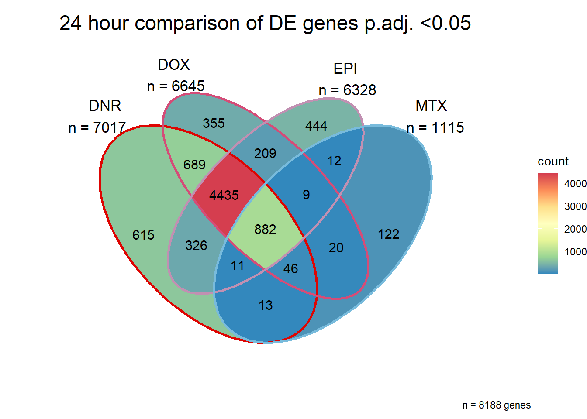

GO analysis
ERM
2023-04-17
Last updated: 2023-04-17
Checks: 7 0
Knit directory: Cardiotoxicity/
This reproducible R Markdown analysis was created with workflowr (version 1.7.0). The Checks tab describes the reproducibility checks that were applied when the results were created. The Past versions tab lists the development history.
Great! Since the R Markdown file has been committed to the Git repository, you know the exact version of the code that produced these results.
Great job! The global environment was empty. Objects defined in the global environment can affect the analysis in your R Markdown file in unknown ways. For reproduciblity it’s best to always run the code in an empty environment.
The command set.seed(20230109) was run prior to running
the code in the R Markdown file. Setting a seed ensures that any results
that rely on randomness, e.g. subsampling or permutations, are
reproducible.
Great job! Recording the operating system, R version, and package versions is critical for reproducibility.
Nice! There were no cached chunks for this analysis, so you can be confident that you successfully produced the results during this run.
Great job! Using relative paths to the files within your workflowr project makes it easier to run your code on other machines.
Great! You are using Git for version control. Tracking code development and connecting the code version to the results is critical for reproducibility.
The results in this page were generated with repository version b41cb80. See the Past versions tab to see a history of the changes made to the R Markdown and HTML files.
Note that you need to be careful to ensure that all relevant files for
the analysis have been committed to Git prior to generating the results
(you can use wflow_publish or
wflow_git_commit). workflowr only checks the R Markdown
file, but you know if there are other scripts or data files that it
depends on. Below is the status of the Git repository when the results
were generated:
Ignored files:
Ignored: .RData
Ignored: .Rhistory
Ignored: .Rproj.user/
Ignored: data/ACresponse_cluster24h.csv
Ignored: data/Clamp_Summary.csv
Ignored: data/Cormotif_24_k1-5_raw.RDS
Ignored: data/DAgostres24.RDS
Ignored: data/DAtable1.csv
Ignored: data/DDE_reQTL.txt
Ignored: data/DDEresp_list.csv
Ignored: data/DEG_cormotif.RDS
Ignored: data/DF_Plate_Peak.csv
Ignored: data/Da24counts.txt
Ignored: data/Dx24counts.txt
Ignored: data/Dx_reQTL_specific.txt
Ignored: data/Ep24counts.txt
Ignored: data/GOplots.R
Ignored: data/K_cluster
Ignored: data/K_cluster_kisthree.csv
Ignored: data/K_cluster_kistwo.csv
Ignored: data/Mt24counts.txt
Ignored: data/RINsamplelist.txt
Ignored: data/Seonane2019supp1.txt
Ignored: data/TOP2Bi-24hoursGO_analysis.csv
Ignored: data/TR24counts.txt
Ignored: data/Top2biresp_cluster24h.csv
Ignored: data/Viabilitylistfull.csv
Ignored: data/allexpressedgenes.txt
Ignored: data/allgenes.txt
Ignored: data/allmatrix.RDS
Ignored: data/avgLD50.RDS
Ignored: data/backGL.txt
Ignored: data/cormotif_3hk1-8.RDS
Ignored: data/cormotif_ER_cluster.txt
Ignored: data/cormotif_ER_respint.txt
Ignored: data/cormotif_ER_respset.txt
Ignored: data/cormotif_LR_cluster.txt
Ignored: data/cormotif_LR_respint.txt
Ignored: data/cormotif_LR_respset.txt
Ignored: data/cormotif_NRset.txt
Ignored: data/cormotif_TI_cluster.txt
Ignored: data/cormotif_TI_respint.txt
Ignored: data/cormotif_TI_respset.txt
Ignored: data/cormotif_initalK5.RDS
Ignored: data/cormotif_initialK5.RDS
Ignored: data/cormotif_initialall.RDS
Ignored: data/counts24hours.RDS
Ignored: data/cpmnorm_counts.csv
Ignored: data/dat_cpm.RDS
Ignored: data/data_outline.txt
Ignored: data/efit2.RDS
Ignored: data/efit2results.RDS
Ignored: data/ensembl_backup.RDS
Ignored: data/ensgtotal.txt
Ignored: data/filenameonly.txt
Ignored: data/filtered_cpm_counts.csv
Ignored: data/filtered_raw_counts.csv
Ignored: data/filtermatrix_x.RDS
Ignored: data/folder_05top/
Ignored: data/gene_prob_tran3h.RDS
Ignored: data/gene_probabilityk5.RDS
Ignored: data/gostresTop2bi_ER.RDS
Ignored: data/gostresTop2bi_LR
Ignored: data/gostresTop2bi_LR.RDS
Ignored: data/gostresTop2bi_TI.RDS
Ignored: data/gostrescoNR
Ignored: data/heartgenes.csv
Ignored: data/individualDRCfile.RDS
Ignored: data/knowles56.GMT
Ignored: data/knowlesGMT.GMT
Ignored: data/mymatrix.RDS
Ignored: data/nonresponse_cluster24h.csv
Ignored: data/norm_LDH.csv
Ignored: data/norm_counts.csv
Ignored: data/plan2plot.png
Ignored: data/raw_counts.csv
Ignored: data/response_cluster24h.csv
Ignored: data/sigVDA24.txt
Ignored: data/sigVDA3.txt
Ignored: data/sigVDX24.txt
Ignored: data/sigVDX3.txt
Ignored: data/sigVEP24.txt
Ignored: data/sigVEP3.txt
Ignored: data/sigVMT24.txt
Ignored: data/sigVMT3.txt
Ignored: data/sigVTR24.txt
Ignored: data/sigVTR3.txt
Ignored: data/siglist.RDS
Ignored: data/table3a.omar
Ignored: data/tvl24hour.txt
Ignored: data/tvl24hourw.txt
Ignored: data/venn_code.R
Untracked files:
Untracked: .RDataTmp
Untracked: .RDataTmp1
Untracked: .RDataTmp2
Untracked: analysis/other_analysis.Rmd
Untracked: code/extra_code.R
Untracked: corMotifcustom.R
Untracked: output/output-old/
Untracked: output/plan48ldh.png
Untracked: output/sequencing_info.txt
Untracked: output/tableNR.csv
Untracked: output/tabletop2Bi_ER.csv
Untracked: output/tabletop2Bi_LR.csv
Untracked: output/tabletop2Bi_TI.csv
Untracked: output/toplistall.csv
Untracked: reneebasecode.R
Unstaged changes:
Modified: code/Cormotifgenelist.R
Modified: code/Corrscripts.R
Modified: code/eQTLcodes.R
Deleted: output/Cormotif.svg
Deleted: output/Ctrxn24-3-23.svg
Deleted: output/Ctxnrate3-23.png
Deleted: output/Decay_Slope3-23.svg
Deleted: output/ERmotif5_LFC.svg
Deleted: output/GOBP_motif345.svg
Deleted: output/KEGGmotif_345.svg
Deleted: output/LD503-21-23.png
Deleted: output/LDH_24-3-23.svg
Deleted: output/LDH_243-23.svg
Deleted: output/LFCbytreatment3-25.svg
Deleted: output/LFCmotif4_LR.svg
Deleted: output/LR_RespMoti4.svg
Deleted: output/MeanAmp243-23.svg
Deleted: output/NRmotif1_LFC.svg
Deleted: output/Rise_Slope3-23.svg
Deleted: output/TI_LFC.svg
Deleted: output/TVLcorr3-23.svg
Deleted: output/TropI3-23.svg
Deleted: output/Venn24DEG-3-24.png
Deleted: output/motif1NR_LFC.svg
Deleted: output/motif3TIlfc3-25.svg
Deleted: output/motif4LR3-25LFC.svg
Deleted: output/motif5ER-LFC-3-25.svg
Deleted: output/nolegendLDH.svg
Deleted: output/resultsigVDA24.csv
Deleted: output/tropI_24-3-23.svg
Note that any generated files, e.g. HTML, png, CSS, etc., are not included in this status report because it is ok for generated content to have uncommitted changes.
These are the previous versions of the repository in which changes were
made to the R Markdown (analysis/DEG-GO_analysis.Rmd) and
HTML (docs/DEG-GO_analysis.html) files. If you’ve
configured a remote Git repository (see ?wflow_git_remote),
click on the hyperlinks in the table below to view the files as they
were in that past version.
| File | Version | Author | Date | Message |
|---|---|---|---|---|
| Rmd | b41cb80 | reneeisnowhere | 2023-04-17 | adding total counts percent graph |
| html | 353fc4a | reneeisnowhere | 2023-04-17 | Build site. |
| Rmd | 457bc7e | reneeisnowhere | 2023-04-17 | updated GO analysis |
| Rmd | 1e2e55e | reneeisnowhere | 2023-04-10 | before final data |
| Rmd | 4e52216 | reneeisnowhere | 2023-03-31 | End of week updates |
GO Analysis
I have created several files from the RNA analysis that contain the significant genes(determined by adj.P.val < 0.1) from each Time and Condition. The names of the files are in the following format: ‘sigV’+Drug(2 letters)+time.
example: ‘sigVDA3.txt’ means this file contains the significant DE genes from the Daunorubicin 3 hour compared to Vehicle Control 3 hour analysis
The analysis is based on all genes that passed the rowMeans>0 from the previous page whicha are about 14084 genes expressed in my RNA-seq data link
Below is the analysis of differentially expressed genes for each treatment at 3 hours and 24 hours.
Attaching package: 'ggpubr'The following object is masked from 'package:cowplot':
get_legendThe following object is masked from 'package:VennDiagram':
rotate ## Daunorubicin
## Daunorubicin
This is analysis on the significantly differentially expressed genes for Daunorubicin by 3 and 24 hours.
| source | term_id | term_name | intersection_size | term_size | p_value |
|---|---|---|---|---|---|
| GO:BP | GO:0006357 | regulation of transcription by RNA polymerase II | 274 | 1915 | 2.18e-33 |
| GO:BP | GO:0006366 | transcription by RNA polymerase II | 280 | 1991 | 2.73e-33 |
| GO:BP | GO:0006351 | DNA-templated transcription | 278 | 2683 | 1.90e-29 |
| GO:BP | GO:0097659 | nucleic acid-templated transcription | 278 | 2684 | 1.90e-29 |
| GO:BP | GO:1903506 | regulation of nucleic acid-templated transcription | 271 | 2581 | 4.28e-29 |
| GO:BP | GO:0006355 | regulation of DNA-templated transcription | 271 | 2579 | 4.28e-29 |
| GO:BP | GO:0051252 | regulation of RNA metabolic process | 286 | 2849 | 6.20e-29 |
| GO:BP | GO:0032774 | RNA biosynthetic process | 278 | 2714 | 6.38e-29 |
| GO:BP | GO:2001141 | regulation of RNA biosynthetic process | 271 | 2598 | 9.41e-29 |
| GO:BP | GO:0019219 | regulation of nucleobase-containing compound metabolic process | 298 | 3105 | 9.08e-28 |
| GO:BP | GO:0010556 | regulation of macromolecule biosynthetic process | 286 | 3015 | 2.40e-25 |
| GO:BP | GO:0031326 | regulation of cellular biosynthetic process | 287 | 3123 | 9.71e-23 |
| GO:BP | GO:0009889 | regulation of biosynthetic process | 288 | 3174 | 5.86e-22 |
| GO:BP | GO:0034654 | nucleobase-containing compound biosynthetic process | 282 | 3083 | 8.49e-22 |
| GO:BP | GO:0018130 | heterocycle biosynthetic process | 284 | 3148 | 3.40e-21 |
| GO:BP | GO:0019438 | aromatic compound biosynthetic process | 283 | 3149 | 1.20e-20 |
| GO:BP | GO:1901362 | organic cyclic compound biosynthetic process | 286 | 3253 | 2.77e-19 |
| GO:BP | GO:0009059 | macromolecule biosynthetic process | 306 | 3730 | 3.81e-18 |
| GO:BP | GO:0031323 | regulation of cellular metabolic process | 337 | 4305 | 1.90e-16 |
| GO:BP | GO:0044271 | cellular nitrogen compound biosynthetic process | 300 | 3758 | 3.73e-15 |
| GO:BP | GO:0051171 | regulation of nitrogen compound metabolic process | 333 | 4330 | 3.20e-14 |
| GO:BP | GO:0080090 | regulation of primary metabolic process | 339 | 4440 | 4.87e-14 |
| GO:BP | GO:0000122 | negative regulation of transcription by RNA polymerase II | 92 | 735 | 3.73e-12 |
| GO:BP | GO:0044249 | cellular biosynthetic process | 326 | 4465 | 2.43e-11 |
| GO:BP | GO:0045892 | negative regulation of DNA-templated transcription | 102 | 1009 | 1.21e-10 |
| GO:BP | GO:1903507 | negative regulation of nucleic acid-templated transcription | 102 | 1011 | 1.28e-10 |
| GO:BP | GO:1901576 | organic substance biosynthetic process | 327 | 4537 | 1.38e-10 |
| GO:BP | GO:1902679 | negative regulation of RNA biosynthetic process | 102 | 1020 | 2.29e-10 |
| GO:BP | GO:0051253 | negative regulation of RNA metabolic process | 107 | 1115 | 4.24e-10 |
| GO:BP | GO:0009058 | biosynthetic process | 328 | 4595 | 6.33e-10 |
| GO:BP | GO:0045934 | negative regulation of nucleobase-containing compound metabolic process | 110 | 1215 | 6.62e-09 |
| GO:BP | GO:0010468 | regulation of gene expression | 303 | 3583 | 9.50e-09 |
| GO:BP | GO:0010558 | negative regulation of macromolecule biosynthetic process | 108 | 1206 | 1.01e-08 |
| GO:BP | GO:0045893 | positive regulation of DNA-templated transcription | 147 | 1304 | 1.77e-08 |
| GO:BP | GO:1903508 | positive regulation of nucleic acid-templated transcription | 147 | 1304 | 1.77e-08 |
| GO:BP | GO:1902680 | positive regulation of RNA biosynthetic process | 147 | 1311 | 2.32e-08 |
| GO:BP | GO:0051254 | positive regulation of RNA metabolic process | 155 | 1431 | 3.18e-08 |
| GO:BP | GO:0031327 | negative regulation of cellular biosynthetic process | 108 | 1249 | 8.18e-08 |
| GO:BP | GO:0009890 | negative regulation of biosynthetic process | 108 | 1273 | 2.41e-07 |
| GO:BP | GO:0045944 | positive regulation of transcription by RNA polymerase II | 112 | 925 | 3.68e-07 |
| GO:BP | GO:0010557 | positive regulation of macromolecule biosynthetic process | 154 | 1499 | 1.50e-06 |
| GO:BP | GO:0031324 | negative regulation of cellular metabolic process | 141 | 1780 | 1.72e-06 |
| GO:BP | GO:0045935 | positive regulation of nucleobase-containing compound metabolic process | 161 | 1600 | 1.81e-06 |
| GO:BP | GO:0031328 | positive regulation of cellular biosynthetic process | 157 | 1571 | 9.83e-06 |
| GO:BP | GO:0009891 | positive regulation of biosynthetic process | 157 | 1598 | 3.41e-05 |
| GO:BP | GO:0060255 | regulation of macromolecule metabolic process | 342 | 4640 | 5.02e-05 |
| GO:BP | GO:0051172 | negative regulation of nitrogen compound metabolic process | 131 | 1866 | 3.74e-04 |
| GO:BP | GO:0019222 | regulation of metabolic process | 135 | 5039 | 7.06e-04 |
| GO:BP | GO:0031325 | positive regulation of cellular metabolic process | 168 | 2373 | 1.46e-03 |
| GO:BP | GO:0060411 | cardiac septum morphogenesis | 8 | 67 | 1.76e-03 |
| GO:BP | GO:0002763 | positive regulation of myeloid leukocyte differentiation | 2 | 34 | 1.95e-03 |
| GO:BP | GO:0140467 | integrated stress response signaling | 7 | 34 | 1.95e-03 |
| GO:BP | GO:0003281 | ventricular septum development | 11 | 69 | 2.55e-03 |
| GO:BP | GO:0051173 | positive regulation of nitrogen compound metabolic process | 169 | 2425 | 2.55e-03 |
| GO:BP | GO:0090092 | regulation of transmembrane receptor protein serine/threonine kinase signaling pathway | 23 | 229 | 3.40e-03 |
| GO:BP | GO:0003181 | atrioventricular valve morphogenesis | 5 | 24 | 3.40e-03 |
| GO:BP | GO:0030510 | regulation of BMP signaling pathway | 5 | 84 | 3.99e-03 |
| GO:BP | GO:0043009 | chordate embryonic development | 47 | 531 | 4.25e-03 |
| GO:BP | GO:0017015 | regulation of transforming growth factor beta receptor signaling pathway | 15 | 126 | 4.42e-03 |
| GO:BP | GO:0045639 | positive regulation of myeloid cell differentiation | 2 | 67 | 5.06e-03 |
| GO:BP | GO:1903844 | regulation of cellular response to transforming growth factor beta stimulus | 15 | 127 | 5.49e-03 |
| GO:BP | GO:0003162 | atrioventricular node development | 3 | 8 | 5.49e-03 |
| GO:BP | GO:0003171 | atrioventricular valve development | 5 | 26 | 5.52e-03 |
| GO:BP | GO:0018076 | N-terminal peptidyl-lysine acetylation | 3 | 4 | 6.40e-03 |
| GO:BP | GO:0021915 | neural tube development | 16 | 146 | 6.40e-03 |
| GO:BP | GO:0002761 | regulation of myeloid leukocyte differentiation | 2 | 77 | 6.74e-03 |
| GO:BP | GO:0003007 | heart morphogenesis | 28 | 212 | 7.56e-03 |
| GO:BP | GO:0009792 | embryo development ending in birth or egg hatching | 47 | 548 | 7.91e-03 |
| GO:BP | GO:0019827 | stem cell population maintenance | 14 | 150 | 9.62e-03 |
| GO:BP | GO:0090100 | positive regulation of transmembrane receptor protein serine/threonine kinase signaling pathway | 12 | 99 | 9.97e-03 |
| GO:BP | GO:0016070 | RNA metabolic process | 42 | 3593 | 1.00e-02 |
| GO:BP | GO:0090304 | nucleic acid metabolic process | 44 | 4047 | 1.00e-02 |
| GO:BP | GO:0060840 | artery development | 11 | 82 | 1.05e-02 |
| GO:BP | GO:0045643 | regulation of eosinophil differentiation | 1 | 1 | 1.09e-02 |
| GO:BP | GO:0045659 | negative regulation of neutrophil differentiation | 1 | 2 | 1.09e-02 |
| GO:BP | GO:0098727 | maintenance of cell number | 14 | 152 | 1.09e-02 |
| GO:BP | GO:0045645 | positive regulation of eosinophil differentiation | 1 | 1 | 1.09e-02 |
| GO:BP | GO:0030853 | negative regulation of granulocyte differentiation | 2 | 6 | 1.22e-02 |
| GO:BP | GO:1903708 | positive regulation of hemopoiesis | 2 | 118 | 1.29e-02 |
| GO:BP | GO:1902107 | positive regulation of leukocyte differentiation | 2 | 118 | 1.29e-02 |
| GO:BP | GO:0003279 | cardiac septum development | 12 | 101 | 1.39e-02 |
| GO:BP | GO:0045658 | regulation of neutrophil differentiation | 1 | 2 | 1.52e-02 |
| GO:BP | GO:0090425 | acinar cell differentiation | 3 | 5 | 1.56e-02 |
| GO:BP | GO:0003215 | cardiac right ventricle morphogenesis | 6 | 17 | 1.56e-02 |
| GO:BP | GO:0045637 | regulation of myeloid cell differentiation | 2 | 151 | 1.58e-02 |
| GO:BP | GO:0003179 | heart valve morphogenesis | 6 | 50 | 1.58e-02 |
| GO:BP | GO:0045597 | positive regulation of cell differentiation | 3 | 619 | 1.59e-02 |
| GO:BP | GO:0002573 | myeloid leukocyte differentiation | 2 | 145 | 1.66e-02 |
| GO:BP | GO:0001841 | neural tube formation | 11 | 101 | 1.71e-02 |
| GO:BP | GO:0010944 | negative regulation of transcription by competitive promoter binding | 2 | 8 | 1.78e-02 |
| GO:BP | GO:0030509 | BMP signaling pathway | 5 | 123 | 1.78e-02 |
| GO:BP | GO:0055025 | positive regulation of cardiac muscle tissue development | 1 | 2 | 1.80e-02 |
| GO:BP | GO:0002065 | columnar/cuboidal epithelial cell differentiation | 8 | 79 | 1.80e-02 |
| GO:BP | GO:0051890 | regulation of cardioblast differentiation | 4 | 7 | 1.84e-02 |
| GO:BP | GO:0071772 | response to BMP | 11 | 131 | 1.89e-02 |
| GO:BP | GO:0071773 | cellular response to BMP stimulus | 11 | 131 | 1.89e-02 |
| GO:BP | GO:0003183 | mitral valve morphogenesis | 3 | 10 | 1.89e-02 |
| GO:BP | GO:0060412 | ventricular septum morphogenesis | 7 | 40 | 1.93e-02 |
| GO:BP | GO:1902893 | regulation of miRNA transcription | 5 | 51 | 1.96e-02 |
| GO:BP | GO:0010604 | positive regulation of macromolecule metabolic process | 179 | 2648 | 1.96e-02 |
| GO:BP | GO:0030222 | eosinophil differentiation | 1 | 2 | 2.05e-02 |
| GO:BP | GO:0061614 | miRNA transcription | 5 | 52 | 2.05e-02 |
| GO:BP | GO:0007179 | transforming growth factor beta receptor signaling pathway | 17 | 177 | 2.18e-02 |
| GO:BP | GO:0002320 | lymphoid progenitor cell differentiation | 5 | 17 | 2.31e-02 |
| GO:BP | GO:0060430 | lung saccule development | 2 | 7 | 2.31e-02 |
| GO:BP | GO:0003174 | mitral valve development | 3 | 11 | 2.31e-02 |
| GO:BP | GO:0048636 | positive regulation of muscle organ development | 1 | 3 | 2.31e-02 |
| GO:BP | GO:0045844 | positive regulation of striated muscle tissue development | 1 | 3 | 2.31e-02 |
| GO:BP | GO:0060394 | negative regulation of pathway-restricted SMAD protein phosphorylation | 2 | 12 | 2.43e-02 |
| GO:BP | GO:0036499 | PERK-mediated unfolded protein response | 4 | 17 | 2.43e-02 |
| GO:BP | GO:0010660 | regulation of muscle cell apoptotic process | 8 | 57 | 2.45e-02 |
| GO:BP | GO:0001657 | ureteric bud development | 4 | 75 | 2.48e-02 |
| GO:BP | GO:0006473 | protein acetylation | 16 | 208 | 2.48e-02 |
| GO:BP | GO:0072164 | mesonephric tubule development | 4 | 76 | 2.51e-02 |
| GO:BP | GO:0072163 | mesonephric epithelium development | 4 | 76 | 2.51e-02 |
| GO:BP | GO:0030514 | negative regulation of BMP signaling pathway | 3 | 45 | 2.52e-02 |
| GO:BP | GO:1902105 | regulation of leukocyte differentiation | 2 | 197 | 2.61e-02 |
| GO:BP | GO:0003310 | pancreatic A cell differentiation | 2 | 2 | 2.74e-02 |
| GO:BP | GO:0001823 | mesonephros development | 4 | 77 | 2.74e-02 |
| GO:BP | GO:0030854 | positive regulation of granulocyte differentiation | 1 | 5 | 2.74e-02 |
| GO:BP | GO:1990441 | negative regulation of transcription from RNA polymerase II promoter in response to endoplasmic reticulum stress | 2 | 4 | 2.74e-02 |
| GO:BP | GO:0014020 | primary neural tube formation | 10 | 94 | 2.74e-02 |
| GO:BP | GO:0003170 | heart valve development | 6 | 57 | 2.75e-02 |
| GO:BP | GO:0034616 | response to laminar fluid shear stress | 2 | 14 | 2.93e-02 |
| GO:BP | GO:0003148 | outflow tract septum morphogenesis | 3 | 23 | 2.99e-02 |
| GO:BP | GO:0030852 | regulation of granulocyte differentiation | 2 | 11 | 3.15e-02 |
| GO:BP | GO:0055024 | regulation of cardiac muscle tissue development | 1 | 3 | 3.15e-02 |
| GO:BP | GO:0030223 | neutrophil differentiation | 1 | 8 | 3.15e-02 |
| GO:BP | GO:0007507 | heart development | 41 | 502 | 3.15e-02 |
| GO:BP | GO:0010657 | muscle cell apoptotic process | 8 | 60 | 3.15e-02 |
| GO:BP | GO:0030513 | positive regulation of BMP signaling pathway | 5 | 34 | 3.15e-02 |
| GO:BP | GO:2000628 | regulation of miRNA metabolic process | 5 | 62 | 3.15e-02 |
| GO:BP | GO:0010667 | negative regulation of cardiac muscle cell apoptotic process | 6 | 22 | 3.15e-02 |
| GO:BP | GO:0002328 | pro-B cell differentiation | 3 | 10 | 3.18e-02 |
| GO:BP | GO:0010656 | negative regulation of muscle cell apoptotic process | 6 | 36 | 3.20e-02 |
| GO:BP | GO:1904290 | negative regulation of mitotic DNA damage checkpoint | 1 | 1 | 3.37e-02 |
| GO:BP | GO:0048844 | artery morphogenesis | 8 | 57 | 3.53e-02 |
| GO:BP | GO:1902459 | positive regulation of stem cell population maintenance | 6 | 44 | 3.53e-02 |
| GO:BP | GO:0003151 | outflow tract morphogenesis | 9 | 66 | 3.53e-02 |
| GO:BP | GO:0072175 | epithelial tube formation | 12 | 127 | 3.53e-02 |
| GO:BP | GO:0003206 | cardiac chamber morphogenesis | 8 | 109 | 3.53e-02 |
| GO:BP | GO:1903706 | regulation of hemopoiesis | 2 | 277 | 3.53e-02 |
| GO:BP | GO:0018394 | peptidyl-lysine acetylation | 14 | 180 | 3.53e-02 |
| GO:BP | GO:0009250 | glucan biosynthetic process | 6 | 38 | 3.53e-02 |
| GO:BP | GO:0030099 | myeloid cell differentiation | 2 | 301 | 3.53e-02 |
| GO:BP | GO:0005978 | glycogen biosynthetic process | 6 | 38 | 3.53e-02 |
| GO:BP | GO:0060419 | heart growth | 12 | 72 | 3.53e-02 |
| GO:BP | GO:2000736 | regulation of stem cell differentiation | 12 | 74 | 3.53e-02 |
| GO:BP | GO:0051094 | positive regulation of developmental process | 3 | 958 | 3.53e-02 |
| GO:BP | GO:1900034 | regulation of cellular response to heat | 4 | 16 | 3.53e-02 |
| GO:BP | GO:0001701 | in utero embryonic development | 29 | 342 | 3.59e-02 |
| GO:BP | GO:0010720 | positive regulation of cell development | 2 | 316 | 3.77e-02 |
| GO:BP | GO:0031665 | negative regulation of lipopolysaccharide-mediated signaling pathway | 1 | 7 | 3.81e-02 |
| GO:BP | GO:0071559 | response to transforming growth factor beta | 19 | 224 | 3.97e-02 |
| GO:BP | GO:1903674 | regulation of cap-dependent translational initiation | 1 | 1 | 3.98e-02 |
| GO:BP | GO:1903676 | positive regulation of cap-dependent translational initiation | 1 | 1 | 3.98e-02 |
| GO:BP | GO:2000026 | regulation of multicellular organismal development | 3 | 1007 | 3.98e-02 |
| GO:BP | GO:0015074 | DNA integration | 4 | 11 | 4.14e-02 |
| GO:BP | GO:0045651 | positive regulation of macrophage differentiation | 1 | 12 | 4.14e-02 |
| GO:BP | GO:0060509 | type I pneumocyte differentiation | 1 | 8 | 4.14e-02 |
| GO:BP | GO:0055017 | cardiac muscle tissue growth | 11 | 65 | 4.14e-02 |
| GO:BP | GO:0006139 | nucleobase-containing compound metabolic process | 44 | 4503 | 4.14e-02 |
| GO:BP | GO:0035910 | ascending aorta morphogenesis | 2 | 4 | 4.19e-02 |
| GO:BP | GO:0007178 | transmembrane receptor protein serine/threonine kinase signaling pathway | 22 | 301 | 4.27e-02 |
| GO:BP | GO:0045622 | regulation of T-helper cell differentiation | 3 | 20 | 4.28e-02 |
| GO:BP | GO:0001838 | embryonic epithelial tube formation | 11 | 116 | 4.42e-02 |
| GO:BP | GO:2001020 | regulation of response to DNA damage stimulus | 25 | 292 | 4.50e-02 |
| GO:BP | GO:2000320 | negative regulation of T-helper 17 cell differentiation | 2 | 6 | 4.57e-02 |
| GO:BP | GO:0035904 | aorta development | 7 | 49 | 4.60e-02 |
| GO:BP | GO:0010664 | negative regulation of striated muscle cell apoptotic process | 6 | 25 | 4.87e-02 |
| GO:BP | GO:0060395 | SMAD protein signal transduction | 5 | 65 | 4.90e-02 |
| GO:BP | GO:0001843 | neural tube closure | 9 | 90 | 4.91e-02 |
| GO:BP | GO:0051170 | import into nucleus | 4 | 151 | 4.97e-02 |
| GO:BP | GO:0045595 | regulation of cell differentiation | 3 | 1134 | 4.98e-02 |
| KEGG | KEGG:05168 | Herpes simplex virus 1 infection | 86 | 415 | 6.56e-21 |
A look at the Daunorubicin specific genes at 3 hours and how they may relate to 24 hour genes using GO analysis
3 hours specifically:

`.cols` has been renamed and is deprecated, please use `.vars`| source | term_id | term_name | intersection_size | term_size | p_value |
|---|---|---|---|---|---|
| GO:BP | GO:0006357 | regulation of transcription by RNA polymerase II | 137 | 1915 | 6.69e-09 |
| GO:BP | GO:0006366 | transcription by RNA polymerase II | 140 | 1991 | 6.69e-09 |
| GO:BP | GO:0006351 | DNA-templated transcription | 160 | 2683 | 1.69e-08 |
| GO:BP | GO:0097659 | nucleic acid-templated transcription | 160 | 2684 | 1.69e-08 |
| GO:BP | GO:0006355 | regulation of DNA-templated transcription | 158 | 2579 | 2.30e-08 |
| GO:BP | GO:1903506 | regulation of nucleic acid-templated transcription | 158 | 2581 | 2.30e-08 |
| GO:BP | GO:0032774 | RNA biosynthetic process | 160 | 2714 | 2.30e-08 |
| GO:BP | GO:2001141 | regulation of RNA biosynthetic process | 158 | 2598 | 3.32e-08 |
| GO:BP | GO:0051252 | regulation of RNA metabolic process | 129 | 2849 | 3.56e-08 |
| GO:BP | GO:0019219 | regulation of nucleobase-containing compound metabolic process | 135 | 3105 | 9.46e-08 |
| GO:BP | GO:0010556 | regulation of macromolecule biosynthetic process | 130 | 3015 | 3.83e-07 |
| GO:BP | GO:0031326 | regulation of cellular biosynthetic process | 131 | 3123 | 2.55e-06 |
| GO:BP | GO:0009889 | regulation of biosynthetic process | 131 | 3174 | 6.85e-06 |
| GO:BP | GO:0018130 | heterocycle biosynthetic process | 129 | 3148 | 1.34e-05 |
| GO:BP | GO:0034654 | nucleobase-containing compound biosynthetic process | 127 | 3083 | 1.45e-05 |
| GO:BP | GO:0019438 | aromatic compound biosynthetic process | 128 | 3149 | 2.72e-05 |
| GO:BP | GO:1901362 | organic cyclic compound biosynthetic process | 131 | 3253 | 3.16e-05 |
| GO:BP | GO:0009059 | macromolecule biosynthetic process | 142 | 3730 | 4.15e-05 |
| GO:BP | GO:0031323 | regulation of cellular metabolic process | 157 | 4305 | 2.47e-04 |
| GO:BP | GO:0044271 | cellular nitrogen compound biosynthetic process | 139 | 3758 | 5.77e-04 |
| GO:BP | GO:0044249 | cellular biosynthetic process | 158 | 4465 | 7.01e-04 |
| GO:BP | GO:0140467 | integrated stress response signaling | 5 | 34 | 1.09e-03 |
| GO:BP | GO:1901576 | organic substance biosynthetic process | 159 | 4537 | 1.09e-03 |
| GO:BP | GO:1903508 | positive regulation of nucleic acid-templated transcription | 83 | 1304 | 1.09e-03 |
| GO:BP | GO:0045893 | positive regulation of DNA-templated transcription | 83 | 1304 | 1.09e-03 |
| GO:BP | GO:1902680 | positive regulation of RNA biosynthetic process | 83 | 1311 | 1.23e-03 |
| GO:BP | GO:0009058 | biosynthetic process | 159 | 4595 | 2.52e-03 |
| GO:BP | GO:0051254 | positive regulation of RNA metabolic process | 86 | 1431 | 3.44e-03 |
| GO:BP | GO:0010557 | positive regulation of macromolecule biosynthetic process | 89 | 1499 | 3.69e-03 |
| GO:BP | GO:0031328 | positive regulation of cellular biosynthetic process | 88 | 1571 | 5.40e-03 |
| GO:BP | GO:1901522 | positive regulation of transcription from RNA polymerase II promoter involved in cellular response to chemical stimulus | 3 | 18 | 7.29e-03 |
| GO:BP | GO:0080090 | regulation of primary metabolic process | 217 | 4440 | 1.03e-02 |
| GO:BP | GO:0009891 | positive regulation of biosynthetic process | 88 | 1598 | 1.03e-02 |
| GO:BP | GO:0045944 | positive regulation of transcription by RNA polymerase II | 61 | 925 | 1.37e-02 |
| GO:BP | GO:0051171 | regulation of nitrogen compound metabolic process | 211 | 4330 | 1.51e-02 |
| GO:BP | GO:0045935 | positive regulation of nucleobase-containing compound metabolic process | 90 | 1600 | 1.65e-02 |
| GO:BP | GO:2000121 | regulation of removal of superoxide radicals | 2 | 6 | 2.35e-02 |
| GO:BP | GO:0036499 | PERK-mediated unfolded protein response | 3 | 17 | 2.40e-02 |
| GO:BP | GO:0000122 | negative regulation of transcription by RNA polymerase II | 36 | 735 | 4.04e-02 |
| GO:BP | GO:0043618 | regulation of transcription from RNA polymerase II promoter in response to stress | 3 | 39 | 4.65e-02 |
| GO:BP | GO:0051253 | negative regulation of RNA metabolic process | 43 | 1115 | 4.89e-02 |
| KEGG | KEGG:05168 | Herpes simplex virus 1 infection | 44 | 415 | 5.92e-08 |

`.cols` has been renamed and is deprecated, please use `.vars`| source | term_id | term_name | intersection_size | term_size | p_value |
|---|---|---|---|---|---|
| GO:BP | GO:0006357 | regulation of transcription by RNA polymerase II | 137 | 1915 | 6.69e-09 |
| GO:BP | GO:0006366 | transcription by RNA polymerase II | 140 | 1991 | 6.69e-09 |
| GO:BP | GO:0006351 | DNA-templated transcription | 160 | 2683 | 1.69e-08 |
| GO:BP | GO:0097659 | nucleic acid-templated transcription | 160 | 2684 | 1.69e-08 |
| GO:BP | GO:0006355 | regulation of DNA-templated transcription | 158 | 2579 | 2.30e-08 |
| GO:BP | GO:1903506 | regulation of nucleic acid-templated transcription | 158 | 2581 | 2.30e-08 |
| GO:BP | GO:0032774 | RNA biosynthetic process | 160 | 2714 | 2.30e-08 |
| GO:BP | GO:2001141 | regulation of RNA biosynthetic process | 158 | 2598 | 3.32e-08 |
| GO:BP | GO:0051252 | regulation of RNA metabolic process | 129 | 2849 | 3.56e-08 |
| GO:BP | GO:0019219 | regulation of nucleobase-containing compound metabolic process | 135 | 3105 | 9.46e-08 |
| GO:BP | GO:0010556 | regulation of macromolecule biosynthetic process | 130 | 3015 | 3.83e-07 |
| GO:BP | GO:0031326 | regulation of cellular biosynthetic process | 131 | 3123 | 2.55e-06 |
| GO:BP | GO:0009889 | regulation of biosynthetic process | 131 | 3174 | 6.85e-06 |
| GO:BP | GO:0018130 | heterocycle biosynthetic process | 129 | 3148 | 1.34e-05 |
| GO:BP | GO:0034654 | nucleobase-containing compound biosynthetic process | 127 | 3083 | 1.45e-05 |
| GO:BP | GO:0019438 | aromatic compound biosynthetic process | 128 | 3149 | 2.72e-05 |
| GO:BP | GO:1901362 | organic cyclic compound biosynthetic process | 131 | 3253 | 3.16e-05 |
| GO:BP | GO:0009059 | macromolecule biosynthetic process | 142 | 3730 | 4.15e-05 |
| GO:BP | GO:0031323 | regulation of cellular metabolic process | 157 | 4305 | 2.47e-04 |
| GO:BP | GO:0044271 | cellular nitrogen compound biosynthetic process | 139 | 3758 | 5.77e-04 |
| GO:BP | GO:0044249 | cellular biosynthetic process | 158 | 4465 | 7.01e-04 |
| GO:BP | GO:0140467 | integrated stress response signaling | 5 | 34 | 1.09e-03 |
| GO:BP | GO:1901576 | organic substance biosynthetic process | 159 | 4537 | 1.09e-03 |
| GO:BP | GO:1903508 | positive regulation of nucleic acid-templated transcription | 83 | 1304 | 1.09e-03 |
| GO:BP | GO:0045893 | positive regulation of DNA-templated transcription | 83 | 1304 | 1.09e-03 |
| GO:BP | GO:1902680 | positive regulation of RNA biosynthetic process | 83 | 1311 | 1.23e-03 |
| GO:BP | GO:0009058 | biosynthetic process | 159 | 4595 | 2.52e-03 |
| GO:BP | GO:0051254 | positive regulation of RNA metabolic process | 86 | 1431 | 3.44e-03 |
| GO:BP | GO:0010557 | positive regulation of macromolecule biosynthetic process | 89 | 1499 | 3.69e-03 |
| GO:BP | GO:0031328 | positive regulation of cellular biosynthetic process | 88 | 1571 | 5.40e-03 |
| GO:BP | GO:1901522 | positive regulation of transcription from RNA polymerase II promoter involved in cellular response to chemical stimulus | 3 | 18 | 7.29e-03 |
| GO:BP | GO:0080090 | regulation of primary metabolic process | 217 | 4440 | 1.03e-02 |
| GO:BP | GO:0009891 | positive regulation of biosynthetic process | 88 | 1598 | 1.03e-02 |
| GO:BP | GO:0045944 | positive regulation of transcription by RNA polymerase II | 61 | 925 | 1.37e-02 |
| GO:BP | GO:0051171 | regulation of nitrogen compound metabolic process | 211 | 4330 | 1.51e-02 |
| GO:BP | GO:0045935 | positive regulation of nucleobase-containing compound metabolic process | 90 | 1600 | 1.65e-02 |
| GO:BP | GO:2000121 | regulation of removal of superoxide radicals | 2 | 6 | 2.35e-02 |
| GO:BP | GO:0036499 | PERK-mediated unfolded protein response | 3 | 17 | 2.40e-02 |
| GO:BP | GO:0000122 | negative regulation of transcription by RNA polymerase II | 36 | 735 | 4.04e-02 |
| GO:BP | GO:0043618 | regulation of transcription from RNA polymerase II promoter in response to stress | 3 | 39 | 4.65e-02 |
| GO:BP | GO:0051253 | negative regulation of RNA metabolic process | 43 | 1115 | 4.89e-02 |
| KEGG | KEGG:05168 | Herpes simplex virus 1 infection | 44 | 415 | 5.92e-08 |
[1] 455 ###Daunorubicin 24 sigDEG
###Daunorubicin 24 sigDEG

`.cols` has been renamed and is deprecated, please use `.vars`| source | term_id | term_name | intersection_size | term_size | p_value |
|---|---|---|---|---|---|
| GO:BP | GO:0000278 | mitotic cell cycle | 186 | 833 | 2.06e-06 |
| GO:BP | GO:0000819 | sister chromatid segregation | 74 | 234 | 2.06e-06 |
| GO:BP | GO:0000070 | mitotic sister chromatid segregation | 50 | 193 | 2.20e-06 |
| GO:BP | GO:0007059 | chromosome segregation | 84 | 378 | 2.79e-06 |
| GO:BP | GO:0051301 | cell division | 149 | 567 | 6.11e-06 |
| GO:BP | GO:0140014 | mitotic nuclear division | 79 | 264 | 1.36e-05 |
| GO:BP | GO:1903047 | mitotic cell cycle process | 155 | 700 | 1.36e-05 |
| GO:BP | GO:0045930 | negative regulation of mitotic cell cycle | 77 | 208 | 1.63e-05 |
| GO:BP | GO:0010564 | regulation of cell cycle process | 143 | 620 | 5.85e-05 |
| GO:BP | GO:0006541 | glutamine metabolic process | 4 | 23 | 8.15e-05 |
| KEGG | KEGG:04115 | p53 signaling pathway | 15 | 65 | 6.45e-06 |
###Daunorubicin 3 v 24 intersection

`.cols` has been renamed and is deprecated, please use `.vars`| source | term_id | term_name | intersection_size | term_size | p_value |
|---|---|---|---|---|---|
| GO:BP | GO:0006357 | regulation of transcription by RNA polymerase II | 148 | 1915 | 5.72e-18 |
| GO:BP | GO:0006366 | transcription by RNA polymerase II | 149 | 1991 | 4.76e-17 |
| GO:BP | GO:0006355 | regulation of DNA-templated transcription | 168 | 2579 | 4.45e-14 |
| GO:BP | GO:1903506 | regulation of nucleic acid-templated transcription | 168 | 2581 | 4.45e-14 |
| GO:BP | GO:2001141 | regulation of RNA biosynthetic process | 168 | 2598 | 7.02e-14 |
| GO:BP | GO:0006351 | DNA-templated transcription | 170 | 2683 | 1.29e-13 |
| GO:BP | GO:0097659 | nucleic acid-templated transcription | 170 | 2684 | 1.29e-13 |
| GO:BP | GO:0032774 | RNA biosynthetic process | 170 | 2714 | 3.04e-13 |
| GO:BP | GO:0051252 | regulation of RNA metabolic process | 175 | 2849 | 3.04e-13 |
| GO:BP | GO:0010556 | regulation of macromolecule biosynthetic process | 175 | 3015 | 3.04e-11 |
| GO:BP | GO:0019219 | regulation of nucleobase-containing compound metabolic process | 179 | 3105 | 3.04e-11 |
| GO:BP | GO:0031326 | regulation of cellular biosynthetic process | 176 | 3123 | 5.63e-10 |
| GO:BP | GO:0009889 | regulation of biosynthetic process | 177 | 3174 | 1.11e-09 |
| GO:BP | GO:0034654 | nucleobase-containing compound biosynthetic process | 173 | 3083 | 1.42e-09 |
| GO:BP | GO:0018130 | heterocycle biosynthetic process | 175 | 3148 | 1.74e-09 |
| GO:BP | GO:0019438 | aromatic compound biosynthetic process | 174 | 3149 | 4.35e-09 |
| GO:BP | GO:1901362 | organic cyclic compound biosynthetic process | 79 | 3253 | 9.96e-09 |
| GO:BP | GO:0000122 | negative regulation of transcription by RNA polymerase II | 57 | 735 | 1.20e-08 |
| GO:BP | GO:0009059 | macromolecule biosynthetic process | 168 | 3730 | 3.58e-07 |
| GO:BP | GO:0031323 | regulation of cellular metabolic process | 89 | 4305 | 1.20e-06 |
| GO:BP | GO:0044271 | cellular nitrogen compound biosynthetic process | 80 | 3758 | 2.41e-06 |
| GO:BP | GO:0045892 | negative regulation of DNA-templated transcription | 62 | 1009 | 3.49e-06 |
| GO:BP | GO:1903507 | negative regulation of nucleic acid-templated transcription | 62 | 1011 | 3.53e-06 |
| GO:BP | GO:0080090 | regulation of primary metabolic process | 91 | 4440 | 3.99e-06 |
| GO:BP | GO:0051171 | regulation of nitrogen compound metabolic process | 36 | 4330 | 4.40e-06 |
| GO:BP | GO:1902679 | negative regulation of RNA biosynthetic process | 62 | 1020 | 4.65e-06 |
| GO:BP | GO:0051253 | negative regulation of RNA metabolic process | 66 | 1115 | 8.05e-06 |
| GO:BP | GO:0010468 | regulation of gene expression | 32 | 3583 | 6.08e-05 |
| GO:BP | GO:0010558 | negative regulation of macromolecule biosynthetic process | 65 | 1206 | 7.40e-05 |
| GO:BP | GO:0044249 | cellular biosynthetic process | 85 | 4465 | 8.71e-05 |
| KEGG | KEGG:05168 | Herpes simplex virus 1 infection | 49 | 415 | 2.22e-10 |
##Doxorubicin 3 hour and 24 hour

| source | term_id | term_name | intersection_size | term_size | p_value |
|---|---|---|---|---|---|
| GO:BP | GO:0019219 | regulation of nucleobase-containing compound metabolic process | 15 | 3105 | 4.53e-02 |
| GO:BP | GO:0051252 | regulation of RNA metabolic process | 14 | 2849 | 4.53e-02 |
| GO:BP | GO:1900036 | positive regulation of cellular response to heat | 1 | 1 | 4.53e-02 |
| GO:BP | GO:1904289 | regulation of mitotic DNA damage checkpoint | 1 | 3 | 4.53e-02 |
| GO:BP | GO:1904290 | negative regulation of mitotic DNA damage checkpoint | 1 | 1 | 4.53e-02 |
| GO:BP | GO:0006351 | DNA-templated transcription | 13 | 2683 | 5.00e-02 |
| GO:BP | GO:0006355 | regulation of DNA-templated transcription | 13 | 2579 | 5.00e-02 |
| GO:BP | GO:0010556 | regulation of macromolecule biosynthetic process | 16 | 3015 | 5.00e-02 |
| GO:BP | GO:0032774 | RNA biosynthetic process | 13 | 2714 | 5.00e-02 |
| GO:BP | GO:0097659 | nucleic acid-templated transcription | 13 | 2684 | 5.00e-02 |
| GO:BP | GO:1901977 | negative regulation of cell cycle checkpoint | 1 | 8 | 5.00e-02 |
| GO:BP | GO:1903506 | regulation of nucleic acid-templated transcription | 13 | 2581 | 5.00e-02 |
| GO:BP | GO:2000002 | negative regulation of DNA damage checkpoint | 1 | 5 | 5.00e-02 |
| GO:BP | GO:2001141 | regulation of RNA biosynthetic process | 13 | 2598 | 5.00e-02 |

| source | term_id | term_name | intersection_size | term_size | p_value |
|---|---|---|---|---|---|
| GO:BP | GO:0000278 | mitotic cell cycle | 148 | 833 | 2.66e-10 |
| GO:BP | GO:1903047 | mitotic cell cycle process | 187 | 700 | 1.19e-09 |
| GO:BP | GO:0007059 | chromosome segregation | 84 | 378 | 3.00e-09 |
| GO:BP | GO:0000070 | mitotic sister chromatid segregation | 61 | 193 | 3.22e-09 |
| GO:BP | GO:0000819 | sister chromatid segregation | 79 | 234 | 3.25e-09 |
| GO:BP | GO:0140014 | mitotic nuclear division | 60 | 264 | 3.28e-09 |
| GO:BP | GO:0010564 | regulation of cell cycle process | 118 | 620 | 3.28e-09 |
| GO:BP | GO:0051301 | cell division | 124 | 567 | 5.57e-09 |
| GO:BP | GO:0051276 | chromosome organization | 104 | 543 | 7.53e-08 |
| GO:BP | GO:0007093 | mitotic cell cycle checkpoint signaling | 47 | 136 | 7.53e-08 |
| GO:BP | GO:0045930 | negative regulation of mitotic cell cycle | 59 | 208 | 1.29e-07 |
| GO:BP | GO:0022402 | cell cycle process | 168 | 1075 | 1.80e-07 |
| GO:BP | GO:0000075 | cell cycle checkpoint signaling | 50 | 180 | 1.80e-07 |
| GO:BP | GO:0051726 | regulation of cell cycle | 156 | 950 | 2.84e-07 |
| GO:BP | GO:0000280 | nuclear division | 79 | 354 | 5.39e-07 |
| GO:BP | GO:0098813 | nuclear chromosome segregation | 78 | 287 | 1.05e-06 |
| GO:BP | GO:0007051 | spindle organization | 48 | 186 | 1.26e-06 |
| GO:BP | GO:1902850 | microtubule cytoskeleton organization involved in mitosis | 39 | 156 | 2.46e-06 |
| GO:BP | GO:0007049 | cell cycle | 217 | 1522 | 2.46e-06 |
| GO:BP | GO:0007052 | mitotic spindle organization | 34 | 128 | 2.46e-06 |
| GO:BP | GO:0051988 | regulation of attachment of spindle microtubules to kinetochore | 12 | 18 | 2.46e-06 |
| GO:BP | GO:0051225 | spindle assembly | 35 | 118 | 6.37e-06 |
| GO:BP | GO:0048285 | organelle fission | 81 | 397 | 6.67e-06 |
| GO:BP | GO:0008608 | attachment of spindle microtubules to kinetochore | 19 | 42 | 7.01e-06 |
| GO:BP | GO:0006974 | cellular response to DNA damage stimulus | 121 | 789 | 8.07e-06 |
| GO:BP | GO:2001251 | negative regulation of chromosome organization | 39 | 90 | 8.34e-06 |
| GO:BP | GO:0007346 | regulation of mitotic cell cycle | 82 | 438 | 8.85e-06 |
| GO:BP | GO:0007080 | mitotic metaphase plate congression | 20 | 55 | 9.77e-06 |
| GO:BP | GO:0090068 | positive regulation of cell cycle process | 58 | 206 | 9.77e-06 |
| GO:BP | GO:0006281 | DNA repair | 79 | 535 | 1.01e-05 |
| GO:BP | GO:0051983 | regulation of chromosome segregation | 30 | 118 | 1.03e-05 |
| GO:BP | GO:1905818 | regulation of chromosome separation | 27 | 69 | 1.07e-05 |
| GO:BP | GO:0010948 | negative regulation of cell cycle process | 92 | 270 | 1.11e-05 |
| GO:BP | GO:1901988 | negative regulation of cell cycle phase transition | 65 | 232 | 1.12e-05 |
| GO:BP | GO:0045786 | negative regulation of cell cycle | 111 | 334 | 1.26e-05 |
| GO:BP | GO:0006261 | DNA-templated DNA replication | 72 | 149 | 1.28e-05 |
| GO:BP | GO:1901987 | regulation of cell cycle phase transition | 71 | 388 | 1.81e-05 |
| GO:BP | GO:0032465 | regulation of cytokinesis | 28 | 79 | 2.49e-05 |
| GO:BP | GO:1903490 | positive regulation of mitotic cytokinesis | 7 | 7 | 2.94e-05 |
| GO:BP | GO:0051310 | metaphase plate congression | 22 | 69 | 2.94e-05 |
| GO:BP | GO:0051231 | spindle elongation | 9 | 12 | 4.02e-05 |
| GO:BP | GO:0031570 | DNA integrity checkpoint signaling | 46 | 126 | 4.48e-05 |
| GO:BP | GO:0051256 | mitotic spindle midzone assembly | 8 | 9 | 4.57e-05 |
| GO:BP | GO:0000226 | microtubule cytoskeleton organization | 104 | 552 | 4.57e-05 |
| GO:BP | GO:0006541 | glutamine metabolic process | 4 | 23 | 4.57e-05 |
| GO:BP | GO:0051304 | chromosome separation | 27 | 74 | 4.68e-05 |
| GO:BP | GO:0006260 | DNA replication | 124 | 258 | 5.59e-05 |
| GO:BP | GO:0033047 | regulation of mitotic sister chromatid segregation | 20 | 52 | 5.66e-05 |
| GO:BP | GO:0033044 | regulation of chromosome organization | 66 | 233 | 5.66e-05 |
| GO:BP | GO:0007091 | metaphase/anaphase transition of mitotic cell cycle | 36 | 91 | 6.55e-05 |
| GO:BP | GO:0044770 | cell cycle phase transition | 81 | 499 | 6.91e-05 |
| GO:BP | GO:0045839 | negative regulation of mitotic nuclear division | 20 | 54 | 7.45e-05 |
| GO:BP | GO:0007088 | regulation of mitotic nuclear division | 34 | 100 | 7.51e-05 |
| GO:BP | GO:1902412 | regulation of mitotic cytokinesis | 8 | 8 | 7.91e-05 |
| GO:BP | GO:0071173 | spindle assembly checkpoint signaling | 14 | 44 | 9.95e-05 |
| GO:BP | GO:0007094 | mitotic spindle assembly checkpoint signaling | 14 | 44 | 9.95e-05 |
| GO:BP | GO:0071174 | mitotic spindle checkpoint signaling | 14 | 44 | 9.95e-05 |
| GO:BP | GO:0000022 | mitotic spindle elongation | 8 | 10 | 9.95e-05 |
| GO:BP | GO:0044774 | mitotic DNA integrity checkpoint signaling | 29 | 82 | 9.98e-05 |
| KEGG | KEGG:04115 | p53 signaling pathway | 14 | 65 | 7.54e-08 |
| KEGG | KEGG:03410 | Base excision repair | 26 | 33 | 4.90e-05 |
| KEGG | KEGG:03030 | DNA replication | 25 | 35 | 8.77e-05 |
##Epirubicin

| source | term_id | term_name | intersection_size | term_size | p_value |
|---|---|---|---|---|---|
| GO:BP | GO:0006366 | transcription by RNA polymerase II | 141 | 1991 | 3.74e-25 |
| GO:BP | GO:0006357 | regulation of transcription by RNA polymerase II | 137 | 1915 | 7.44e-25 |
| GO:BP | GO:1903506 | regulation of nucleic acid-templated transcription | 155 | 2581 | 1.99e-21 |
| GO:BP | GO:0006351 | DNA-templated transcription | 158 | 2683 | 1.99e-21 |
| GO:BP | GO:0006355 | regulation of DNA-templated transcription | 155 | 2579 | 1.99e-21 |
| GO:BP | GO:0097659 | nucleic acid-templated transcription | 158 | 2684 | 1.99e-21 |
| GO:BP | GO:2001141 | regulation of RNA biosynthetic process | 155 | 2598 | 3.27e-21 |
| GO:BP | GO:0032774 | RNA biosynthetic process | 158 | 2714 | 4.78e-21 |
| GO:BP | GO:0051252 | regulation of RNA metabolic process | 162 | 2849 | 4.85e-21 |
| GO:BP | GO:0019219 | regulation of nucleobase-containing compound metabolic process | 168 | 3105 | 3.83e-20 |
| GO:BP | GO:0010556 | regulation of macromolecule biosynthetic process | 161 | 3015 | 2.60e-18 |
| GO:BP | GO:0034654 | nucleobase-containing compound biosynthetic process | 161 | 3083 | 4.42e-17 |
| GO:BP | GO:0031326 | regulation of cellular biosynthetic process | 161 | 3123 | 1.61e-16 |
| GO:BP | GO:0009889 | regulation of biosynthetic process | 162 | 3174 | 2.73e-16 |
| GO:BP | GO:0018130 | heterocycle biosynthetic process | 161 | 3148 | 2.73e-16 |
| GO:BP | GO:0019438 | aromatic compound biosynthetic process | 161 | 3149 | 3.39e-16 |
| GO:BP | GO:1901362 | organic cyclic compound biosynthetic process | 161 | 3253 | 1.20e-14 |
| GO:BP | GO:0009059 | macromolecule biosynthetic process | 172 | 3730 | 5.33e-14 |
| GO:BP | GO:0051171 | regulation of nitrogen compound metabolic process | 187 | 4330 | 5.73e-13 |
| GO:BP | GO:0080090 | regulation of primary metabolic process | 189 | 4440 | 1.97e-12 |
| GO:BP | GO:0044271 | cellular nitrogen compound biosynthetic process | 168 | 3758 | 5.62e-12 |
| GO:BP | GO:0031323 | regulation of cellular metabolic process | 182 | 4305 | 1.28e-11 |
| GO:BP | GO:0000122 | negative regulation of transcription by RNA polymerase II | 47 | 735 | 8.68e-08 |
| GO:BP | GO:0010468 | regulation of gene expression | 161 | 3583 | 1.16e-07 |
| GO:BP | GO:0044249 | cellular biosynthetic process | 175 | 4465 | 3.13e-07 |
| GO:BP | GO:1901576 | organic substance biosynthetic process | 175 | 4537 | 1.25e-06 |
| GO:BP | GO:0045892 | negative regulation of DNA-templated transcription | 57 | 1009 | 1.77e-06 |
| GO:BP | GO:1903507 | negative regulation of nucleic acid-templated transcription | 57 | 1011 | 1.80e-06 |
| GO:BP | GO:0009058 | biosynthetic process | 176 | 4595 | 2.07e-06 |
| GO:BP | GO:1902679 | negative regulation of RNA biosynthetic process | 57 | 1020 | 2.45e-06 |
| GO:BP | GO:0060255 | regulation of macromolecule metabolic process | 190 | 4640 | 6.39e-06 |
| GO:BP | GO:0051253 | negative regulation of RNA metabolic process | 58 | 1115 | 1.54e-05 |
| GO:BP | GO:0010558 | negative regulation of macromolecule biosynthetic process | 60 | 1206 | 2.69e-05 |
| GO:BP | GO:0031327 | negative regulation of cellular biosynthetic process | 61 | 1249 | 4.21e-05 |
| GO:BP | GO:0051254 | positive regulation of RNA metabolic process | 70 | 1431 | 5.67e-05 |
| GO:BP | GO:0045893 | positive regulation of DNA-templated transcription | 66 | 1304 | 6.14e-05 |
| GO:BP | GO:1903508 | positive regulation of nucleic acid-templated transcription | 66 | 1304 | 6.14e-05 |
| GO:BP | GO:1902680 | positive regulation of RNA biosynthetic process | 66 | 1311 | 6.93e-05 |
| GO:BP | GO:0009890 | negative regulation of biosynthetic process | 61 | 1273 | 7.13e-05 |
| GO:BP | GO:0045934 | negative regulation of nucleobase-containing compound metabolic process | 59 | 1215 | 9.29e-05 |
| GO:BP | GO:0045944 | positive regulation of transcription by RNA polymerase II | 51 | 925 | 2.79e-04 |
| GO:BP | GO:0090304 | nucleic acid metabolic process | 29 | 4047 | 3.48e-04 |
| GO:BP | GO:0010452 | histone H3-K36 methylation | 5 | 12 | 3.71e-04 |
| GO:BP | GO:0045935 | positive regulation of nucleobase-containing compound metabolic process | 72 | 1600 | 5.56e-04 |
| GO:BP | GO:0019827 | stem cell population maintenance | 14 | 150 | 5.63e-04 |
| GO:BP | GO:0098727 | maintenance of cell number | 14 | 152 | 7.12e-04 |
| GO:BP | GO:0019222 | regulation of metabolic process | 183 | 5039 | 9.26e-04 |
| GO:BP | GO:0031324 | negative regulation of cellular metabolic process | 65 | 1780 | 1.08e-03 |
| GO:BP | GO:0010557 | positive regulation of macromolecule biosynthetic process | 67 | 1499 | 1.71e-03 |
| GO:BP | GO:0006139 | nucleobase-containing compound metabolic process | 29 | 4503 | 2.09e-03 |
| GO:BP | GO:0016070 | RNA metabolic process | 27 | 3593 | 2.42e-03 |
| GO:BP | GO:0097676 | histone H3-K36 dimethylation | 3 | 4 | 2.56e-03 |
| GO:BP | GO:0046483 | heterocycle metabolic process | 25 | 4616 | 3.36e-03 |
| GO:BP | GO:0006725 | cellular aromatic compound metabolic process | 25 | 4646 | 3.87e-03 |
| GO:BP | GO:0051173 | positive regulation of nitrogen compound metabolic process | 66 | 2425 | 4.51e-03 |
| GO:BP | GO:1904290 | negative regulation of mitotic DNA damage checkpoint | 1 | 1 | 5.02e-03 |
| GO:BP | GO:1902459 | positive regulation of stem cell population maintenance | 6 | 44 | 5.67e-03 |
| GO:BP | GO:0018205 | peptidyl-lysine modification | 22 | 367 | 6.47e-03 |
| GO:BP | GO:1901360 | organic cyclic compound metabolic process | 25 | 4790 | 6.75e-03 |
| GO:BP | GO:0051172 | negative regulation of nitrogen compound metabolic process | 65 | 1866 | 7.22e-03 |
| GO:BP | GO:2000036 | regulation of stem cell population maintenance | 7 | 62 | 7.22e-03 |
| GO:BP | GO:0031328 | positive regulation of cellular biosynthetic process | 67 | 1571 | 7.22e-03 |
| GO:BP | GO:1900034 | regulation of cellular response to heat | 4 | 16 | 8.04e-03 |
| GO:BP | GO:0034641 | cellular nitrogen compound metabolic process | 25 | 4991 | 9.83e-03 |
| KEGG | KEGG:05168 | Herpes simplex virus 1 infection | 42 | 415 | 5.49e-12 |

| source | term_id | term_name | intersection_size | term_size | p_value |
|---|---|---|---|---|---|
| GO:BP | GO:0007059 | chromosome segregation | 104 | 378 | 8.02e-11 |
| GO:BP | GO:0000278 | mitotic cell cycle | 148 | 833 | 8.02e-11 |
| GO:BP | GO:0000070 | mitotic sister chromatid segregation | 51 | 193 | 1.74e-10 |
| GO:BP | GO:0000819 | sister chromatid segregation | 71 | 234 | 1.74e-10 |
| GO:BP | GO:0140014 | mitotic nuclear division | 63 | 264 | 1.92e-10 |
| GO:BP | GO:1903047 | mitotic cell cycle process | 118 | 700 | 4.01e-09 |
| GO:BP | GO:0010564 | regulation of cell cycle process | 111 | 620 | 6.18e-09 |
| GO:BP | GO:0051301 | cell division | 132 | 567 | 7.01e-09 |
| GO:BP | GO:0051726 | regulation of cell cycle | 160 | 950 | 1.50e-08 |
| GO:BP | GO:0098813 | nuclear chromosome segregation | 81 | 287 | 2.06e-08 |
| GO:BP | GO:0022402 | cell cycle process | 174 | 1075 | 3.44e-08 |
| GO:BP | GO:0007093 | mitotic cell cycle checkpoint signaling | 51 | 136 | 5.52e-08 |
| GO:BP | GO:0000075 | cell cycle checkpoint signaling | 58 | 180 | 8.64e-08 |
| GO:BP | GO:0051276 | chromosome organization | 125 | 543 | 1.17e-07 |
| GO:BP | GO:0007049 | cell cycle | 227 | 1522 | 1.58e-07 |
| GO:BP | GO:0045930 | negative regulation of mitotic cell cycle | 80 | 208 | 1.64e-07 |
| GO:BP | GO:0000280 | nuclear division | 75 | 354 | 1.64e-07 |
| GO:BP | GO:0045786 | negative regulation of cell cycle | 69 | 334 | 6.60e-07 |
| GO:BP | GO:0048285 | organelle fission | 77 | 397 | 2.29e-06 |
| GO:BP | GO:0010948 | negative regulation of cell cycle process | 56 | 270 | 4.84e-06 |
| GO:BP | GO:0008608 | attachment of spindle microtubules to kinetochore | 20 | 42 | 5.31e-06 |
| GO:BP | GO:0007051 | spindle organization | 50 | 186 | 7.20e-06 |
| GO:BP | GO:0006974 | cellular response to DNA damage stimulus | 145 | 789 | 9.64e-06 |
| GO:BP | GO:1905818 | regulation of chromosome separation | 22 | 69 | 1.28e-05 |
| GO:BP | GO:1902850 | microtubule cytoskeleton organization involved in mitosis | 36 | 156 | 1.28e-05 |
| GO:BP | GO:0051225 | spindle assembly | 37 | 118 | 1.28e-05 |
| GO:BP | GO:1901988 | negative regulation of cell cycle phase transition | 49 | 232 | 1.37e-05 |
| GO:BP | GO:0007052 | mitotic spindle organization | 31 | 128 | 2.06e-05 |
| GO:BP | GO:0051983 | regulation of chromosome segregation | 35 | 118 | 2.55e-05 |
| GO:BP | GO:0006281 | DNA repair | 114 | 535 | 3.28e-05 |
| GO:BP | GO:0071174 | mitotic spindle checkpoint signaling | 16 | 44 | 3.72e-05 |
| GO:BP | GO:0007094 | mitotic spindle assembly checkpoint signaling | 16 | 44 | 3.72e-05 |
| GO:BP | GO:0071173 | spindle assembly checkpoint signaling | 16 | 44 | 3.72e-05 |
| GO:BP | GO:0007346 | regulation of mitotic cell cycle | 111 | 438 | 4.05e-05 |
| GO:BP | GO:0051304 | chromosome separation | 22 | 74 | 4.32e-05 |
| GO:BP | GO:0031577 | spindle checkpoint signaling | 16 | 45 | 4.77e-05 |
| GO:BP | GO:0007080 | mitotic metaphase plate congression | 13 | 55 | 4.81e-05 |
| GO:BP | GO:0045839 | negative regulation of mitotic nuclear division | 18 | 54 | 5.01e-05 |
| GO:BP | GO:0045841 | negative regulation of mitotic metaphase/anaphase transition | 16 | 46 | 6.10e-05 |
| GO:BP | GO:0010965 | regulation of mitotic sister chromatid separation | 18 | 58 | 7.72e-05 |
| GO:BP | GO:0033047 | regulation of mitotic sister chromatid segregation | 17 | 52 | 7.96e-05 |
| GO:BP | GO:0007088 | regulation of mitotic nuclear division | 27 | 100 | 8.54e-05 |
| GO:BP | GO:0031570 | DNA integrity checkpoint signaling | 39 | 126 | 8.54e-05 |
| GO:BP | GO:0006261 | DNA-templated DNA replication | 46 | 149 | 8.54e-05 |
| GO:BP | GO:2001251 | negative regulation of chromosome organization | 36 | 90 | 8.54e-05 |
| GO:BP | GO:1902100 | negative regulation of metaphase/anaphase transition of cell cycle | 16 | 47 | 9.06e-05 |
| GO:BP | GO:0033048 | negative regulation of mitotic sister chromatid segregation | 16 | 47 | 9.06e-05 |
| GO:BP | GO:0033046 | negative regulation of sister chromatid segregation | 16 | 47 | 9.06e-05 |
| GO:BP | GO:2000816 | negative regulation of mitotic sister chromatid separation | 16 | 47 | 9.06e-05 |
| GO:BP | GO:0051310 | metaphase plate congression | 14 | 69 | 9.28e-05 |
| GO:BP | GO:0006541 | glutamine metabolic process | 4 | 23 | 1.18e-04 |
| GO:BP | GO:0006260 | DNA replication | 74 | 258 | 1.18e-04 |
| GO:BP | GO:1901987 | regulation of cell cycle phase transition | 67 | 388 | 1.18e-04 |
| GO:BP | GO:0030071 | regulation of mitotic metaphase/anaphase transition | 22 | 88 | 1.18e-04 |
| GO:BP | GO:0051988 | regulation of attachment of spindle microtubules to kinetochore | 11 | 18 | 1.18e-04 |
| GO:BP | GO:0007091 | metaphase/anaphase transition of mitotic cell cycle | 29 | 91 | 1.18e-04 |
| GO:BP | GO:0051306 | mitotic sister chromatid separation | 18 | 61 | 1.18e-04 |
| GO:BP | GO:0051783 | regulation of nuclear division | 29 | 115 | 1.26e-04 |
| GO:BP | GO:0051985 | negative regulation of chromosome segregation | 16 | 48 | 1.33e-04 |
| GO:BP | GO:1901991 | negative regulation of mitotic cell cycle phase transition | 33 | 163 | 1.33e-04 |
| GO:BP | GO:1905819 | negative regulation of chromosome separation | 16 | 48 | 1.33e-04 |
| GO:BP | GO:0090068 | positive regulation of cell cycle process | 55 | 206 | 1.55e-04 |
| GO:BP | GO:0044774 | mitotic DNA integrity checkpoint signaling | 30 | 82 | 1.67e-04 |
| GO:BP | GO:0032465 | regulation of cytokinesis | 22 | 79 | 1.71e-04 |
| GO:BP | GO:1902099 | regulation of metaphase/anaphase transition of cell cycle | 22 | 89 | 1.75e-04 |
| GO:BP | GO:0051784 | negative regulation of nuclear division | 18 | 57 | 1.97e-04 |
| GO:BP | GO:0051984 | positive regulation of chromosome segregation | 16 | 25 | 1.97e-04 |
| GO:BP | GO:0044784 | metaphase/anaphase transition of cell cycle | 29 | 92 | 1.97e-04 |
| GO:BP | GO:0051231 | spindle elongation | 8 | 12 | 2.45e-04 |
| GO:BP | GO:0033045 | regulation of sister chromatid segregation | 34 | 99 | 2.46e-04 |
| GO:BP | GO:0010639 | negative regulation of organelle organization | 31 | 318 | 2.88e-04 |
| GO:BP | GO:0044770 | cell cycle phase transition | 79 | 499 | 2.88e-04 |
| GO:BP | GO:0051256 | mitotic spindle midzone assembly | 8 | 9 | 2.93e-04 |
| GO:BP | GO:1901990 | regulation of mitotic cell cycle phase transition | 29 | 305 | 2.93e-04 |
| GO:BP | GO:0051255 | spindle midzone assembly | 9 | 12 | 2.98e-04 |
| GO:BP | GO:0051303 | establishment of chromosome localization | 14 | 75 | 4.18e-04 |
| GO:BP | GO:0090307 | mitotic spindle assembly | 13 | 69 | 4.28e-04 |
| GO:BP | GO:0006270 | DNA replication initiation | 19 | 35 | 4.34e-04 |
| GO:BP | GO:0044773 | mitotic DNA damage checkpoint signaling | 28 | 78 | 4.97e-04 |
| GO:BP | GO:0000226 | microtubule cytoskeleton organization | 85 | 552 | 5.55e-04 |
| GO:BP | GO:0000077 | DNA damage checkpoint signaling | 27 | 118 | 5.64e-04 |
| GO:BP | GO:0044772 | mitotic cell cycle phase transition | 78 | 413 | 6.33e-04 |
| GO:BP | GO:0042770 | signal transduction in response to DNA damage | 35 | 173 | 6.33e-04 |
| GO:BP | GO:0033044 | regulation of chromosome organization | 54 | 233 | 6.96e-04 |
| GO:BP | GO:0000022 | mitotic spindle elongation | 8 | 10 | 6.96e-04 |
| GO:BP | GO:0019985 | translesion synthesis | 11 | 24 | 7.04e-04 |
| GO:BP | GO:0050000 | chromosome localization | 16 | 82 | 7.31e-04 |
| GO:BP | GO:0006301 | postreplication repair | 13 | 34 | 9.16e-04 |
| GO:BP | GO:0033043 | regulation of organelle organization | 68 | 1023 | 1.03e-03 |
| GO:BP | GO:0010389 | regulation of G2/M transition of mitotic cell cycle | 29 | 92 | 1.03e-03 |
| GO:BP | GO:0000731 | DNA synthesis involved in DNA repair | 16 | 36 | 1.08e-03 |
| GO:BP | GO:0000281 | mitotic cytokinesis | 20 | 81 | 1.20e-03 |
| GO:BP | GO:0000086 | G2/M transition of mitotic cell cycle | 37 | 134 | 1.44e-03 |
| GO:BP | GO:0010212 | response to ionizing radiation | 37 | 130 | 1.48e-03 |
| GO:BP | GO:0051383 | kinetochore organization | 10 | 23 | 1.55e-03 |
| GO:BP | GO:0006275 | regulation of DNA replication | 45 | 124 | 1.55e-03 |
| GO:BP | GO:0000910 | cytokinesis | 32 | 163 | 2.02e-03 |
| GO:BP | GO:0051302 | regulation of cell division | 19 | 144 | 2.07e-03 |
| GO:BP | GO:0051315 | attachment of mitotic spindle microtubules to kinetochore | 12 | 21 | 2.09e-03 |
| GO:BP | GO:0006167 | AMP biosynthetic process | 3 | 14 | 2.15e-03 |
| GO:BP | GO:0060236 | regulation of mitotic spindle organization | 8 | 42 | 2.28e-03 |
| GO:BP | GO:0090329 | regulation of DNA-templated DNA replication | 24 | 54 | 2.46e-03 |
| GO:BP | GO:0044839 | cell cycle G2/M phase transition | 39 | 148 | 2.49e-03 |
| GO:BP | GO:0006177 | GMP biosynthetic process | 3 | 14 | 2.57e-03 |
| GO:BP | GO:0006271 | DNA strand elongation involved in DNA replication | 13 | 15 | 3.17e-03 |
| GO:BP | GO:0009411 | response to UV | 29 | 137 | 3.20e-03 |
| GO:BP | GO:0044818 | mitotic G2/M transition checkpoint | 19 | 50 | 3.50e-03 |
| GO:BP | GO:1903490 | positive regulation of mitotic cytokinesis | 6 | 7 | 3.65e-03 |
| GO:BP | GO:0090224 | regulation of spindle organization | 8 | 45 | 4.05e-03 |
| GO:BP | GO:0046060 | dATP metabolic process | 2 | 3 | 4.67e-03 |
| GO:BP | GO:0032508 | DNA duplex unwinding | 24 | 75 | 5.30e-03 |
| GO:BP | GO:0009064 | glutamine family amino acid metabolic process | 4 | 61 | 5.72e-03 |
| GO:BP | GO:0006259 | DNA metabolic process | 167 | 890 | 5.72e-03 |
| GO:BP | GO:1902412 | regulation of mitotic cytokinesis | 7 | 8 | 6.05e-03 |
| GO:BP | GO:1905820 | positive regulation of chromosome separation | 11 | 26 | 6.77e-03 |
| GO:BP | GO:1902749 | regulation of cell cycle G2/M phase transition | 29 | 102 | 6.96e-03 |
| GO:BP | GO:0007098 | centrosome cycle | 26 | 126 | 6.96e-03 |
| GO:BP | GO:0061640 | cytoskeleton-dependent cytokinesis | 22 | 103 | 7.19e-03 |
| GO:BP | GO:0044314 | protein K27-linked ubiquitination | 8 | 8 | 7.51e-03 |
| GO:BP | GO:0036166 | phenotypic switching | 5 | 7 | 7.55e-03 |
| GO:BP | GO:0060623 | regulation of chromosome condensation | 6 | 9 | 7.69e-03 |
| GO:BP | GO:0010972 | negative regulation of G2/M transition of mitotic cell cycle | 21 | 60 | 8.01e-03 |
| GO:BP | GO:0030330 | DNA damage response, signal transduction by p53 class mediator | 10 | 68 | 8.01e-03 |
| GO:BP | GO:1901976 | regulation of cell cycle checkpoint | 13 | 45 | 8.09e-03 |
| GO:BP | GO:0045005 | DNA-templated DNA replication maintenance of fidelity | 17 | 50 | 8.09e-03 |
| GO:BP | GO:0009168 | purine ribonucleoside monophosphate biosynthetic process | 3 | 22 | 8.09e-03 |
| GO:BP | GO:0046602 | regulation of mitotic centrosome separation | 6 | 8 | 8.21e-03 |
| GO:BP | GO:0009127 | purine nucleoside monophosphate biosynthetic process | 3 | 24 | 1.02e-02 |
| GO:BP | GO:0046033 | AMP metabolic process | 3 | 22 | 1.02e-02 |
| GO:BP | GO:0051987 | positive regulation of attachment of spindle microtubules to kinetochore | 8 | 11 | 1.09e-02 |
| GO:BP | GO:0045787 | positive regulation of cell cycle | 64 | 278 | 1.10e-02 |
| GO:BP | GO:0006284 | base-excision repair | 28 | 44 | 1.12e-02 |
| GO:BP | GO:0031023 | microtubule organizing center organization | 27 | 136 | 1.16e-02 |
| GO:BP | GO:1902750 | negative regulation of cell cycle G2/M phase transition | 21 | 62 | 1.22e-02 |
| GO:BP | GO:0044209 | AMP salvage | 2 | 5 | 1.25e-02 |
| GO:BP | GO:0032263 | GMP salvage | 2 | 4 | 1.25e-02 |
| GO:BP | GO:0007095 | mitotic G2 DNA damage checkpoint signaling | 14 | 35 | 1.25e-02 |
| GO:BP | GO:1902423 | regulation of attachment of mitotic spindle microtubules to kinetochore | 6 | 8 | 1.30e-02 |
| GO:BP | GO:1902425 | positive regulation of attachment of mitotic spindle microtubules to kinetochore | 6 | 8 | 1.30e-02 |
| GO:BP | GO:1903046 | meiotic cell cycle process | 42 | 136 | 1.30e-02 |
| GO:BP | GO:1902969 | mitotic DNA replication | 10 | 14 | 1.30e-02 |
| GO:BP | GO:0046037 | GMP metabolic process | 3 | 24 | 1.31e-02 |
| GO:BP | GO:0044786 | cell cycle DNA replication | 15 | 40 | 1.35e-02 |
| GO:BP | GO:0032392 | DNA geometric change | 24 | 81 | 1.42e-02 |
| GO:BP | GO:0046112 | nucleobase biosynthetic process | 9 | 18 | 1.46e-02 |
| GO:BP | GO:0007017 | microtubule-based process | 99 | 756 | 1.48e-02 |
| GO:BP | GO:0140013 | meiotic nuclear division | 39 | 121 | 1.54e-02 |
| GO:BP | GO:1902117 | positive regulation of organelle assembly | 10 | 75 | 1.69e-02 |
| GO:BP | GO:0071478 | cellular response to radiation | 43 | 155 | 1.69e-02 |
| GO:BP | GO:0086067 | AV node cell to bundle of His cell communication | 4 | 11 | 1.69e-02 |
| GO:BP | GO:0034501 | protein localization to kinetochore | 11 | 18 | 1.69e-02 |
| GO:BP | GO:1903083 | protein localization to condensed chromosome | 11 | 18 | 1.69e-02 |
| GO:BP | GO:0030174 | regulation of DNA-templated DNA replication initiation | 9 | 14 | 1.74e-02 |
| GO:BP | GO:0033554 | cellular response to stress | 229 | 1677 | 1.74e-02 |
| GO:BP | GO:0034644 | cellular response to UV | 22 | 83 | 1.82e-02 |
| GO:BP | GO:1902115 | regulation of organelle assembly | 17 | 186 | 1.84e-02 |
| GO:BP | GO:0071214 | cellular response to abiotic stimulus | 49 | 264 | 1.90e-02 |
| GO:BP | GO:0104004 | cellular response to environmental stimulus | 49 | 264 | 1.90e-02 |
| GO:BP | GO:0140694 | non-membrane-bounded organelle assembly | 54 | 355 | 2.05e-02 |
| GO:BP | GO:0009112 | nucleobase metabolic process | 3 | 27 | 2.09e-02 |
| GO:BP | GO:0071103 | DNA conformation change | 25 | 88 | 2.10e-02 |
| GO:BP | GO:0007099 | centriole replication | 3 | 38 | 2.15e-02 |
| GO:BP | GO:0046053 | dAMP metabolic process | 2 | 5 | 2.17e-02 |
| GO:BP | GO:0009215 | purine deoxyribonucleoside triphosphate metabolic process | 2 | 7 | 2.17e-02 |
| GO:BP | GO:1900264 | positive regulation of DNA-directed DNA polymerase activity | 11 | 13 | 2.19e-02 |
| GO:BP | GO:0051129 | negative regulation of cellular component organization | 41 | 586 | 2.19e-02 |
| GO:BP | GO:1900262 | regulation of DNA-directed DNA polymerase activity | 11 | 13 | 2.19e-02 |
| GO:BP | GO:0071480 | cellular response to gamma radiation | 17 | 29 | 2.19e-02 |
| GO:BP | GO:0042148 | strand invasion | 4 | 5 | 2.29e-02 |
| GO:BP | GO:0051299 | centrosome separation | 13 | 14 | 2.30e-02 |
| GO:BP | GO:0006285 | base-excision repair, AP site formation | 10 | 12 | 2.30e-02 |
| GO:BP | GO:0009314 | response to radiation | 59 | 349 | 2.31e-02 |
| GO:BP | GO:0007076 | mitotic chromosome condensation | 8 | 19 | 2.34e-02 |
| GO:BP | GO:0060444 | branching involved in mammary gland duct morphogenesis | 11 | 20 | 2.45e-02 |
| GO:BP | GO:1905832 | positive regulation of spindle assembly | 5 | 7 | 2.49e-02 |
| GO:BP | GO:0006268 | DNA unwinding involved in DNA replication | 11 | 22 | 2.59e-02 |
| GO:BP | GO:0098534 | centriole assembly | 3 | 41 | 2.59e-02 |
| GO:BP | GO:0071897 | DNA biosynthetic process | 61 | 175 | 2.65e-02 |
| GO:BP | GO:0106380 | purine ribonucleotide salvage | 2 | 7 | 2.65e-02 |
| GO:BP | GO:0010032 | meiotic chromosome condensation | 4 | 6 | 2.68e-02 |
| GO:BP | GO:0007079 | mitotic chromosome movement towards spindle pole | 3 | 4 | 2.70e-02 |
| GO:BP | GO:0007062 | sister chromatid cohesion | 29 | 51 | 2.90e-02 |
| GO:BP | GO:0051321 | meiotic cell cycle | 51 | 188 | 2.90e-02 |
| GO:BP | GO:0009156 | ribonucleoside monophosphate biosynthetic process | 14 | 36 | 2.93e-02 |
| GO:BP | GO:0009084 | glutamine family amino acid biosynthetic process | 2 | 17 | 2.97e-02 |
| GO:BP | GO:0071479 | cellular response to ionizing radiation | 23 | 68 | 3.14e-02 |
| GO:BP | GO:0061642 | chemoattraction of axon | 2 | 2 | 3.20e-02 |
| GO:BP | GO:0030510 | regulation of BMP signaling pathway | 4 | 84 | 3.20e-02 |
| GO:BP | GO:0009200 | deoxyribonucleoside triphosphate metabolic process | 2 | 9 | 3.22e-02 |
| GO:BP | GO:0009124 | nucleoside monophosphate biosynthetic process | 16 | 44 | 3.35e-02 |
| GO:BP | GO:1905821 | positive regulation of chromosome condensation | 4 | 5 | 3.37e-02 |
| GO:BP | GO:0033260 | nuclear DNA replication | 13 | 35 | 3.43e-02 |
| GO:BP | GO:0006290 | pyrimidine dimer repair | 1 | 7 | 3.45e-02 |
| GO:BP | GO:1901751 | leukotriene A4 metabolic process | 2 | 2 | 3.73e-02 |
| GO:BP | GO:0097294 | ‘de novo’ XMP biosynthetic process | 5 | 7 | 3.79e-02 |
| GO:BP | GO:0097293 | XMP biosynthetic process | 5 | 7 | 3.79e-02 |
| GO:BP | GO:0097292 | XMP metabolic process | 5 | 7 | 3.79e-02 |
| GO:BP | GO:0009170 | purine deoxyribonucleoside monophosphate metabolic process | 2 | 7 | 3.83e-02 |
| GO:BP | GO:0009167 | purine ribonucleoside monophosphate metabolic process | 3 | 40 | 3.88e-02 |
| GO:BP | GO:0009113 | purine nucleobase biosynthetic process | 6 | 10 | 4.02e-02 |
| GO:BP | GO:0007100 | mitotic centrosome separation | 12 | 13 | 4.23e-02 |
| GO:BP | GO:0090232 | positive regulation of spindle checkpoint | 6 | 12 | 4.27e-02 |
| GO:BP | GO:0090267 | positive regulation of mitotic cell cycle spindle assembly checkpoint | 6 | 12 | 4.27e-02 |
| GO:BP | GO:0009126 | purine nucleoside monophosphate metabolic process | 3 | 42 | 4.30e-02 |
| GO:BP | GO:0090235 | regulation of metaphase plate congression | 7 | 13 | 4.40e-02 |
| GO:BP | GO:0046601 | positive regulation of centriole replication | 5 | 9 | 4.40e-02 |
| GO:BP | GO:0046129 | purine ribonucleoside biosynthetic process | 2 | 11 | 4.40e-02 |
| GO:BP | GO:0042455 | ribonucleoside biosynthetic process | 2 | 11 | 4.40e-02 |
| GO:BP | GO:0042451 | purine nucleoside biosynthetic process | 2 | 11 | 4.40e-02 |
| GO:BP | GO:0032261 | purine nucleotide salvage | 2 | 10 | 4.40e-02 |
| GO:BP | GO:1990227 | paranodal junction maintenance | 1 | 2 | 4.51e-02 |
| GO:BP | GO:0006302 | double-strand break repair | 78 | 270 | 4.65e-02 |
| GO:BP | GO:0034508 | centromere complex assembly | 9 | 30 | 4.66e-02 |
| GO:BP | GO:0051298 | centrosome duplication | 7 | 68 | 4.81e-02 |
| GO:BP | GO:0060509 | type I pneumocyte differentiation | 8 | 8 | 4.82e-02 |
| GO:BP | GO:0034599 | cellular response to oxidative stress | 30 | 239 | 4.91e-02 |
| GO:BP | GO:0010332 | response to gamma radiation | 26 | 50 | 4.98e-02 |
| GO:BP | GO:0044837 | actomyosin contractile ring organization | 4 | 7 | 5.00e-02 |
| KEGG | KEGG:04115 | p53 signaling pathway | 10 | 65 | 5.67e-06 |
| KEGG | KEGG:03410 | Base excision repair | 26 | 33 | 1.87e-05 |
| KEGG | KEGG:04110 | Cell cycle | 11 | 121 | 1.47e-04 |
| KEGG | KEGG:03030 | DNA replication | 13 | 35 | 4.27e-04 |
| KEGG | KEGG:03430 | Mismatch repair | 17 | 22 | 1.79e-03 |
| KEGG | KEGG:03440 | Homologous recombination | 11 | 39 | 6.99e-03 |
| KEGG | KEGG:05322 | Systemic lupus erythematosus | 2 | 61 | 2.65e-02 |
| KEGG | KEGG:04217 | Necroptosis | 7 | 106 | 2.65e-02 |
| KEGG | KEGG:00230 | Purine metabolism | 4 | 97 | 3.74e-02 |
| KEGG | KEGG:05034 | Alcoholism | 2 | 122 | 3.74e-02 |
| KEGG | KEGG:04613 | Neutrophil extracellular trap formation | 2 | 110 | 3.74e-02 |
| KEGG | KEGG:01524 | Platinum drug resistance | 26 | 65 | 3.84e-02 |


##Mitoxantrone 3 hour = 104 24 hour = 1560

| source | term_id | term_name | intersection_size | term_size | p_value |
|---|---|---|---|---|---|
| GO:BP | GO:0006357 | regulation of transcription by RNA polymerase II | 52 | 1915 | 2.46e-10 |
| GO:BP | GO:0006355 | regulation of DNA-templated transcription | 59 | 2579 | 6.00e-10 |
| GO:BP | GO:0006366 | transcription by RNA polymerase II | 52 | 1991 | 6.00e-10 |
| GO:BP | GO:1903506 | regulation of nucleic acid-templated transcription | 59 | 2581 | 6.00e-10 |
| GO:BP | GO:0051252 | regulation of RNA metabolic process | 62 | 2849 | 6.00e-10 |
| GO:BP | GO:2001141 | regulation of RNA biosynthetic process | 59 | 2598 | 6.77e-10 |
| GO:BP | GO:0006351 | DNA-templated transcription | 59 | 2683 | 1.72e-09 |
| GO:BP | GO:0097659 | nucleic acid-templated transcription | 59 | 2684 | 1.72e-09 |
| GO:BP | GO:0032774 | RNA biosynthetic process | 59 | 2714 | 2.43e-09 |
| GO:BP | GO:0019219 | regulation of nucleobase-containing compound metabolic process | 62 | 3105 | 9.96e-09 |
| GO:BP | GO:0010556 | regulation of macromolecule biosynthetic process | 60 | 3015 | 2.93e-08 |
| GO:BP | GO:0031326 | regulation of cellular biosynthetic process | 60 | 3123 | 1.51e-07 |
| GO:BP | GO:0009889 | regulation of biosynthetic process | 60 | 3174 | 2.62e-07 |
| GO:BP | GO:0034654 | nucleobase-containing compound biosynthetic process | 59 | 3083 | 2.62e-07 |
| GO:BP | GO:0018130 | heterocycle biosynthetic process | 59 | 3148 | 5.44e-07 |
| GO:BP | GO:0019438 | aromatic compound biosynthetic process | 59 | 3149 | 5.70e-07 |
| GO:BP | GO:0000122 | negative regulation of transcription by RNA polymerase II | 23 | 735 | 7.30e-07 |
| GO:BP | GO:1901362 | organic cyclic compound biosynthetic process | 59 | 3253 | 2.00e-06 |
| GO:BP | GO:0051253 | negative regulation of RNA metabolic process | 31 | 1115 | 2.00e-06 |
| GO:BP | GO:1903507 | negative regulation of nucleic acid-templated transcription | 29 | 1011 | 3.41e-06 |
| GO:BP | GO:0045892 | negative regulation of DNA-templated transcription | 29 | 1009 | 3.41e-06 |
| GO:BP | GO:0051171 | regulation of nitrogen compound metabolic process | 57 | 4330 | 3.41e-06 |
| GO:BP | GO:1902679 | negative regulation of RNA biosynthetic process | 29 | 1020 | 4.13e-06 |
| GO:BP | GO:0080090 | regulation of primary metabolic process | 57 | 4440 | 9.06e-06 |
| GO:BP | GO:0044271 | cellular nitrogen compound biosynthetic process | 62 | 3758 | 1.00e-05 |
| GO:BP | GO:0045934 | negative regulation of nucleobase-containing compound metabolic process | 31 | 1215 | 1.02e-05 |
| GO:BP | GO:0010468 | regulation of gene expression | 54 | 3583 | 2.20e-05 |
| GO:BP | GO:0010558 | negative regulation of macromolecule biosynthetic process | 30 | 1206 | 2.28e-05 |
| GO:BP | GO:0009059 | macromolecule biosynthetic process | 60 | 3730 | 4.08e-05 |
| GO:BP | GO:0031327 | negative regulation of cellular biosynthetic process | 30 | 1249 | 4.82e-05 |
| GO:BP | GO:0031323 | regulation of cellular metabolic process | 66 | 4305 | 5.49e-05 |
| GO:BP | GO:0009890 | negative regulation of biosynthetic process | 30 | 1273 | 6.82e-05 |

| source | term_id | term_name | intersection_size | term_size | p_value |
|---|---|---|---|---|---|
| GO:BP | GO:1903047 | mitotic cell cycle process | 103 | 700 | 2.48e-66 |
| GO:BP | GO:0022402 | cell cycle process | 125 | 1075 | 2.48e-66 |
| GO:BP | GO:0000278 | mitotic cell cycle | 108 | 833 | 4.08e-64 |
| GO:BP | GO:0007049 | cell cycle | 140 | 1522 | 1.58e-63 |
| GO:BP | GO:0007059 | chromosome segregation | 77 | 378 | 4.76e-56 |
| GO:BP | GO:0051276 | chromosome organization | 85 | 543 | 1.10e-55 |
| GO:BP | GO:0098813 | nuclear chromosome segregation | 65 | 287 | 1.05e-51 |
| GO:BP | GO:0000280 | nuclear division | 73 | 354 | 1.09e-51 |
| GO:BP | GO:0051301 | cell division | 81 | 567 | 6.13e-50 |
| GO:BP | GO:0010564 | regulation of cell cycle process | 97 | 620 | 1.67e-49 |
| GO:BP | GO:0140014 | mitotic nuclear division | 61 | 264 | 3.25e-49 |
| GO:BP | GO:0048285 | organelle fission | 73 | 397 | 9.61e-49 |
| GO:BP | GO:0000819 | sister chromatid segregation | 57 | 234 | 5.11e-48 |
| GO:BP | GO:0000070 | mitotic sister chromatid segregation | 54 | 193 | 6.70e-48 |
| GO:BP | GO:0051726 | regulation of cell cycle | 125 | 950 | 1.19e-42 |
| GO:BP | GO:0044770 | cell cycle phase transition | 77 | 499 | 4.38e-39 |
| GO:BP | GO:0006261 | DNA-templated DNA replication | 62 | 149 | 1.40e-38 |
| GO:BP | GO:0006260 | DNA replication | 79 | 258 | 4.51e-37 |
| GO:BP | GO:1901987 | regulation of cell cycle phase transition | 74 | 388 | 7.28e-36 |
| GO:BP | GO:0000075 | cell cycle checkpoint signaling | 52 | 180 | 5.34e-35 |
| GO:BP | GO:0044772 | mitotic cell cycle phase transition | 86 | 413 | 3.78e-34 |
| GO:BP | GO:0006259 | DNA metabolic process | 149 | 890 | 9.88e-33 |
| GO:BP | GO:0007346 | regulation of mitotic cell cycle | 74 | 438 | 5.51e-32 |
| GO:BP | GO:0007093 | mitotic cell cycle checkpoint signaling | 44 | 136 | 6.54e-32 |
| GO:BP | GO:1901988 | negative regulation of cell cycle phase transition | 54 | 232 | 2.67e-30 |
| GO:BP | GO:1901990 | regulation of mitotic cell cycle phase transition | 60 | 305 | 4.79e-30 |
| GO:BP | GO:1902850 | microtubule cytoskeleton organization involved in mitosis | 34 | 156 | 9.01e-30 |
| GO:BP | GO:0010948 | negative regulation of cell cycle process | 51 | 270 | 1.22e-29 |
| GO:BP | GO:0006974 | cellular response to DNA damage stimulus | 126 | 789 | 1.71e-29 |
| GO:BP | GO:0051983 | regulation of chromosome segregation | 33 | 118 | 2.27e-29 |
| GO:BP | GO:0007051 | spindle organization | 26 | 186 | 1.62e-28 |
| GO:BP | GO:0006281 | DNA repair | 99 | 535 | 4.24e-28 |
| GO:BP | GO:0090068 | positive regulation of cell cycle process | 42 | 206 | 1.46e-27 |
| GO:BP | GO:0000226 | microtubule cytoskeleton organization | 51 | 552 | 7.91e-27 |
| GO:BP | GO:1905818 | regulation of chromosome separation | 26 | 69 | 8.32e-27 |
| GO:BP | GO:0045786 | negative regulation of cell cycle | 59 | 334 | 1.35e-26 |
| GO:BP | GO:0045930 | negative regulation of mitotic cell cycle | 55 | 208 | 1.42e-26 |
| GO:BP | GO:0007088 | regulation of mitotic nuclear division | 30 | 100 | 2.62e-26 |
| GO:BP | GO:0007052 | mitotic spindle organization | 22 | 128 | 3.87e-26 |
| GO:BP | GO:0051304 | chromosome separation | 26 | 74 | 7.55e-26 |
| GO:BP | GO:0007091 | metaphase/anaphase transition of mitotic cell cycle | 22 | 91 | 2.11e-25 |
| GO:BP | GO:0044784 | metaphase/anaphase transition of cell cycle | 22 | 92 | 4.39e-25 |
| GO:BP | GO:0051783 | regulation of nuclear division | 31 | 115 | 8.34e-25 |
| GO:BP | GO:0033045 | regulation of sister chromatid segregation | 22 | 99 | 2.78e-24 |
| GO:BP | GO:0030071 | regulation of mitotic metaphase/anaphase transition | 21 | 88 | 4.70e-24 |
| GO:BP | GO:0045787 | positive regulation of cell cycle | 44 | 278 | 9.41e-24 |
| GO:BP | GO:1902099 | regulation of metaphase/anaphase transition of cell cycle | 21 | 89 | 9.44e-24 |
| GO:BP | GO:0010965 | regulation of mitotic sister chromatid separation | 18 | 58 | 2.43e-23 |
| GO:BP | GO:1901991 | negative regulation of mitotic cell cycle phase transition | 40 | 163 | 2.43e-23 |
| GO:BP | GO:0051306 | mitotic sister chromatid separation | 18 | 61 | 6.31e-23 |
| GO:BP | GO:0007017 | microtubule-based process | 55 | 756 | 1.19e-22 |
| GO:BP | GO:0033044 | regulation of chromosome organization | 27 | 233 | 2.61e-22 |
| GO:BP | GO:0008608 | attachment of spindle microtubules to kinetochore | 17 | 42 | 3.23e-22 |
| GO:BP | GO:0045841 | negative regulation of mitotic metaphase/anaphase transition | 20 | 46 | 3.47e-22 |
| GO:BP | GO:0007094 | mitotic spindle assembly checkpoint signaling | 16 | 44 | 6.15e-22 |
| GO:BP | GO:0071173 | spindle assembly checkpoint signaling | 16 | 44 | 6.15e-22 |
| GO:BP | GO:0071174 | mitotic spindle checkpoint signaling | 16 | 44 | 6.15e-22 |
| GO:BP | GO:0033048 | negative regulation of mitotic sister chromatid segregation | 20 | 47 | 8.21e-22 |
| GO:BP | GO:1902100 | negative regulation of metaphase/anaphase transition of cell cycle | 20 | 47 | 8.21e-22 |
| GO:BP | GO:2000816 | negative regulation of mitotic sister chromatid separation | 20 | 47 | 8.21e-22 |
| GO:BP | GO:0033046 | negative regulation of sister chromatid segregation | 20 | 47 | 8.21e-22 |
| GO:BP | GO:0031577 | spindle checkpoint signaling | 16 | 45 | 8.44e-22 |
| GO:BP | GO:0045839 | negative regulation of mitotic nuclear division | 27 | 54 | 1.10e-21 |
| GO:BP | GO:0006270 | DNA replication initiation | 23 | 35 | 1.67e-21 |
| GO:BP | GO:1905819 | negative regulation of chromosome separation | 20 | 48 | 1.93e-21 |
| GO:BP | GO:0051985 | negative regulation of chromosome segregation | 20 | 48 | 1.93e-21 |
| GO:BP | GO:2001251 | negative regulation of chromosome organization | 19 | 90 | 3.66e-21 |
| GO:BP | GO:0031570 | DNA integrity checkpoint signaling | 33 | 126 | 3.66e-21 |
| GO:BP | GO:0006996 | organelle organization | 101 | 2971 | 4.76e-21 |
| GO:BP | GO:0033047 | regulation of mitotic sister chromatid segregation | 20 | 52 | 6.80e-21 |
| GO:BP | GO:0051784 | negative regulation of nuclear division | 27 | 57 | 4.62e-20 |
| GO:BP | GO:0051321 | meiotic cell cycle | 34 | 188 | 1.14e-19 |
| GO:BP | GO:0090329 | regulation of DNA-templated DNA replication | 24 | 54 | 1.47e-19 |
| GO:BP | GO:0051225 | spindle assembly | 28 | 118 | 1.60e-19 |
| GO:BP | GO:0051310 | metaphase plate congression | 21 | 69 | 7.80e-19 |
| GO:BP | GO:1903046 | meiotic cell cycle process | 48 | 136 | 2.09e-18 |
| GO:BP | GO:0140013 | meiotic nuclear division | 28 | 121 | 3.07e-18 |
| GO:BP | GO:0050000 | chromosome localization | 20 | 82 | 7.01e-18 |
| GO:BP | GO:0044839 | cell cycle G2/M phase transition | 33 | 148 | 9.41e-18 |
| GO:BP | GO:0032392 | DNA geometric change | 28 | 81 | 1.62e-17 |
| GO:BP | GO:0071103 | DNA conformation change | 29 | 88 | 1.88e-17 |
| GO:BP | GO:0051303 | establishment of chromosome localization | 21 | 75 | 2.40e-17 |
| GO:BP | GO:0032508 | DNA duplex unwinding | 27 | 75 | 2.49e-17 |
| GO:BP | GO:0000086 | G2/M transition of mitotic cell cycle | 31 | 134 | 3.79e-17 |
| GO:BP | GO:0007080 | mitotic metaphase plate congression | 18 | 55 | 9.81e-17 |
| GO:BP | GO:0033554 | cellular response to stress | 170 | 1677 | 3.42e-16 |
| GO:BP | GO:0140694 | non-membrane-bounded organelle assembly | 22 | 355 | 4.12e-16 |
| GO:BP | GO:0033260 | nuclear DNA replication | 23 | 35 | 8.52e-16 |
| GO:BP | GO:0006275 | regulation of DNA replication | 30 | 124 | 1.08e-15 |
| GO:BP | GO:0000077 | DNA damage checkpoint signaling | 27 | 118 | 1.38e-15 |
| GO:BP | GO:0090307 | mitotic spindle assembly | 13 | 69 | 1.74e-15 |
| GO:BP | GO:0044774 | mitotic DNA integrity checkpoint signaling | 23 | 82 | 2.15e-15 |
| GO:BP | GO:0044786 | cell cycle DNA replication | 24 | 40 | 2.15e-15 |
| GO:BP | GO:0006310 | DNA recombination | 55 | 256 | 2.27e-15 |
| GO:BP | GO:0006302 | double-strand break repair | 49 | 270 | 2.38e-15 |
| GO:BP | GO:0042770 | signal transduction in response to DNA damage | 32 | 173 | 6.36e-15 |
| GO:BP | GO:0007010 | cytoskeleton organization | 36 | 1222 | 1.07e-14 |
| GO:BP | GO:0033043 | regulation of organelle organization | 58 | 1023 | 2.74e-14 |
| GO:BP | GO:0045132 | meiotic chromosome segregation | 19 | 69 | 8.53e-14 |
| GO:BP | GO:0010389 | regulation of G2/M transition of mitotic cell cycle | 23 | 92 | 8.53e-14 |
| GO:BP | GO:0044773 | mitotic DNA damage checkpoint signaling | 21 | 78 | 1.31e-13 |
| GO:BP | GO:1901976 | regulation of cell cycle checkpoint | 13 | 45 | 2.92e-13 |
| GO:BP | GO:0000281 | mitotic cytokinesis | 18 | 81 | 4.28e-13 |
| GO:BP | GO:1901989 | positive regulation of cell cycle phase transition | 21 | 103 | 4.50e-13 |
| GO:BP | GO:1901992 | positive regulation of mitotic cell cycle phase transition | 19 | 86 | 6.85e-13 |
| GO:BP | GO:1902749 | regulation of cell cycle G2/M phase transition | 23 | 102 | 9.36e-13 |
| GO:BP | GO:0051984 | positive regulation of chromosome segregation | 13 | 25 | 1.03e-12 |
| GO:BP | GO:0000725 | recombinational repair | 36 | 151 | 1.12e-12 |
| GO:BP | GO:0000910 | cytokinesis | 24 | 163 | 1.16e-12 |
| GO:BP | GO:0006268 | DNA unwinding involved in DNA replication | 13 | 22 | 1.25e-12 |
| GO:BP | GO:0051988 | regulation of attachment of spindle microtubules to kinetochore | 10 | 18 | 1.69e-12 |
| GO:BP | GO:0061982 | meiosis I cell cycle process | 31 | 80 | 1.73e-12 |
| GO:BP | GO:0000724 | double-strand break repair via homologous recombination | 46 | 147 | 2.17e-12 |
| GO:BP | GO:0034508 | centromere complex assembly | 16 | 30 | 2.27e-12 |
| GO:BP | GO:0051231 | spindle elongation | 8 | 12 | 2.32e-12 |
| GO:BP | GO:0051052 | regulation of DNA metabolic process | 68 | 459 | 2.83e-12 |
| GO:BP | GO:1905820 | positive regulation of chromosome separation | 11 | 26 | 4.58e-12 |
| GO:BP | GO:0045931 | positive regulation of mitotic cell cycle | 20 | 113 | 1.30e-11 |
| GO:BP | GO:0010639 | negative regulation of organelle organization | 20 | 318 | 1.59e-11 |
| GO:BP | GO:0051256 | mitotic spindle midzone assembly | 8 | 9 | 1.62e-11 |
| GO:BP | GO:0032465 | regulation of cytokinesis | 17 | 79 | 1.77e-11 |
| GO:BP | GO:0045005 | DNA-templated DNA replication maintenance of fidelity | 23 | 50 | 2.40e-11 |
| GO:BP | GO:0051315 | attachment of mitotic spindle microtubules to kinetochore | 8 | 21 | 2.56e-11 |
| GO:BP | GO:0061640 | cytoskeleton-dependent cytokinesis | 14 | 103 | 2.89e-11 |
| GO:BP | GO:0000022 | mitotic spindle elongation | 8 | 10 | 4.59e-11 |
| GO:BP | GO:0051302 | regulation of cell division | 22 | 144 | 6.91e-11 |
| GO:BP | GO:0034502 | protein localization to chromosome | 31 | 110 | 9.43e-11 |
| GO:BP | GO:1902969 | mitotic DNA replication | 10 | 14 | 9.71e-11 |
| GO:BP | GO:0000727 | double-strand break repair via break-induced replication | 10 | 11 | 1.21e-10 |
| GO:BP | GO:0007127 | meiosis I | 28 | 76 | 1.23e-10 |
| GO:BP | GO:0051383 | kinetochore organization | 9 | 23 | 2.17e-10 |
| GO:BP | GO:0007098 | centrosome cycle | 28 | 126 | 2.21e-10 |
| GO:BP | GO:0051255 | spindle midzone assembly | 8 | 12 | 2.56e-10 |
| GO:BP | GO:0071897 | DNA biosynthetic process | 36 | 175 | 2.86e-10 |
| GO:BP | GO:0032467 | positive regulation of cytokinesis | 12 | 33 | 4.19e-10 |
| GO:BP | GO:1900262 | regulation of DNA-directed DNA polymerase activity | 10 | 13 | 4.74e-10 |
| GO:BP | GO:1900264 | positive regulation of DNA-directed DNA polymerase activity | 10 | 13 | 4.74e-10 |
| GO:BP | GO:0051656 | establishment of organelle localization | 26 | 375 | 1.55e-09 |
| GO:BP | GO:0071459 | protein localization to chromosome, centromeric region | 16 | 42 | 1.62e-09 |
| GO:BP | GO:0030174 | regulation of DNA-templated DNA replication initiation | 7 | 14 | 2.08e-09 |
| GO:BP | GO:0031023 | microtubule organizing center organization | 28 | 136 | 2.08e-09 |
| GO:BP | GO:1903504 | regulation of mitotic spindle checkpoint | 7 | 19 | 2.69e-09 |
| GO:BP | GO:0090231 | regulation of spindle checkpoint | 7 | 19 | 2.69e-09 |
| GO:BP | GO:0090266 | regulation of mitotic cell cycle spindle assembly checkpoint | 7 | 19 | 2.69e-09 |
| GO:BP | GO:0070925 | organelle assembly | 23 | 803 | 2.78e-09 |
| GO:BP | GO:0006271 | DNA strand elongation involved in DNA replication | 10 | 15 | 3.26e-09 |
| GO:BP | GO:0000076 | DNA replication checkpoint signaling | 9 | 15 | 4.02e-09 |
| GO:BP | GO:0010212 | response to ionizing radiation | 21 | 130 | 5.21e-09 |
| GO:BP | GO:0030261 | chromosome condensation | 10 | 34 | 5.28e-09 |
| GO:BP | GO:0090224 | regulation of spindle organization | 12 | 45 | 6.24e-09 |
| GO:BP | GO:0051640 | organelle localization | 21 | 498 | 6.36e-09 |
| GO:BP | GO:0065004 | protein-DNA complex assembly | 27 | 185 | 9.04e-09 |
| GO:BP | GO:0051653 | spindle localization | 11 | 52 | 1.23e-08 |
| GO:BP | GO:0000079 | regulation of cyclin-dependent protein serine/threonine kinase activity | 17 | 87 | 2.73e-08 |
| GO:BP | GO:0031297 | replication fork processing | 18 | 42 | 2.80e-08 |
| GO:BP | GO:1903083 | protein localization to condensed chromosome | 10 | 18 | 3.21e-08 |
| GO:BP | GO:0034501 | protein localization to kinetochore | 10 | 18 | 3.21e-08 |
| GO:BP | GO:0051128 | regulation of cellular component organization | 42 | 1947 | 3.46e-08 |
| GO:BP | GO:0060236 | regulation of mitotic spindle organization | 11 | 42 | 3.65e-08 |
| GO:BP | GO:1904029 | regulation of cyclin-dependent protein kinase activity | 17 | 90 | 3.99e-08 |
| GO:BP | GO:0007062 | sister chromatid cohesion | 11 | 51 | 4.41e-08 |
| GO:BP | GO:0071824 | protein-DNA complex subunit organization | 27 | 204 | 5.29e-08 |
| GO:BP | GO:1901970 | positive regulation of mitotic sister chromatid separation | 6 | 18 | 7.34e-08 |
| GO:BP | GO:0040001 | establishment of mitotic spindle localization | 9 | 36 | 7.65e-08 |
| GO:BP | GO:0051129 | negative regulation of cellular component organization | 18 | 586 | 7.93e-08 |
| GO:BP | GO:0010972 | negative regulation of G2/M transition of mitotic cell cycle | 10 | 60 | 8.07e-08 |
| GO:BP | GO:0051293 | establishment of spindle localization | 10 | 48 | 8.68e-08 |
| GO:BP | GO:1901978 | positive regulation of cell cycle checkpoint | 6 | 19 | 8.76e-08 |
| GO:BP | GO:0007143 | female meiotic nuclear division | 6 | 25 | 9.63e-08 |
| GO:BP | GO:1902750 | negative regulation of cell cycle G2/M phase transition | 10 | 62 | 1.08e-07 |
| GO:BP | GO:0035825 | homologous recombination | 17 | 43 | 1.56e-07 |
| GO:BP | GO:0007095 | mitotic G2 DNA damage checkpoint signaling | 8 | 35 | 1.67e-07 |
| GO:BP | GO:0044818 | mitotic G2/M transition checkpoint | 9 | 50 | 1.96e-07 |
| GO:BP | GO:0010971 | positive regulation of G2/M transition of mitotic cell cycle | 10 | 27 | 2.55e-07 |
| GO:BP | GO:0070192 | chromosome organization involved in meiotic cell cycle | 18 | 44 | 3.11e-07 |
| GO:BP | GO:0090232 | positive regulation of spindle checkpoint | 6 | 12 | 3.11e-07 |
| GO:BP | GO:0090267 | positive regulation of mitotic cell cycle spindle assembly checkpoint | 6 | 12 | 3.11e-07 |
| GO:BP | GO:0072331 | signal transduction by p53 class mediator | 29 | 160 | 4.83e-07 |
| GO:BP | GO:0000731 | DNA synthesis involved in DNA repair | 15 | 36 | 5.16e-07 |
| GO:BP | GO:0008315 | G2/MI transition of meiotic cell cycle | 5 | 5 | 5.21e-07 |
| GO:BP | GO:1903490 | positive regulation of mitotic cytokinesis | 5 | 7 | 5.21e-07 |
| GO:BP | GO:0044771 | meiotic cell cycle phase transition | 6 | 7 | 6.67e-07 |
| GO:BP | GO:1902751 | positive regulation of cell cycle G2/M phase transition | 10 | 30 | 7.55e-07 |
| GO:BP | GO:0044260 | cellular macromolecule metabolic process | 141 | 2777 | 1.26e-06 |
| GO:BP | GO:0072332 | intrinsic apoptotic signaling pathway by p53 class mediator | 20 | 76 | 1.36e-06 |
| GO:BP | GO:0071479 | cellular response to ionizing radiation | 11 | 68 | 1.42e-06 |
| GO:BP | GO:0007076 | mitotic chromosome condensation | 10 | 19 | 1.52e-06 |
| GO:BP | GO:0042771 | intrinsic apoptotic signaling pathway in response to DNA damage by p53 class mediator | 14 | 43 | 1.66e-06 |
| GO:BP | GO:0000082 | G1/S transition of mitotic cell cycle | 31 | 203 | 1.66e-06 |
| GO:BP | GO:0051294 | establishment of spindle orientation | 8 | 36 | 1.80e-06 |
| GO:BP | GO:1902315 | nuclear cell cycle DNA replication initiation | 5 | 5 | 1.80e-06 |
| GO:BP | GO:1902292 | cell cycle DNA replication initiation | 5 | 5 | 1.80e-06 |
| GO:BP | GO:1902975 | mitotic DNA replication initiation | 5 | 5 | 1.80e-06 |
| GO:BP | GO:0044843 | cell cycle G1/S phase transition | 30 | 225 | 2.01e-06 |
| GO:BP | GO:0051781 | positive regulation of cell division | 12 | 64 | 2.06e-06 |
| GO:BP | GO:0051298 | centrosome duplication | 16 | 68 | 2.42e-06 |
| GO:BP | GO:0009314 | response to radiation | 46 | 349 | 2.67e-06 |
| GO:BP | GO:0051987 | positive regulation of attachment of spindle microtubules to kinetochore | 6 | 11 | 2.75e-06 |
| GO:BP | GO:0051054 | positive regulation of DNA metabolic process | 44 | 261 | 4.34e-06 |
| GO:BP | GO:0051382 | kinetochore assembly | 4 | 18 | 4.44e-06 |
| GO:BP | GO:1902412 | regulation of mitotic cytokinesis | 5 | 8 | 5.43e-06 |
| GO:BP | GO:1905832 | positive regulation of spindle assembly | 5 | 7 | 5.85e-06 |
| GO:BP | GO:1903932 | regulation of DNA primase activity | 5 | 5 | 7.23e-06 |
| GO:BP | GO:1903934 | positive regulation of DNA primase activity | 5 | 5 | 7.23e-06 |
| GO:BP | GO:0071478 | cellular response to radiation | 26 | 155 | 8.14e-06 |
| GO:BP | GO:1905821 | positive regulation of chromosome condensation | 5 | 5 | 8.55e-06 |
| GO:BP | GO:0000132 | establishment of mitotic spindle orientation | 7 | 31 | 8.73e-06 |
| GO:BP | GO:0051338 | regulation of transferase activity | 46 | 713 | 9.06e-06 |
| GO:BP | GO:0090235 | regulation of metaphase plate congression | 6 | 13 | 9.31e-06 |
| GO:BP | GO:0070507 | regulation of microtubule cytoskeleton organization | 12 | 146 | 9.67e-06 |
| GO:BP | GO:0090169 | regulation of spindle assembly | 8 | 32 | 1.09e-05 |
| GO:BP | GO:0032506 | cytokinetic process | 8 | 39 | 1.11e-05 |
| GO:BP | GO:1902423 | regulation of attachment of mitotic spindle microtubules to kinetochore | 5 | 8 | 1.39e-05 |
| GO:BP | GO:1902425 | positive regulation of attachment of mitotic spindle microtubules to kinetochore | 5 | 8 | 1.39e-05 |
| GO:BP | GO:2000001 | regulation of DNA damage checkpoint | 6 | 25 | 1.45e-05 |
| GO:BP | GO:0007131 | reciprocal meiotic recombination | 13 | 36 | 1.45e-05 |
| GO:BP | GO:0140527 | reciprocal homologous recombination | 13 | 36 | 1.45e-05 |
| GO:BP | GO:0000212 | meiotic spindle organization | 4 | 14 | 1.46e-05 |
| GO:BP | GO:0031573 | mitotic intra-S DNA damage checkpoint signaling | 9 | 15 | 1.59e-05 |
| GO:BP | GO:0022616 | DNA strand elongation | 11 | 35 | 1.87e-05 |
| GO:BP | GO:0010332 | response to gamma radiation | 10 | 50 | 2.09e-05 |
| GO:BP | GO:0051053 | negative regulation of DNA metabolic process | 26 | 118 | 2.18e-05 |
| GO:BP | GO:0036297 | interstrand cross-link repair | 7 | 37 | 3.18e-05 |
| GO:BP | GO:0016321 | female meiosis chromosome segregation | 3 | 5 | 3.18e-05 |
| GO:BP | GO:0007099 | centriole replication | 11 | 38 | 3.81e-05 |
| GO:BP | GO:0034080 | CENP-A containing chromatin assembly | 6 | 7 | 4.24e-05 |
| GO:BP | GO:0031055 | chromatin remodeling at centromere | 6 | 7 | 4.24e-05 |
| GO:BP | GO:2000045 | regulation of G1/S transition of mitotic cell cycle | 17 | 146 | 4.24e-05 |
| GO:BP | GO:0010032 | meiotic chromosome condensation | 5 | 6 | 4.44e-05 |
| GO:BP | GO:0032886 | regulation of microtubule-based process | 14 | 217 | 5.52e-05 |
| GO:BP | GO:0009411 | response to UV | 26 | 137 | 5.64e-05 |
| GO:BP | GO:0007057 | spindle assembly involved in female meiosis I | 4 | 4 | 6.57e-05 |
| GO:BP | GO:2000104 | negative regulation of DNA-templated DNA replication | 5 | 14 | 6.75e-05 |
| GO:BP | GO:0031571 | mitotic G1 DNA damage checkpoint signaling | 9 | 27 | 6.77e-05 |
| GO:BP | GO:0033314 | mitotic DNA replication checkpoint signaling | 5 | 9 | 7.62e-05 |
| GO:BP | GO:0046605 | regulation of centrosome cycle | 12 | 51 | 7.89e-05 |
| GO:BP | GO:1902806 | regulation of cell cycle G1/S phase transition | 18 | 166 | 8.92e-05 |
| GO:BP | GO:0044819 | mitotic G1/S transition checkpoint signaling | 9 | 27 | 9.15e-05 |
| GO:BP | GO:0098534 | centriole assembly | 11 | 41 | 9.55e-05 |
| GO:BP | GO:0007292 | female gamete generation | 7 | 104 | 9.89e-05 |
| GO:BP | GO:0045143 | homologous chromosome segregation | 13 | 33 | 9.89e-05 |
| KEGG | KEGG:04110 | Cell cycle | 38 | 121 | 9.32e-23 |
| KEGG | KEGG:03030 | DNA replication | 21 | 35 | 9.89e-18 |
| KEGG | KEGG:04115 | p53 signaling pathway | 19 | 65 | 3.93e-12 |
| KEGG | KEGG:03460 | Fanconi anemia pathway | 10 | 48 | 1.07e-07 |
| KEGG | KEGG:03440 | Homologous recombination | 14 | 39 | 1.12e-07 |
| KEGG | KEGG:03430 | Mismatch repair | 8 | 22 | 5.79e-06 |
| KEGG | KEGG:04914 | Progesterone-mediated oocyte maturation | 12 | 86 | 1.24e-05 |
| KEGG | KEGG:04114 | Oocyte meiosis | 12 | 108 | 1.50e-05 |
| KEGG | KEGG:04218 | Cellular senescence | 15 | 145 | 7.97e-05 |
##Venn Diagrams
[1] 9294
[1] 774
Graphing GO of the Venn results
[1] 6129##DDE response of 4400 (now 4911)
no significant enrichment found I did the intersection of all AC drugs and found a list that was 6129 genes long. Below is that analysis.
##DDEM response of 1218


| source | term_id | term_name | intersection_size | term_size | p_value |
|---|---|---|---|---|---|
| GO:BP | GO:1903047 | mitotic cell cycle process | 178 | 700 | 7.23e-35 |
| GO:BP | GO:0000278 | mitotic cell cycle | 198 | 833 | 4.47e-34 |
| GO:BP | GO:0022402 | cell cycle process | 232 | 1075 | 7.70e-31 |
| GO:BP | GO:0007049 | cell cycle | 300 | 1522 | 1.90e-28 |
| GO:BP | GO:0007059 | chromosome segregation | 115 | 378 | 6.58e-28 |
| GO:BP | GO:0140014 | mitotic nuclear division | 84 | 264 | 1.28e-25 |
| GO:BP | GO:0000070 | mitotic sister chromatid segregation | 69 | 193 | 1.86e-25 |
| GO:BP | GO:0051276 | chromosome organization | 144 | 543 | 2.43e-25 |
| GO:BP | GO:0000819 | sister chromatid segregation | 76 | 234 | 8.14e-25 |
| GO:BP | GO:0010564 | regulation of cell cycle process | 142 | 620 | 1.35e-23 |
| GO:BP | GO:0000280 | nuclear division | 103 | 354 | 2.37e-23 |
| GO:BP | GO:0098813 | nuclear chromosome segregation | 93 | 287 | 6.34e-23 |
| GO:BP | GO:0007093 | mitotic cell cycle checkpoint signaling | 56 | 136 | 5.99e-22 |
| GO:BP | GO:0000075 | cell cycle checkpoint signaling | 65 | 180 | 9.99e-22 |
| GO:BP | GO:0051301 | cell division | 122 | 567 | 2.45e-21 |
| GO:BP | GO:0048285 | organelle fission | 104 | 397 | 1.40e-20 |
| GO:BP | GO:0051726 | regulation of cell cycle | 192 | 950 | 1.95e-20 |
| GO:BP | GO:0044770 | cell cycle phase transition | 116 | 499 | 2.57e-18 |
| GO:BP | GO:0044772 | mitotic cell cycle phase transition | 100 | 413 | 5.84e-18 |
| GO:BP | GO:0007346 | regulation of mitotic cell cycle | 105 | 438 | 2.27e-17 |
| GO:BP | GO:0051983 | regulation of chromosome segregation | 46 | 118 | 3.07e-17 |
| GO:BP | GO:0045930 | negative regulation of mitotic cell cycle | 65 | 208 | 3.09e-17 |
| GO:BP | GO:0006260 | DNA replication | 74 | 258 | 5.31e-17 |
| GO:BP | GO:1901988 | negative regulation of cell cycle phase transition | 67 | 232 | 5.40e-17 |
| GO:BP | GO:1905818 | regulation of chromosome separation | 34 | 69 | 6.41e-17 |
| GO:BP | GO:1901987 | regulation of cell cycle phase transition | 96 | 388 | 6.63e-17 |
| GO:BP | GO:0010948 | negative regulation of cell cycle process | 73 | 270 | 1.00e-16 |
| GO:BP | GO:0006261 | DNA-templated DNA replication | 53 | 149 | 1.12e-16 |
| GO:BP | GO:1901990 | regulation of mitotic cell cycle phase transition | 79 | 305 | 6.03e-16 |
| GO:BP | GO:0051304 | chromosome separation | 34 | 74 | 1.05e-15 |
| GO:BP | GO:0045786 | negative regulation of cell cycle | 82 | 334 | 2.33e-15 |
| GO:BP | GO:0007088 | regulation of mitotic nuclear division | 41 | 100 | 6.88e-15 |
| GO:BP | GO:0010965 | regulation of mitotic sister chromatid separation | 29 | 58 | 7.65e-15 |
| GO:BP | GO:0090068 | positive regulation of cell cycle process | 64 | 206 | 1.91e-14 |
| GO:BP | GO:0033048 | negative regulation of mitotic sister chromatid segregation | 26 | 47 | 2.00e-14 |
| GO:BP | GO:0033046 | negative regulation of sister chromatid segregation | 26 | 47 | 2.00e-14 |
| GO:BP | GO:2000816 | negative regulation of mitotic sister chromatid separation | 26 | 47 | 2.00e-14 |
| GO:BP | GO:1901991 | negative regulation of mitotic cell cycle phase transition | 52 | 163 | 2.93e-14 |
| GO:BP | GO:0033047 | regulation of mitotic sister chromatid segregation | 27 | 52 | 3.04e-14 |
| GO:BP | GO:0051306 | mitotic sister chromatid separation | 29 | 61 | 3.12e-14 |
| GO:BP | GO:0006259 | DNA metabolic process | 170 | 890 | 3.78e-14 |
| GO:BP | GO:0045839 | negative regulation of mitotic nuclear division | 27 | 54 | 5.00e-14 |
| GO:BP | GO:0006974 | cellular response to DNA damage stimulus | 149 | 789 | 5.48e-14 |
| GO:BP | GO:1905819 | negative regulation of chromosome separation | 26 | 48 | 5.61e-14 |
| GO:BP | GO:0051985 | negative regulation of chromosome segregation | 26 | 48 | 5.61e-14 |
| GO:BP | GO:0045841 | negative regulation of mitotic metaphase/anaphase transition | 25 | 46 | 6.16e-14 |
| GO:BP | GO:0051783 | regulation of nuclear division | 44 | 115 | 9.71e-14 |
| GO:BP | GO:0033045 | regulation of sister chromatid segregation | 37 | 99 | 1.66e-13 |
| GO:BP | GO:1902100 | negative regulation of metaphase/anaphase transition of cell cycle | 25 | 47 | 1.97e-13 |
| GO:BP | GO:0071174 | mitotic spindle checkpoint signaling | 25 | 44 | 2.01e-13 |
| GO:BP | GO:0071173 | spindle assembly checkpoint signaling | 25 | 44 | 2.01e-13 |
| GO:BP | GO:0007094 | mitotic spindle assembly checkpoint signaling | 25 | 44 | 2.01e-13 |
| GO:BP | GO:0007091 | metaphase/anaphase transition of mitotic cell cycle | 34 | 91 | 2.01e-13 |
| GO:BP | GO:0031577 | spindle checkpoint signaling | 24 | 45 | 3.74e-13 |
| GO:BP | GO:0030071 | regulation of mitotic metaphase/anaphase transition | 33 | 88 | 4.65e-13 |
| GO:BP | GO:0006281 | DNA repair | 109 | 535 | 5.29e-13 |
| GO:BP | GO:0044784 | metaphase/anaphase transition of cell cycle | 34 | 92 | 5.43e-13 |
| GO:BP | GO:0031570 | DNA integrity checkpoint signaling | 42 | 126 | 5.69e-13 |
| GO:BP | GO:0007051 | spindle organization | 53 | 186 | 7.43e-13 |
| GO:BP | GO:1902099 | regulation of metaphase/anaphase transition of cell cycle | 33 | 89 | 1.26e-12 |
| GO:BP | GO:0051784 | negative regulation of nuclear division | 27 | 57 | 1.26e-12 |
| GO:BP | GO:0033044 | regulation of chromosome organization | 58 | 233 | 2.26e-12 |
| GO:BP | GO:1902850 | microtubule cytoskeleton organization involved in mitosis | 34 | 156 | 5.32e-12 |
| GO:BP | GO:0007052 | mitotic spindle organization | 30 | 128 | 1.25e-11 |
| GO:BP | GO:0008608 | attachment of spindle microtubules to kinetochore | 21 | 42 | 1.64e-11 |
| GO:BP | GO:0045787 | positive regulation of cell cycle | 72 | 278 | 2.00e-11 |
| GO:BP | GO:2001251 | negative regulation of chromosome organization | 32 | 90 | 2.07e-11 |
| GO:BP | GO:0051225 | spindle assembly | 29 | 118 | 2.23e-11 |
| GO:BP | GO:0044774 | mitotic DNA integrity checkpoint signaling | 31 | 82 | 3.43e-11 |
| GO:BP | GO:0000077 | DNA damage checkpoint signaling | 36 | 118 | 9.12e-10 |
| GO:BP | GO:1903046 | meiotic cell cycle process | 51 | 136 | 1.08e-09 |
| GO:BP | GO:0042770 | signal transduction in response to DNA damage | 45 | 173 | 1.77e-09 |
| GO:BP | GO:0000226 | microtubule cytoskeleton organization | 68 | 552 | 1.79e-09 |
| GO:BP | GO:0044773 | mitotic DNA damage checkpoint signaling | 28 | 78 | 2.04e-09 |
| GO:BP | GO:0044839 | cell cycle G2/M phase transition | 40 | 148 | 5.11e-09 |
| GO:BP | GO:0032508 | DNA duplex unwinding | 28 | 75 | 6.57e-09 |
| GO:BP | GO:0032392 | DNA geometric change | 29 | 81 | 8.17e-09 |
| GO:BP | GO:0000086 | G2/M transition of mitotic cell cycle | 36 | 134 | 9.18e-09 |
| GO:BP | GO:0071103 | DNA conformation change | 30 | 88 | 1.72e-08 |
| GO:BP | GO:0006275 | regulation of DNA replication | 36 | 124 | 1.93e-08 |
| GO:BP | GO:0051988 | regulation of attachment of spindle microtubules to kinetochore | 11 | 18 | 2.16e-08 |
| GO:BP | GO:0090329 | regulation of DNA-templated DNA replication | 21 | 54 | 2.90e-08 |
| GO:BP | GO:0140013 | meiotic nuclear division | 45 | 121 | 3.16e-08 |
| GO:BP | GO:0000281 | mitotic cytokinesis | 24 | 81 | 4.49e-08 |
| GO:BP | GO:0050000 | chromosome localization | 22 | 82 | 7.43e-08 |
| GO:BP | GO:0051984 | positive regulation of chromosome segregation | 14 | 25 | 7.72e-08 |
| GO:BP | GO:0051255 | spindle midzone assembly | 9 | 12 | 7.88e-08 |
| GO:BP | GO:0051231 | spindle elongation | 9 | 12 | 7.88e-08 |
| GO:BP | GO:0051321 | meiotic cell cycle | 47 | 188 | 9.63e-08 |
| GO:BP | GO:0032465 | regulation of cytokinesis | 22 | 79 | 9.78e-08 |
| GO:BP | GO:0051310 | metaphase plate congression | 22 | 69 | 1.04e-07 |
| GO:BP | GO:0007017 | microtubule-based process | 82 | 756 | 1.05e-07 |
| GO:BP | GO:0006270 | DNA replication initiation | 17 | 35 | 1.08e-07 |
| GO:BP | GO:0051256 | mitotic spindle midzone assembly | 8 | 9 | 1.52e-07 |
| GO:BP | GO:0071459 | protein localization to chromosome, centromeric region | 18 | 42 | 1.66e-07 |
| GO:BP | GO:0007080 | mitotic metaphase plate congression | 16 | 55 | 1.70e-07 |
| GO:BP | GO:0034502 | protein localization to chromosome | 31 | 110 | 2.26e-07 |
| GO:BP | GO:0010212 | response to ionizing radiation | 28 | 130 | 2.47e-07 |
| GO:BP | GO:0000910 | cytokinesis | 36 | 163 | 3.11e-07 |
| GO:BP | GO:1905820 | positive regulation of chromosome separation | 13 | 26 | 3.39e-07 |
| GO:BP | GO:0051303 | establishment of chromosome localization | 23 | 75 | 4.05e-07 |
| GO:BP | GO:0000022 | mitotic spindle elongation | 8 | 10 | 4.05e-07 |
| GO:BP | GO:0051383 | kinetochore organization | 13 | 23 | 5.56e-07 |
| GO:BP | GO:0034508 | centromere complex assembly | 15 | 30 | 5.86e-07 |
| GO:BP | GO:0071478 | cellular response to radiation | 32 | 155 | 9.05e-07 |
| GO:BP | GO:0010332 | response to gamma radiation | 15 | 50 | 9.52e-07 |
| GO:BP | GO:0000076 | DNA replication checkpoint signaling | 11 | 15 | 1.07e-06 |
| GO:BP | GO:0090307 | mitotic spindle assembly | 17 | 69 | 1.24e-06 |
| GO:BP | GO:1903083 | protein localization to condensed chromosome | 11 | 18 | 1.38e-06 |
| GO:BP | GO:0034501 | protein localization to kinetochore | 11 | 18 | 1.38e-06 |
| GO:BP | GO:1901976 | regulation of cell cycle checkpoint | 17 | 45 | 1.77e-06 |
| GO:BP | GO:0007098 | centrosome cycle | 32 | 126 | 2.10e-06 |
| GO:BP | GO:0033260 | nuclear DNA replication | 16 | 35 | 2.19e-06 |
| GO:BP | GO:0006268 | DNA unwinding involved in DNA replication | 11 | 22 | 2.48e-06 |
| GO:BP | GO:0044786 | cell cycle DNA replication | 17 | 40 | 2.48e-06 |
| GO:BP | GO:0045132 | meiotic chromosome segregation | 28 | 69 | 2.84e-06 |
| GO:BP | GO:0033043 | regulation of organelle organization | 125 | 1023 | 3.05e-06 |
| GO:BP | GO:0140694 | non-membrane-bounded organelle assembly | 54 | 355 | 3.19e-06 |
| GO:BP | GO:0006541 | glutamine metabolic process | 4 | 23 | 3.19e-06 |
| GO:BP | GO:0010389 | regulation of G2/M transition of mitotic cell cycle | 26 | 92 | 3.40e-06 |
| GO:BP | GO:0009314 | response to radiation | 54 | 349 | 4.65e-06 |
| GO:BP | GO:1900264 | positive regulation of DNA-directed DNA polymerase activity | 9 | 13 | 5.23e-06 |
| GO:BP | GO:1900262 | regulation of DNA-directed DNA polymerase activity | 9 | 13 | 5.23e-06 |
| GO:BP | GO:0051315 | attachment of mitotic spindle microtubules to kinetochore | 9 | 21 | 6.23e-06 |
| GO:BP | GO:0045005 | DNA-templated DNA replication maintenance of fidelity | 19 | 50 | 6.58e-06 |
| GO:BP | GO:1902749 | regulation of cell cycle G2/M phase transition | 27 | 102 | 8.28e-06 |
| GO:BP | GO:0061640 | cytoskeleton-dependent cytokinesis | 23 | 103 | 9.69e-06 |
| GO:BP | GO:0006302 | double-strand break repair | 50 | 270 | 9.90e-06 |
| GO:BP | GO:0031023 | microtubule organizing center organization | 25 | 136 | 1.23e-05 |
| GO:BP | GO:0006310 | DNA recombination | 56 | 256 | 1.57e-05 |
| GO:BP | GO:0000725 | recombinational repair | 34 | 151 | 2.25e-05 |
| GO:BP | GO:0061982 | meiosis I cell cycle process | 31 | 80 | 2.34e-05 |
| GO:BP | GO:0051052 | regulation of DNA metabolic process | 81 | 459 | 2.37e-05 |
| GO:BP | GO:1901992 | positive regulation of mitotic cell cycle phase transition | 22 | 86 | 3.11e-05 |
| GO:BP | GO:0045931 | positive regulation of mitotic cell cycle | 26 | 113 | 3.56e-05 |
| GO:BP | GO:0010639 | negative regulation of organelle organization | 45 | 318 | 3.87e-05 |
| GO:BP | GO:0071897 | DNA biosynthetic process | 38 | 175 | 4.19e-05 |
| GO:BP | GO:0006271 | DNA strand elongation involved in DNA replication | 9 | 15 | 4.55e-05 |
| GO:BP | GO:1901989 | positive regulation of cell cycle phase transition | 26 | 103 | 7.27e-05 |
| GO:BP | GO:0051302 | regulation of cell division | 27 | 144 | 7.35e-05 |
| GO:BP | GO:0071214 | cellular response to abiotic stimulus | 41 | 264 | 7.94e-05 |
| GO:BP | GO:1902969 | mitotic DNA replication | 8 | 14 | 7.94e-05 |
| GO:BP | GO:0104004 | cellular response to environmental stimulus | 41 | 264 | 7.94e-05 |
| GO:BP | GO:0090267 | positive regulation of mitotic cell cycle spindle assembly checkpoint | 7 | 12 | 8.20e-05 |
| GO:BP | GO:0090232 | positive regulation of spindle checkpoint | 7 | 12 | 8.20e-05 |
| GO:BP | GO:0071479 | cellular response to ionizing radiation | 17 | 68 | 8.85e-05 |
| GO:BP | GO:0000724 | double-strand break repair via homologous recombination | 32 | 147 | 1.03e-04 |
| GO:BP | GO:0042771 | intrinsic apoptotic signaling pathway in response to DNA damage by p53 class mediator | 15 | 43 | 1.04e-04 |
| GO:BP | GO:0009411 | response to UV | 24 | 137 | 1.13e-04 |
| GO:BP | GO:0033554 | cellular response to stress | 206 | 1677 | 1.19e-04 |
| GO:BP | GO:1903504 | regulation of mitotic spindle checkpoint | 9 | 19 | 1.29e-04 |
| GO:BP | GO:0090231 | regulation of spindle checkpoint | 9 | 19 | 1.29e-04 |
| GO:BP | GO:0051987 | positive regulation of attachment of spindle microtubules to kinetochore | 6 | 11 | 1.29e-04 |
| GO:BP | GO:0090266 | regulation of mitotic cell cycle spindle assembly checkpoint | 9 | 19 | 1.29e-04 |
| GO:BP | GO:0032467 | positive regulation of cytokinesis | 13 | 33 | 1.40e-04 |
| GO:BP | GO:0065004 | protein-DNA complex assembly | 44 | 185 | 1.51e-04 |
| GO:BP | GO:0000727 | double-strand break repair via break-induced replication | 7 | 11 | 1.59e-04 |
| GO:BP | GO:0071480 | cellular response to gamma radiation | 9 | 29 | 1.64e-04 |
| GO:BP | GO:0072332 | intrinsic apoptotic signaling pathway by p53 class mediator | 21 | 76 | 1.94e-04 |
| GO:BP | GO:0007127 | meiosis I | 28 | 76 | 2.29e-04 |
| GO:BP | GO:0034644 | cellular response to UV | 16 | 83 | 2.46e-04 |
| GO:BP | GO:0009064 | glutamine family amino acid metabolic process | 4 | 61 | 2.59e-04 |
| GO:BP | GO:1903490 | positive regulation of mitotic cytokinesis | 5 | 7 | 2.85e-04 |
| GO:BP | GO:1901978 | positive regulation of cell cycle checkpoint | 8 | 19 | 2.95e-04 |
| GO:BP | GO:0007062 | sister chromatid cohesion | 16 | 51 | 3.15e-04 |
| GO:BP | GO:1902425 | positive regulation of attachment of mitotic spindle microtubules to kinetochore | 5 | 8 | 3.57e-04 |
| GO:BP | GO:0044818 | mitotic G2/M transition checkpoint | 15 | 50 | 3.57e-04 |
| GO:BP | GO:1902423 | regulation of attachment of mitotic spindle microtubules to kinetochore | 5 | 8 | 3.57e-04 |
| GO:BP | GO:0072331 | signal transduction by p53 class mediator | 30 | 160 | 3.67e-04 |
| GO:BP | GO:0000731 | DNA synthesis involved in DNA repair | 13 | 36 | 4.18e-04 |
| GO:BP | GO:0008315 | G2/MI transition of meiotic cell cycle | 5 | 5 | 4.20e-04 |
| GO:BP | GO:1901970 | positive regulation of mitotic sister chromatid separation | 8 | 18 | 4.98e-04 |
| GO:BP | GO:0071824 | protein-DNA complex subunit organization | 45 | 204 | 5.17e-04 |
| GO:BP | GO:0006996 | organelle organization | 323 | 2971 | 5.78e-04 |
| GO:BP | GO:0031573 | mitotic intra-S DNA damage checkpoint signaling | 8 | 15 | 6.09e-04 |
| GO:BP | GO:0000079 | regulation of cyclin-dependent protein serine/threonine kinase activity | 24 | 87 | 6.16e-04 |
| GO:BP | GO:1905832 | positive regulation of spindle assembly | 5 | 7 | 6.43e-04 |
| GO:BP | GO:0042148 | strand invasion | 5 | 5 | 6.76e-04 |
| GO:BP | GO:0007076 | mitotic chromosome condensation | 8 | 19 | 6.76e-04 |
| GO:BP | GO:0046601 | positive regulation of centriole replication | 5 | 9 | 7.06e-04 |
| GO:BP | GO:0051656 | establishment of organelle localization | 52 | 375 | 7.34e-04 |
| GO:BP | GO:0030174 | regulation of DNA-templated DNA replication initiation | 7 | 14 | 7.53e-04 |
| GO:BP | GO:0060236 | regulation of mitotic spindle organization | 10 | 42 | 7.57e-04 |
| GO:BP | GO:0090235 | regulation of metaphase plate congression | 6 | 13 | 7.87e-04 |
| GO:BP | GO:0035825 | homologous recombination | 17 | 43 | 8.53e-04 |
| GO:BP | GO:0090224 | regulation of spindle organization | 11 | 45 | 9.15e-04 |
| GO:BP | GO:0010972 | negative regulation of G2/M transition of mitotic cell cycle | 13 | 60 | 9.15e-04 |
| GO:BP | GO:1904029 | regulation of cyclin-dependent protein kinase activity | 24 | 90 | 9.15e-04 |
| GO:BP | GO:0031297 | replication fork processing | 14 | 42 | 1.12e-03 |
| GO:BP | GO:0033314 | mitotic DNA replication checkpoint signaling | 6 | 9 | 1.24e-03 |
| GO:BP | GO:1902750 | negative regulation of cell cycle G2/M phase transition | 13 | 62 | 1.27e-03 |
| GO:BP | GO:0010032 | meiotic chromosome condensation | 4 | 6 | 1.27e-03 |
| GO:BP | GO:0070192 | chromosome organization involved in meiotic cell cycle | 18 | 44 | 1.35e-03 |
| GO:BP | GO:1905821 | positive regulation of chromosome condensation | 4 | 5 | 1.49e-03 |
| GO:BP | GO:0031571 | mitotic G1 DNA damage checkpoint signaling | 10 | 27 | 1.49e-03 |
| GO:BP | GO:0085020 | protein K6-linked ubiquitination | 5 | 9 | 1.52e-03 |
| GO:BP | GO:0044771 | meiotic cell cycle phase transition | 6 | 7 | 1.53e-03 |
| GO:BP | GO:0036297 | interstrand cross-link repair | 11 | 37 | 1.58e-03 |
| GO:BP | GO:0051640 | organelle localization | 62 | 498 | 1.66e-03 |
| GO:BP | GO:0019346 | transsulfuration | 4 | 5 | 1.90e-03 |
| GO:BP | GO:0009092 | homoserine metabolic process | 4 | 5 | 1.90e-03 |
| GO:BP | GO:0030330 | DNA damage response, signal transduction by p53 class mediator | 7 | 68 | 1.92e-03 |
| GO:BP | GO:0044819 | mitotic G1/S transition checkpoint signaling | 10 | 27 | 1.99e-03 |
| GO:BP | GO:0007095 | mitotic G2 DNA damage checkpoint signaling | 10 | 35 | 2.03e-03 |
| GO:BP | GO:1904666 | regulation of ubiquitin protein ligase activity | 8 | 24 | 2.33e-03 |
| GO:BP | GO:1902412 | regulation of mitotic cytokinesis | 5 | 8 | 2.38e-03 |
| GO:BP | GO:0051382 | kinetochore assembly | 8 | 18 | 2.43e-03 |
| GO:BP | GO:0086067 | AV node cell to bundle of His cell communication | 6 | 11 | 2.51e-03 |
| GO:BP | GO:0010638 | positive regulation of organelle organization | 57 | 432 | 2.61e-03 |
| GO:BP | GO:0071168 | protein localization to chromatin | 10 | 49 | 2.69e-03 |
| GO:BP | GO:0006977 | DNA damage response, signal transduction by p53 class mediator resulting in cell cycle arrest | 6 | 16 | 3.15e-03 |
| GO:BP | GO:0044806 | G-quadruplex DNA unwinding | 5 | 7 | 3.15e-03 |
| GO:BP | GO:1902751 | positive regulation of cell cycle G2/M phase transition | 10 | 30 | 3.89e-03 |
| GO:BP | GO:0007143 | female meiotic nuclear division | 10 | 25 | 3.94e-03 |
| GO:BP | GO:0006513 | protein monoubiquitination | 14 | 83 | 3.97e-03 |
| GO:BP | GO:0046599 | regulation of centriole replication | 7 | 21 | 4.10e-03 |
| GO:BP | GO:0009263 | deoxyribonucleotide biosynthetic process | 7 | 15 | 4.19e-03 |
| GO:BP | GO:0009265 | 2’-deoxyribonucleotide biosynthetic process | 7 | 15 | 4.19e-03 |
| GO:BP | GO:0046385 | deoxyribose phosphate biosynthetic process | 7 | 15 | 4.19e-03 |
| GO:BP | GO:0061644 | protein localization to CENP-A containing chromatin | 5 | 17 | 4.73e-03 |
| GO:BP | GO:0040001 | establishment of mitotic spindle localization | 10 | 36 | 5.81e-03 |
| GO:BP | GO:0030261 | chromosome condensation | 11 | 34 | 6.28e-03 |
| GO:BP | GO:1903925 | response to bisphenol A | 3 | 4 | 6.46e-03 |
| GO:BP | GO:1903926 | cellular response to bisphenol A | 3 | 4 | 6.46e-03 |
| GO:BP | GO:0022616 | DNA strand elongation | 11 | 35 | 6.89e-03 |
| GO:BP | GO:1902315 | nuclear cell cycle DNA replication initiation | 3 | 5 | 6.90e-03 |
| GO:BP | GO:1902975 | mitotic DNA replication initiation | 3 | 5 | 6.90e-03 |
| GO:BP | GO:1902292 | cell cycle DNA replication initiation | 3 | 5 | 6.90e-03 |
| GO:BP | GO:0051298 | centrosome duplication | 16 | 68 | 6.93e-03 |
| GO:BP | GO:0071482 | cellular response to light stimulus | 17 | 96 | 7.72e-03 |
| GO:BP | GO:0010971 | positive regulation of G2/M transition of mitotic cell cycle | 9 | 27 | 8.17e-03 |
| GO:BP | GO:1901605 | alpha-amino acid metabolic process | 4 | 161 | 8.31e-03 |
| GO:BP | GO:0090169 | regulation of spindle assembly | 8 | 32 | 8.48e-03 |
| GO:BP | GO:0007099 | centriole replication | 9 | 38 | 8.48e-03 |
| GO:BP | GO:1904668 | positive regulation of ubiquitin protein ligase activity | 5 | 11 | 8.52e-03 |
| GO:BP | GO:0008156 | negative regulation of DNA replication | 9 | 26 | 8.83e-03 |
| GO:BP | GO:0140527 | reciprocal homologous recombination | 14 | 36 | 8.83e-03 |
| GO:BP | GO:0007131 | reciprocal meiotic recombination | 14 | 36 | 8.83e-03 |
| GO:BP | GO:0086016 | AV node cell action potential | 5 | 9 | 9.23e-03 |
| GO:BP | GO:0086027 | AV node cell to bundle of His cell signaling | 5 | 9 | 9.23e-03 |
| GO:BP | GO:0008630 | intrinsic apoptotic signaling pathway in response to DNA damage | 21 | 94 | 9.85e-03 |
| GO:BP | GO:0006334 | nucleosome assembly | 15 | 80 | 9.96e-03 |
| GO:BP | GO:0006301 | postreplication repair | 8 | 34 | 1.07e-02 |
| GO:BP | GO:0110032 | positive regulation of G2/MI transition of meiotic cell cycle | 3 | 3 | 1.07e-02 |
| GO:BP | GO:2000001 | regulation of DNA damage checkpoint | 7 | 25 | 1.09e-02 |
| GO:BP | GO:0051053 | negative regulation of DNA metabolic process | 24 | 118 | 1.12e-02 |
| GO:BP | GO:0010824 | regulation of centrosome duplication | 10 | 44 | 1.12e-02 |
| GO:BP | GO:0007064 | mitotic sister chromatid cohesion | 9 | 29 | 1.12e-02 |
| GO:BP | GO:0051653 | spindle localization | 12 | 52 | 1.14e-02 |
| GO:BP | GO:0009084 | glutamine family amino acid biosynthetic process | 2 | 17 | 1.16e-02 |
| GO:BP | GO:0000132 | establishment of mitotic spindle orientation | 7 | 31 | 1.16e-02 |
| GO:BP | GO:0006167 | AMP biosynthetic process | 2 | 14 | 1.18e-02 |
| GO:BP | GO:2000104 | negative regulation of DNA-templated DNA replication | 6 | 14 | 1.21e-02 |
| GO:BP | GO:0070925 | organelle assembly | 40 | 803 | 1.27e-02 |
| GO:BP | GO:1990227 | paranodal junction maintenance | 1 | 2 | 1.31e-02 |
| GO:BP | GO:0006177 | GMP biosynthetic process | 2 | 14 | 1.34e-02 |
| GO:BP | GO:0046602 | regulation of mitotic centrosome separation | 4 | 8 | 1.41e-02 |
| GO:BP | GO:0016446 | somatic hypermutation of immunoglobulin genes | 5 | 11 | 1.44e-02 |
| GO:BP | GO:0007089 | traversing start control point of mitotic cell cycle | 3 | 4 | 1.46e-02 |
| GO:BP | GO:0071496 | cellular response to external stimulus | 9 | 268 | 1.49e-02 |
| GO:BP | GO:0006312 | mitotic recombination | 8 | 23 | 1.49e-02 |
| GO:BP | GO:0006290 | pyrimidine dimer repair | 1 | 7 | 1.49e-02 |
| GO:BP | GO:0072719 | cellular response to cisplatin | 3 | 4 | 1.54e-02 |
| GO:BP | GO:0098534 | centriole assembly | 9 | 41 | 1.54e-02 |
| GO:BP | GO:0034728 | nucleosome organization | 16 | 98 | 1.55e-02 |
| GO:BP | GO:1902117 | positive regulation of organelle assembly | 6 | 75 | 1.65e-02 |
| GO:BP | GO:0007057 | spindle assembly involved in female meiosis I | 3 | 4 | 1.69e-02 |
| GO:BP | GO:0000302 | response to reactive oxygen species | 11 | 160 | 1.70e-02 |
| GO:BP | GO:0051445 | regulation of meiotic cell cycle | 13 | 45 | 1.81e-02 |
| GO:BP | GO:0009440 | cyanate catabolic process | 2 | 2 | 1.86e-02 |
| GO:BP | GO:0009439 | cyanate metabolic process | 2 | 2 | 1.86e-02 |
| GO:BP | GO:0051293 | establishment of spindle localization | 11 | 48 | 1.88e-02 |
| GO:BP | GO:1902115 | regulation of organelle assembly | 10 | 186 | 1.90e-02 |
| GO:BP | GO:0048368 | lateral mesoderm development | 2 | 10 | 1.93e-02 |
| GO:BP | GO:0016321 | female meiosis chromosome segregation | 3 | 5 | 2.03e-02 |
| GO:BP | GO:0002566 | somatic diversification of immune receptors via somatic mutation | 5 | 12 | 2.07e-02 |
| GO:BP | GO:0007010 | cytoskeleton organization | 86 | 1222 | 2.11e-02 |
| GO:BP | GO:0019985 | translesion synthesis | 6 | 24 | 2.16e-02 |
| GO:BP | GO:0051294 | establishment of spindle orientation | 9 | 36 | 2.16e-02 |
| GO:BP | GO:0060623 | regulation of chromosome condensation | 4 | 9 | 2.19e-02 |
| GO:BP | GO:0090306 | meiotic spindle assembly | 4 | 8 | 2.27e-02 |
| GO:BP | GO:0032506 | cytokinetic process | 8 | 39 | 2.31e-02 |
| GO:BP | GO:0006298 | mismatch repair | 8 | 29 | 2.37e-02 |
| GO:BP | GO:0099607 | lateral attachment of mitotic spindle microtubules to kinetochore | 2 | 2 | 2.37e-02 |
| GO:BP | GO:0051438 | regulation of ubiquitin-protein transferase activity | 9 | 53 | 2.44e-02 |
| GO:BP | GO:0070914 | UV-damage excision repair | 1 | 13 | 2.50e-02 |
| GO:BP | GO:0032886 | regulation of microtubule-based process | 11 | 217 | 2.50e-02 |
| GO:BP | GO:0086066 | atrial cardiac muscle cell to AV node cell communication | 6 | 17 | 2.50e-02 |
| GO:BP | GO:0086014 | atrial cardiac muscle cell action potential | 6 | 17 | 2.50e-02 |
| GO:BP | GO:0086026 | atrial cardiac muscle cell to AV node cell signaling | 6 | 17 | 2.50e-02 |
| GO:BP | GO:2000573 | positive regulation of DNA biosynthetic process | 15 | 67 | 2.50e-02 |
| GO:BP | GO:0006520 | amino acid metabolic process | 4 | 234 | 2.50e-02 |
| GO:BP | GO:1905340 | regulation of protein localization to kinetochore | 3 | 4 | 2.60e-02 |
| GO:BP | GO:1905342 | positive regulation of protein localization to kinetochore | 3 | 4 | 2.60e-02 |
| GO:BP | GO:0090100 | positive regulation of transmembrane receptor protein serine/threonine kinase signaling pathway | 13 | 99 | 2.61e-02 |
| GO:BP | GO:0044210 | ‘de novo’ CTP biosynthetic process | 1 | 2 | 2.63e-02 |
| GO:BP | GO:0090656 | t-circle formation | 6 | 13 | 2.67e-02 |
| GO:BP | GO:0090737 | telomere maintenance via telomere trimming | 6 | 13 | 2.67e-02 |
| GO:BP | GO:0001325 | formation of extrachromosomal circular DNA | 6 | 13 | 2.67e-02 |
| GO:BP | GO:0009168 | purine ribonucleoside monophosphate biosynthetic process | 2 | 22 | 2.73e-02 |
| GO:BP | GO:1901751 | leukotriene A4 metabolic process | 2 | 2 | 2.85e-02 |
| GO:BP | GO:0003283 | atrial septum development | 5 | 23 | 2.90e-02 |
| GO:BP | GO:0046605 | regulation of centrosome cycle | 10 | 51 | 2.90e-02 |
| GO:BP | GO:2000278 | regulation of DNA biosynthetic process | 21 | 111 | 2.97e-02 |
| GO:BP | GO:0006978 | DNA damage response, signal transduction by p53 class mediator resulting in transcription of p21 class mediator | 6 | 17 | 3.08e-02 |
| GO:BP | GO:0035611 | protein branching point deglutamylation | 1 | 1 | 3.08e-02 |
| GO:BP | GO:0098910 | regulation of atrial cardiac muscle cell action potential | 3 | 4 | 3.08e-02 |
| GO:BP | GO:0051446 | positive regulation of meiotic cell cycle | 7 | 15 | 3.11e-02 |
| GO:BP | GO:0007100 | mitotic centrosome separation | 5 | 13 | 3.11e-02 |
| GO:BP | GO:0008340 | determination of adult lifespan | 7 | 16 | 3.11e-02 |
| GO:BP | GO:0009127 | purine nucleoside monophosphate biosynthetic process | 2 | 24 | 3.11e-02 |
| GO:BP | GO:0046033 | AMP metabolic process | 2 | 22 | 3.11e-02 |
| GO:BP | GO:0072718 | response to cisplatin | 3 | 5 | 3.11e-02 |
| GO:BP | GO:0110030 | regulation of G2/MI transition of meiotic cell cycle | 3 | 3 | 3.13e-02 |
| GO:BP | GO:1901995 | positive regulation of meiotic cell cycle phase transition | 3 | 3 | 3.13e-02 |
| GO:BP | GO:0051782 | negative regulation of cell division | 5 | 15 | 3.13e-02 |
| GO:BP | GO:2001055 | positive regulation of mesenchymal cell apoptotic process | 1 | 2 | 3.14e-02 |
| GO:BP | GO:0035880 | embryonic nail plate morphogenesis | 1 | 3 | 3.14e-02 |
| GO:BP | GO:0051795 | positive regulation of timing of catagen | 1 | 3 | 3.14e-02 |
| GO:BP | GO:0051785 | positive regulation of nuclear division | 11 | 37 | 3.21e-02 |
| GO:BP | GO:0097294 | ‘de novo’ XMP biosynthetic process | 3 | 7 | 3.21e-02 |
| GO:BP | GO:0097292 | XMP metabolic process | 3 | 7 | 3.21e-02 |
| GO:BP | GO:0097293 | XMP biosynthetic process | 3 | 7 | 3.21e-02 |
| GO:BP | GO:0009157 | deoxyribonucleoside monophosphate biosynthetic process | 5 | 10 | 3.27e-02 |
| GO:BP | GO:0034080 | CENP-A containing chromatin assembly | 4 | 7 | 3.27e-02 |
| GO:BP | GO:0031055 | chromatin remodeling at centromere | 4 | 7 | 3.27e-02 |
| GO:BP | GO:0046037 | GMP metabolic process | 3 | 24 | 3.29e-02 |
| GO:BP | GO:0000212 | meiotic spindle organization | 5 | 14 | 3.31e-02 |
| GO:BP | GO:0019276 | UDP-N-acetylgalactosamine metabolic process | 2 | 2 | 3.31e-02 |
| GO:BP | GO:0000912 | assembly of actomyosin apparatus involved in cytokinesis | 3 | 6 | 3.31e-02 |
| GO:BP | GO:0002076 | osteoblast development | 2 | 12 | 3.31e-02 |
| GO:BP | GO:0000915 | actomyosin contractile ring assembly | 3 | 6 | 3.31e-02 |
| GO:BP | GO:0010825 | positive regulation of centrosome duplication | 1 | 4 | 3.33e-02 |
| GO:BP | GO:1902285 | semaphorin-plexin signaling pathway involved in neuron projection guidance | 6 | 16 | 3.33e-02 |
| GO:BP | GO:0051054 | positive regulation of DNA metabolic process | 34 | 261 | 3.38e-02 |
| GO:BP | GO:0086064 | cell communication by electrical coupling involved in cardiac conduction | 7 | 26 | 3.40e-02 |
| GO:BP | GO:0099068 | postsynapse assembly | 5 | 23 | 3.43e-02 |
| GO:BP | GO:1902254 | negative regulation of intrinsic apoptotic signaling pathway by p53 class mediator | 7 | 22 | 3.56e-02 |
| GO:BP | GO:0030510 | regulation of BMP signaling pathway | 2 | 84 | 3.57e-02 |
| GO:BP | GO:0051129 | negative regulation of cellular component organization | 73 | 586 | 3.57e-02 |
| GO:BP | GO:1902010 | negative regulation of translation in response to endoplasmic reticulum stress | 1 | 1 | 3.59e-02 |
| GO:BP | GO:0007144 | female meiosis I | 5 | 9 | 3.64e-02 |
| GO:BP | GO:0023019 | signal transduction involved in regulation of gene expression | 2 | 14 | 3.66e-02 |
| GO:BP | GO:0048818 | positive regulation of hair follicle maturation | 2 | 5 | 3.66e-02 |
| GO:BP | GO:0035518 | histone H2A monoubiquitination | 1 | 23 | 3.71e-02 |
| GO:BP | GO:0009991 | response to extracellular stimulus | 19 | 372 | 3.73e-02 |
| GO:BP | GO:0042772 | DNA damage response, signal transduction resulting in transcription | 6 | 18 | 3.73e-02 |
| GO:BP | GO:0031331 | positive regulation of cellular catabolic process | 16 | 373 | 3.73e-02 |
| GO:BP | GO:0072711 | cellular response to hydroxyurea | 4 | 10 | 3.78e-02 |
| GO:BP | GO:0060364 | frontal suture morphogenesis | 1 | 4 | 3.78e-02 |
| GO:BP | GO:1903416 | response to glycoside | 3 | 6 | 3.78e-02 |
| GO:BP | GO:0042637 | catagen | 1 | 4 | 3.78e-02 |
| GO:BP | GO:0051794 | regulation of timing of catagen | 1 | 4 | 3.78e-02 |
| GO:BP | GO:0035973 | aggrephagy | 2 | 8 | 3.78e-02 |
| GO:BP | GO:0033209 | tumor necrosis factor-mediated signaling pathway | 4 | 77 | 3.78e-02 |
| GO:BP | GO:0000082 | G1/S transition of mitotic cell cycle | 32 | 203 | 3.82e-02 |
| GO:BP | GO:0009267 | cellular response to starvation | 9 | 151 | 3.83e-02 |
| GO:BP | GO:0051299 | centrosome separation | 5 | 14 | 3.87e-02 |
| GO:BP | GO:1903724 | positive regulation of centriole elongation | 1 | 5 | 3.87e-02 |
| GO:BP | GO:0006979 | response to oxidative stress | 17 | 349 | 3.87e-02 |
| GO:BP | GO:0003230 | cardiac atrium development | 6 | 34 | 3.97e-02 |
| GO:BP | GO:0086001 | cardiac muscle cell action potential | 14 | 68 | 4.06e-02 |
| GO:BP | GO:0002227 | innate immune response in mucosa | 4 | 8 | 4.06e-02 |
| GO:BP | GO:0051754 | meiotic sister chromatid cohesion, centromeric | 3 | 4 | 4.10e-02 |
| GO:BP | GO:0009394 | 2’-deoxyribonucleotide metabolic process | 10 | 37 | 4.20e-02 |
| GO:BP | GO:0031667 | response to nutrient levels | 18 | 348 | 4.33e-02 |
| GO:BP | GO:0006189 | ‘de novo’ IMP biosynthetic process | 3 | 8 | 4.37e-02 |
| GO:BP | GO:0006175 | dATP biosynthetic process | 1 | 1 | 4.37e-02 |
| GO:BP | GO:0044208 | ‘de novo’ AMP biosynthetic process | 3 | 8 | 4.37e-02 |
| GO:BP | GO:0045143 | homologous chromosome segregation | 13 | 33 | 4.44e-02 |
| GO:BP | GO:0009628 | response to abiotic stimulus | 84 | 862 | 4.44e-02 |
| GO:BP | GO:0090427 | activation of meiosis | 1 | 3 | 4.48e-02 |
| GO:BP | GO:0051781 | positive regulation of cell division | 14 | 64 | 4.49e-02 |
| GO:BP | GO:0055001 | muscle cell development | 27 | 164 | 4.52e-02 |
| GO:BP | GO:1901993 | regulation of meiotic cell cycle phase transition | 4 | 5 | 4.58e-02 |
| GO:BP | GO:0045870 | positive regulation of single stranded viral RNA replication via double stranded DNA intermediate | 2 | 2 | 4.58e-02 |
| GO:BP | GO:0033522 | histone H2A ubiquitination | 1 | 32 | 4.72e-02 |
| GO:BP | GO:0009112 | nucleobase metabolic process | 2 | 27 | 4.73e-02 |
| GO:BP | GO:0009262 | deoxyribonucleotide metabolic process | 10 | 38 | 4.83e-02 |
| GO:BP | GO:0019692 | deoxyribose phosphate metabolic process | 10 | 38 | 4.83e-02 |
| GO:BP | GO:0043928 | exonucleolytic catabolism of deadenylated mRNA | 2 | 13 | 4.83e-02 |
| GO:BP | GO:0044837 | actomyosin contractile ring organization | 3 | 7 | 4.88e-02 |
| GO:BP | GO:0060013 | righting reflex | 3 | 6 | 4.93e-02 |
| KEGG | KEGG:04110 | Cell cycle | 40 | 121 | 1.33e-11 |
| KEGG | KEGG:03030 | DNA replication | 18 | 35 | 2.14e-08 |
| KEGG | KEGG:04115 | p53 signaling pathway | 25 | 65 | 8.12e-08 |
| KEGG | KEGG:03440 | Homologous recombination | 11 | 39 | 4.13e-04 |
| KEGG | KEGG:03430 | Mismatch repair | 9 | 22 | 1.23e-03 |
| KEGG | KEGG:05034 | Alcoholism | 24 | 122 | 5.88e-03 |
| KEGG | KEGG:03460 | Fanconi anemia pathway | 13 | 48 | 5.88e-03 |
| KEGG | KEGG:05322 | Systemic lupus erythematosus | 5 | 61 | 5.88e-03 |
| KEGG | KEGG:04114 | Oocyte meiosis | 23 | 108 | 1.09e-02 |
| KEGG | KEGG:04217 | Necroptosis | 5 | 106 | 1.12e-02 |
| KEGG | KEGG:04914 | Progesterone-mediated oocyte maturation | 19 | 86 | 1.12e-02 |
| KEGG | KEGG:01524 | Platinum drug resistance | 12 | 65 | 1.33e-02 |
| KEGG | KEGG:03420 | Nucleotide excision repair | 11 | 43 | 1.33e-02 |
| KEGG | KEGG:04964 | Proximal tubule bicarbonate reclamation | 2 | 20 | 1.33e-02 |
| KEGG | KEGG:04613 | Neutrophil extracellular trap formation | 5 | 110 | 1.66e-02 |
| KEGG | KEGG:05212 | Pancreatic cancer | 4 | 75 | 1.96e-02 |
| KEGG | KEGG:03410 | Base excision repair | 6 | 33 | 2.77e-02 |
| KEGG | KEGG:04210 | Apoptosis | 15 | 118 | 3.23e-02 |
| KEGG | KEGG:05216 | Thyroid cancer | 1 | 35 | 4.54e-02 |
##dauno sp response 3 hour


| source | term_id | term_name | intersection_size | term_size | p_value |
|---|---|---|---|---|---|
| GO:BP | GO:0006357 | regulation of transcription by RNA polymerase II | 137 | 1915 | 6.69e-09 |
| GO:BP | GO:0006366 | transcription by RNA polymerase II | 140 | 1991 | 6.69e-09 |
| GO:BP | GO:0006351 | DNA-templated transcription | 160 | 2683 | 1.69e-08 |
| GO:BP | GO:0097659 | nucleic acid-templated transcription | 160 | 2684 | 1.69e-08 |
| GO:BP | GO:0006355 | regulation of DNA-templated transcription | 158 | 2579 | 2.30e-08 |
| GO:BP | GO:1903506 | regulation of nucleic acid-templated transcription | 158 | 2581 | 2.30e-08 |
| GO:BP | GO:0032774 | RNA biosynthetic process | 160 | 2714 | 2.30e-08 |
| GO:BP | GO:2001141 | regulation of RNA biosynthetic process | 158 | 2598 | 3.32e-08 |
| GO:BP | GO:0051252 | regulation of RNA metabolic process | 129 | 2849 | 3.56e-08 |
| GO:BP | GO:0019219 | regulation of nucleobase-containing compound metabolic process | 135 | 3105 | 9.46e-08 |
| GO:BP | GO:0010556 | regulation of macromolecule biosynthetic process | 130 | 3015 | 3.83e-07 |
| GO:BP | GO:0031326 | regulation of cellular biosynthetic process | 131 | 3123 | 2.55e-06 |
| GO:BP | GO:0009889 | regulation of biosynthetic process | 131 | 3174 | 6.85e-06 |
| GO:BP | GO:0018130 | heterocycle biosynthetic process | 129 | 3148 | 1.34e-05 |
| GO:BP | GO:0034654 | nucleobase-containing compound biosynthetic process | 127 | 3083 | 1.45e-05 |
| GO:BP | GO:0019438 | aromatic compound biosynthetic process | 128 | 3149 | 2.72e-05 |
| GO:BP | GO:1901362 | organic cyclic compound biosynthetic process | 131 | 3253 | 3.16e-05 |
| GO:BP | GO:0009059 | macromolecule biosynthetic process | 142 | 3730 | 4.15e-05 |
| GO:BP | GO:0031323 | regulation of cellular metabolic process | 157 | 4305 | 2.47e-04 |
| GO:BP | GO:0044271 | cellular nitrogen compound biosynthetic process | 139 | 3758 | 5.77e-04 |
| GO:BP | GO:0044249 | cellular biosynthetic process | 158 | 4465 | 7.01e-04 |
| GO:BP | GO:0140467 | integrated stress response signaling | 5 | 34 | 1.09e-03 |
| GO:BP | GO:1901576 | organic substance biosynthetic process | 159 | 4537 | 1.09e-03 |
| GO:BP | GO:1903508 | positive regulation of nucleic acid-templated transcription | 83 | 1304 | 1.09e-03 |
| GO:BP | GO:0045893 | positive regulation of DNA-templated transcription | 83 | 1304 | 1.09e-03 |
| GO:BP | GO:1902680 | positive regulation of RNA biosynthetic process | 83 | 1311 | 1.23e-03 |
| GO:BP | GO:0009058 | biosynthetic process | 159 | 4595 | 2.52e-03 |
| GO:BP | GO:0051254 | positive regulation of RNA metabolic process | 86 | 1431 | 3.44e-03 |
| GO:BP | GO:0010557 | positive regulation of macromolecule biosynthetic process | 89 | 1499 | 3.69e-03 |
| GO:BP | GO:0031328 | positive regulation of cellular biosynthetic process | 88 | 1571 | 5.40e-03 |
| GO:BP | GO:1901522 | positive regulation of transcription from RNA polymerase II promoter involved in cellular response to chemical stimulus | 3 | 18 | 7.29e-03 |
| GO:BP | GO:0080090 | regulation of primary metabolic process | 217 | 4440 | 1.03e-02 |
| GO:BP | GO:0009891 | positive regulation of biosynthetic process | 88 | 1598 | 1.03e-02 |
| GO:BP | GO:0045944 | positive regulation of transcription by RNA polymerase II | 61 | 925 | 1.37e-02 |
| GO:BP | GO:0051171 | regulation of nitrogen compound metabolic process | 211 | 4330 | 1.51e-02 |
| GO:BP | GO:0045935 | positive regulation of nucleobase-containing compound metabolic process | 90 | 1600 | 1.65e-02 |
| GO:BP | GO:2000121 | regulation of removal of superoxide radicals | 2 | 6 | 2.35e-02 |
| GO:BP | GO:0036499 | PERK-mediated unfolded protein response | 3 | 17 | 2.40e-02 |
| GO:BP | GO:0000122 | negative regulation of transcription by RNA polymerase II | 36 | 735 | 4.04e-02 |
| GO:BP | GO:0043618 | regulation of transcription from RNA polymerase II promoter in response to stress | 3 | 39 | 4.65e-02 |
| GO:BP | GO:0051253 | negative regulation of RNA metabolic process | 43 | 1115 | 4.89e-02 |
| KEGG | KEGG:05168 | Herpes simplex virus 1 infection | 44 | 415 | 5.92e-08 |
DXspecific response (only the subset unique to Dox)
Whoa! look at the calcium things

| source | term_id | term_name | intersection_size | term_size | p_value |
|---|---|---|---|---|---|
| GO:BP | GO:0060314 | regulation of ryanodine-sensitive calcium-release channel activity | 3 | 23 | 1.56e-02 |
| GO:BP | GO:2001257 | regulation of cation channel activity | 4 | 98 | 3.23e-02 |
| GO:BP | GO:2001258 | negative regulation of cation channel activity | 3 | 30 | 3.23e-02 |
| GO:BP | GO:0030178 | negative regulation of Wnt signaling pathway | 2 | 141 | 4.68e-02 |
| GO:BP | GO:0032410 | negative regulation of transporter activity | 3 | 58 | 4.68e-02 |
| GO:BP | GO:0032413 | negative regulation of ion transmembrane transporter activity | 3 | 51 | 4.68e-02 |
| GO:BP | GO:0034763 | negative regulation of transmembrane transport | 4 | 95 | 4.68e-02 |
| GO:BP | GO:0051279 | regulation of release of sequestered calcium ion into cytosol | 3 | 60 | 4.68e-02 |
| GO:BP | GO:0051280 | negative regulation of release of sequestered calcium ion into cytosol | 2 | 11 | 4.68e-02 |
| GO:BP | GO:0051284 | positive regulation of sequestering of calcium ion | 2 | 13 | 4.68e-02 |
| GO:BP | GO:0051342 | regulation of cyclic-nucleotide phosphodiesterase activity | 2 | 10 | 4.68e-02 |
| GO:BP | GO:0060315 | negative regulation of ryanodine-sensitive calcium-release channel activity | 2 | 10 | 4.68e-02 |
| GO:BP | GO:0060316 | positive regulation of ryanodine-sensitive calcium-release channel activity | 2 | 9 | 4.68e-02 |
| GO:BP | GO:0090090 | negative regulation of canonical Wnt signaling pathway | 2 | 116 | 4.68e-02 |
| GO:BP | GO:1901019 | regulation of calcium ion transmembrane transporter activity | 3 | 71 | 4.68e-02 |
| GO:BP | GO:1904063 | negative regulation of cation transmembrane transport | 3 | 64 | 4.68e-02 |
##No Response genes n=4593 Genes shows a little enrichment. Higher than Doxorubicin specific


| source | term_id | term_name | intersection_size | term_size | p_value |
|---|---|---|---|---|---|
| GO:BP | GO:0045229 | external encapsulating structure organization | 108 | 231 | 3.93e-03 |
| GO:BP | GO:0042775 | mitochondrial ATP synthesis coupled electron transport | 47 | 82 | 3.93e-03 |
| GO:BP | GO:0002181 | cytoplasmic translation | 79 | 155 | 3.93e-03 |
| GO:BP | GO:0010466 | negative regulation of peptidase activity | 75 | 149 | 3.93e-03 |
| GO:BP | GO:0030198 | extracellular matrix organization | 107 | 230 | 3.93e-03 |
| GO:BP | GO:0042773 | ATP synthesis coupled electron transport | 47 | 82 | 3.93e-03 |
| GO:BP | GO:0019646 | aerobic electron transport chain | 44 | 74 | 3.93e-03 |
| GO:BP | GO:0043062 | extracellular structure organization | 107 | 231 | 4.34e-03 |
| GO:BP | GO:0010951 | negative regulation of endopeptidase activity | 72 | 143 | 4.34e-03 |
| GO:BP | GO:0022904 | respiratory electron transport chain | 55 | 103 | 5.78e-03 |
| GO:BP | GO:0006812 | monoatomic cation transport | 266 | 668 | 7.19e-03 |
| GO:BP | GO:0006119 | oxidative phosphorylation | 67 | 134 | 9.45e-03 |
| GO:BP | GO:0098655 | monoatomic cation transmembrane transport | 218 | 541 | 1.56e-02 |
| GO:BP | GO:0052548 | regulation of endopeptidase activity | 120 | 273 | 1.56e-02 |
| GO:BP | GO:0009100 | glycoprotein metabolic process | 136 | 317 | 1.77e-02 |
| GO:BP | GO:0006122 | mitochondrial electron transport, ubiquinol to cytochrome c | 11 | 12 | 2.10e-02 |
| GO:BP | GO:0006811 | monoatomic ion transport | 299 | 774 | 2.15e-02 |
| GO:BP | GO:0045861 | negative regulation of proteolysis | 100 | 223 | 2.15e-02 |
| GO:BP | GO:0055085 | transmembrane transport | 375 | 996 | 2.78e-02 |
| GO:BP | GO:0052547 | regulation of peptidase activity | 127 | 297 | 2.92e-02 |
| GO:BP | GO:0006123 | mitochondrial electron transport, cytochrome c to oxygen | 13 | 16 | 3.76e-02 |
| GO:BP | GO:0034220 | monoatomic ion transmembrane transport | 247 | 633 | 3.83e-02 |
| GO:BP | GO:0009060 | aerobic respiration | 82 | 180 | 4.08e-02 |
| GO:BP | GO:0098662 | inorganic cation transmembrane transport | 207 | 521 | 4.08e-02 |
| KEGG | KEGG:05171 | Coronavirus disease - COVID-19 | 93 | 162 | 6.25e-09 |
| KEGG | KEGG:03010 | Ribosome | 75 | 127 | 4.57e-08 |
| KEGG | KEGG:04510 | Focal adhesion | 86 | 175 | 1.77e-04 |
| KEGG | KEGG:00190 | Oxidative phosphorylation | 56 | 106 | 5.72e-04 |
| KEGG | KEGG:05415 | Diabetic cardiomyopathy | 81 | 169 | 7.09e-04 |
| KEGG | KEGG:04512 | ECM-receptor interaction | 39 | 69 | 1.24e-03 |
| KEGG | KEGG:04714 | Thermogenesis | 89 | 195 | 2.05e-03 |
| KEGG | KEGG:05012 | Parkinson disease | 100 | 226 | 2.24e-03 |
| KEGG | KEGG:04260 | Cardiac muscle contraction | 37 | 67 | 2.24e-03 |
| KEGG | KEGG:00531 | Glycosaminoglycan degradation | 13 | 16 | 2.24e-03 |
| KEGG | KEGG:05208 | Chemical carcinogenesis - reactive oxygen species | 85 | 186 | 2.24e-03 |
| KEGG | KEGG:05020 | Prion disease | 97 | 220 | 2.89e-03 |
| KEGG | KEGG:04066 | HIF-1 signaling pathway | 45 | 89 | 5.34e-03 |
| KEGG | KEGG:04810 | Regulation of actin cytoskeleton | 80 | 179 | 5.72e-03 |
| KEGG | KEGG:04932 | Non-alcoholic fatty liver disease | 61 | 131 | 7.58e-03 |
| KEGG | KEGG:04141 | Protein processing in endoplasmic reticulum | 72 | 161 | 9.80e-03 |
| KEGG | KEGG:04151 | PI3K-Akt signaling pathway | 106 | 254 | 1.26e-02 |
| KEGG | KEGG:01200 | Carbon metabolism | 47 | 98 | 1.32e-02 |
| KEGG | KEGG:00000 | KEGG root term | 1855 | 5534 | 1.40e-02 |
| KEGG | KEGG:04926 | Relaxin signaling pathway | 49 | 104 | 1.45e-02 |
| KEGG | KEGG:05146 | Amoebiasis | 33 | 64 | 1.45e-02 |
| KEGG | KEGG:05168 | Herpes simplex virus 1 infection | 161 | 415 | 2.70e-02 |
| KEGG | KEGG:04270 | Vascular smooth muscle contraction | 44 | 94 | 2.78e-02 |
| KEGG | KEGG:00511 | Other glycan degradation | 11 | 16 | 4.04e-02 |
##GO:BP full figure DEG analysis
source term_id
1 GO:BP GO:0007059
2 GO:BP GO:0000278
3 GO:BP GO:0000070
4 GO:BP GO:0000819
5 GO:BP GO:0140014
6 GO:BP GO:1903047
7 GO:BP GO:0010564
8 GO:BP GO:0051301
9 GO:BP GO:0051726
10 GO:BP GO:0098813
11 GO:BP GO:0022402
12 GO:BP GO:0007093
13 GO:BP GO:0000075
14 GO:BP GO:0051276
15 GO:BP GO:0007049
16 GO:BP GO:0000280
17 GO:BP GO:0045930
18 GO:BP GO:0045786
19 GO:BP GO:0048285
20 GO:BP GO:0010948
21 GO:BP GO:0008608
22 GO:BP GO:0007051
23 GO:BP GO:0006974
24 GO:BP GO:1902850
25 GO:BP GO:0051225
26 GO:BP GO:1905818
27 GO:BP GO:1901988
28 GO:BP GO:0007052
29 GO:BP GO:0051983
30 GO:BP GO:0006281
31 GO:BP GO:0071173
32 GO:BP GO:0007094
33 GO:BP GO:0071174
34 GO:BP GO:0007346
35 GO:BP GO:0051304
36 GO:BP GO:0031577
37 GO:BP GO:0007080
38 GO:BP GO:0045839
39 GO:BP GO:0045841
40 GO:BP GO:0010965
41 GO:BP GO:0033047
42 GO:BP GO:0006261
43 GO:BP GO:2001251
44 GO:BP GO:0031570
45 GO:BP GO:0007088
46 GO:BP GO:0033048
47 GO:BP GO:2000816
48 GO:BP GO:0033046
49 GO:BP GO:1902100
50 GO:BP GO:0051310
51 GO:BP GO:1901987
52 GO:BP GO:0006541
53 GO:BP GO:0030071
54 GO:BP GO:0006260
55 GO:BP GO:0051306
56 GO:BP GO:0007091
57 GO:BP GO:0051988
58 GO:BP GO:0051783
59 GO:BP GO:1905819
60 GO:BP GO:1901991
61 GO:BP GO:0051985
62 GO:BP GO:0090068
63 GO:BP GO:0044774
64 GO:BP GO:0032465
65 GO:BP GO:1902099
66 GO:BP GO:0051984
67 GO:BP GO:0051784
68 GO:BP GO:0044784
69 GO:BP GO:0051231
70 GO:BP GO:0033045
71 GO:BP GO:0010639
72 GO:BP GO:0044770
73 GO:BP GO:0051256
74 GO:BP GO:1901990
75 GO:BP GO:0051255
76 GO:BP GO:0051303
77 GO:BP GO:0090307
78 GO:BP GO:0006270
79 GO:BP GO:0044773
80 GO:BP GO:0000226
81 GO:BP GO:0000077
82 GO:BP GO:0044772
83 GO:BP GO:0042770
84 GO:BP GO:0033044
85 GO:BP GO:0000022
86 GO:BP GO:0019985
87 GO:BP GO:0050000
88 GO:BP GO:0006301
89 GO:BP GO:0033043
90 GO:BP GO:0010389
91 GO:BP GO:0000731
92 GO:BP GO:0000281
93 GO:BP GO:0000086
94 GO:BP GO:0010212
95 GO:BP GO:0006275
96 GO:BP GO:0051383
97 GO:BP GO:0000910
98 GO:BP GO:0051302
99 GO:BP GO:0051315
100 GO:BP GO:0006167
101 GO:BP GO:0006271
102 GO:BP GO:0060236
103 GO:BP GO:0090329
104 GO:BP GO:0044839
105 GO:BP GO:0006177
106 GO:BP GO:0009411
107 GO:BP GO:0044818
108 GO:BP GO:1903490
109 GO:BP GO:0090224
110 GO:BP GO:0046060
111 GO:BP GO:0032508
112 GO:BP GO:0009064
113 GO:BP GO:0006259
114 GO:BP GO:1902412
115 GO:BP GO:1905820
116 GO:BP GO:0007098
117 GO:BP GO:1902749
118 GO:BP GO:0061640
119 GO:BP GO:0036166
120 GO:BP GO:0060623
121 GO:BP GO:0010972
122 GO:BP GO:0030330
123 GO:BP GO:1901976
124 GO:BP GO:0045005
125 GO:BP GO:0009168
126 GO:BP GO:0046602
127 GO:BP GO:0009127
128 GO:BP GO:0046033
129 GO:BP GO:0051987
130 GO:BP GO:0045787
131 GO:BP GO:0031023
132 GO:BP GO:1902750
133 GO:BP GO:0032263
134 GO:BP GO:0044209
135 GO:BP GO:0007095
136 GO:BP GO:1902969
137 GO:BP GO:1902425
138 GO:BP GO:1902423
139 GO:BP GO:1903046
140 GO:BP GO:0046037
141 GO:BP GO:0044786
142 GO:BP GO:0032392
143 GO:BP GO:0046112
144 GO:BP GO:0007017
145 GO:BP GO:0140013
146 GO:BP GO:0006284
147 GO:BP GO:1900264
148 GO:BP GO:1900262
149 GO:BP GO:0071478
150 GO:BP GO:1903083
151 GO:BP GO:1902117
152 GO:BP GO:0034501
153 GO:BP GO:0086067
154 GO:BP GO:0033554
155 GO:BP GO:0030174
156 GO:BP GO:0034644
157 GO:BP GO:1902115
158 GO:BP GO:0104004
159 GO:BP GO:0071214
160 GO:BP GO:0140694
161 GO:BP GO:0009112
162 GO:BP GO:0071103
163 GO:BP GO:0007099
164 GO:BP GO:0046053
165 GO:BP GO:0009215
166 GO:BP GO:0051129
167 GO:BP GO:0007062
168 GO:BP GO:0042148
169 GO:BP GO:0009314
170 GO:BP GO:0007076
171 GO:BP GO:0060444
172 GO:BP GO:1905832
173 GO:BP GO:0071897
174 GO:BP GO:0006268
175 GO:BP GO:0098534
176 GO:BP GO:0106380
177 GO:BP GO:0010032
178 GO:BP GO:0007079
179 GO:BP GO:0051321
180 GO:BP GO:0009156
181 GO:BP GO:0009084
182 GO:BP GO:0071479
183 GO:BP GO:0030510
184 GO:BP GO:0061642
185 GO:BP GO:0009200
186 GO:BP GO:0009124
187 GO:BP GO:1905821
188 GO:BP GO:0033260
189 GO:BP GO:0006290
190 GO:BP GO:1901751
191 GO:BP GO:0097294
192 GO:BP GO:0097293
193 GO:BP GO:0097292
194 GO:BP GO:0009170
195 GO:BP GO:0009167
196 GO:BP GO:0009113
197 GO:BP GO:0044314
198 GO:BP GO:0090267
199 GO:BP GO:0090232
200 GO:BP GO:0009126
201 GO:BP GO:0046601
202 GO:BP GO:0090235
203 GO:BP GO:0046129
204 GO:BP GO:0032261
205 GO:BP GO:0042451
206 GO:BP GO:0042455
207 GO:BP GO:0006302
208 GO:BP GO:1990227
209 GO:BP GO:0034508
210 GO:BP GO:0009147
211 GO:BP GO:0051298
212 GO:BP GO:0034599
213 GO:BP GO:0044837
214 GO:BP GO:0007064
215 GO:BP GO:0071496
216 GO:BP GO:0072331
217 GO:BP GO:0051656
218 GO:BP GO:1990170
219 GO:BP GO:0071585
220 GO:BP GO:0014029
221 GO:BP GO:0010825
222 KEGG KEGG:04115
223 KEGG KEGG:03410
224 KEGG KEGG:04110
225 KEGG KEGG:03030
226 KEGG KEGG:03430
227 KEGG KEGG:03440
228 KEGG KEGG:04217
229 KEGG KEGG:05322
230 KEGG KEGG:00230
231 KEGG KEGG:05034
232 KEGG KEGG:04613
233 KEGG KEGG:01524
term_name
1 chromosome segregation
2 mitotic cell cycle
3 mitotic sister chromatid segregation
4 sister chromatid segregation
5 mitotic nuclear division
6 mitotic cell cycle process
7 regulation of cell cycle process
8 cell division
9 regulation of cell cycle
10 nuclear chromosome segregation
11 cell cycle process
12 mitotic cell cycle checkpoint signaling
13 cell cycle checkpoint signaling
14 chromosome organization
15 cell cycle
16 nuclear division
17 negative regulation of mitotic cell cycle
18 negative regulation of cell cycle
19 organelle fission
20 negative regulation of cell cycle process
21 attachment of spindle microtubules to kinetochore
22 spindle organization
23 cellular response to DNA damage stimulus
24 microtubule cytoskeleton organization involved in mitosis
25 spindle assembly
26 regulation of chromosome separation
27 negative regulation of cell cycle phase transition
28 mitotic spindle organization
29 regulation of chromosome segregation
30 DNA repair
31 spindle assembly checkpoint signaling
32 mitotic spindle assembly checkpoint signaling
33 mitotic spindle checkpoint signaling
34 regulation of mitotic cell cycle
35 chromosome separation
36 spindle checkpoint signaling
37 mitotic metaphase plate congression
38 negative regulation of mitotic nuclear division
39 negative regulation of mitotic metaphase/anaphase transition
40 regulation of mitotic sister chromatid separation
41 regulation of mitotic sister chromatid segregation
42 DNA-templated DNA replication
43 negative regulation of chromosome organization
44 DNA integrity checkpoint signaling
45 regulation of mitotic nuclear division
46 negative regulation of mitotic sister chromatid segregation
47 negative regulation of mitotic sister chromatid separation
48 negative regulation of sister chromatid segregation
49 negative regulation of metaphase/anaphase transition of cell cycle
50 metaphase plate congression
51 regulation of cell cycle phase transition
52 glutamine metabolic process
53 regulation of mitotic metaphase/anaphase transition
54 DNA replication
55 mitotic sister chromatid separation
56 metaphase/anaphase transition of mitotic cell cycle
57 regulation of attachment of spindle microtubules to kinetochore
58 regulation of nuclear division
59 negative regulation of chromosome separation
60 negative regulation of mitotic cell cycle phase transition
61 negative regulation of chromosome segregation
62 positive regulation of cell cycle process
63 mitotic DNA integrity checkpoint signaling
64 regulation of cytokinesis
65 regulation of metaphase/anaphase transition of cell cycle
66 positive regulation of chromosome segregation
67 negative regulation of nuclear division
68 metaphase/anaphase transition of cell cycle
69 spindle elongation
70 regulation of sister chromatid segregation
71 negative regulation of organelle organization
72 cell cycle phase transition
73 mitotic spindle midzone assembly
74 regulation of mitotic cell cycle phase transition
75 spindle midzone assembly
76 establishment of chromosome localization
77 mitotic spindle assembly
78 DNA replication initiation
79 mitotic DNA damage checkpoint signaling
80 microtubule cytoskeleton organization
81 DNA damage checkpoint signaling
82 mitotic cell cycle phase transition
83 signal transduction in response to DNA damage
84 regulation of chromosome organization
85 mitotic spindle elongation
86 translesion synthesis
87 chromosome localization
88 postreplication repair
89 regulation of organelle organization
90 regulation of G2/M transition of mitotic cell cycle
91 DNA synthesis involved in DNA repair
92 mitotic cytokinesis
93 G2/M transition of mitotic cell cycle
94 response to ionizing radiation
95 regulation of DNA replication
96 kinetochore organization
97 cytokinesis
98 regulation of cell division
99 attachment of mitotic spindle microtubules to kinetochore
100 AMP biosynthetic process
101 DNA strand elongation involved in DNA replication
102 regulation of mitotic spindle organization
103 regulation of DNA-templated DNA replication
104 cell cycle G2/M phase transition
105 GMP biosynthetic process
106 response to UV
107 mitotic G2/M transition checkpoint
108 positive regulation of mitotic cytokinesis
109 regulation of spindle organization
110 dATP metabolic process
111 DNA duplex unwinding
112 glutamine family amino acid metabolic process
113 DNA metabolic process
114 regulation of mitotic cytokinesis
115 positive regulation of chromosome separation
116 centrosome cycle
117 regulation of cell cycle G2/M phase transition
118 cytoskeleton-dependent cytokinesis
119 phenotypic switching
120 regulation of chromosome condensation
121 negative regulation of G2/M transition of mitotic cell cycle
122 DNA damage response, signal transduction by p53 class mediator
123 regulation of cell cycle checkpoint
124 DNA-templated DNA replication maintenance of fidelity
125 purine ribonucleoside monophosphate biosynthetic process
126 regulation of mitotic centrosome separation
127 purine nucleoside monophosphate biosynthetic process
128 AMP metabolic process
129 positive regulation of attachment of spindle microtubules to kinetochore
130 positive regulation of cell cycle
131 microtubule organizing center organization
132 negative regulation of cell cycle G2/M phase transition
133 GMP salvage
134 AMP salvage
135 mitotic G2 DNA damage checkpoint signaling
136 mitotic DNA replication
137 positive regulation of attachment of mitotic spindle microtubules to kinetochore
138 regulation of attachment of mitotic spindle microtubules to kinetochore
139 meiotic cell cycle process
140 GMP metabolic process
141 cell cycle DNA replication
142 DNA geometric change
143 nucleobase biosynthetic process
144 microtubule-based process
145 meiotic nuclear division
146 base-excision repair
147 positive regulation of DNA-directed DNA polymerase activity
148 regulation of DNA-directed DNA polymerase activity
149 cellular response to radiation
150 protein localization to condensed chromosome
151 positive regulation of organelle assembly
152 protein localization to kinetochore
153 AV node cell to bundle of His cell communication
154 cellular response to stress
155 regulation of DNA-templated DNA replication initiation
156 cellular response to UV
157 regulation of organelle assembly
158 cellular response to environmental stimulus
159 cellular response to abiotic stimulus
160 non-membrane-bounded organelle assembly
161 nucleobase metabolic process
162 DNA conformation change
163 centriole replication
164 dAMP metabolic process
165 purine deoxyribonucleoside triphosphate metabolic process
166 negative regulation of cellular component organization
167 sister chromatid cohesion
168 strand invasion
169 response to radiation
170 mitotic chromosome condensation
171 branching involved in mammary gland duct morphogenesis
172 positive regulation of spindle assembly
173 DNA biosynthetic process
174 DNA unwinding involved in DNA replication
175 centriole assembly
176 purine ribonucleotide salvage
177 meiotic chromosome condensation
178 mitotic chromosome movement towards spindle pole
179 meiotic cell cycle
180 ribonucleoside monophosphate biosynthetic process
181 glutamine family amino acid biosynthetic process
182 cellular response to ionizing radiation
183 regulation of BMP signaling pathway
184 chemoattraction of axon
185 deoxyribonucleoside triphosphate metabolic process
186 nucleoside monophosphate biosynthetic process
187 positive regulation of chromosome condensation
188 nuclear DNA replication
189 pyrimidine dimer repair
190 leukotriene A4 metabolic process
191 'de novo' XMP biosynthetic process
192 XMP biosynthetic process
193 XMP metabolic process
194 purine deoxyribonucleoside monophosphate metabolic process
195 purine ribonucleoside monophosphate metabolic process
196 purine nucleobase biosynthetic process
197 protein K27-linked ubiquitination
198 positive regulation of mitotic cell cycle spindle assembly checkpoint
199 positive regulation of spindle checkpoint
200 purine nucleoside monophosphate metabolic process
201 positive regulation of centriole replication
202 regulation of metaphase plate congression
203 purine ribonucleoside biosynthetic process
204 purine nucleotide salvage
205 purine nucleoside biosynthetic process
206 ribonucleoside biosynthetic process
207 double-strand break repair
208 paranodal junction maintenance
209 centromere complex assembly
210 pyrimidine nucleoside triphosphate metabolic process
211 centrosome duplication
212 cellular response to oxidative stress
213 actomyosin contractile ring organization
214 mitotic sister chromatid cohesion
215 cellular response to external stimulus
216 signal transduction by p53 class mediator
217 establishment of organelle localization
218 stress response to cadmium ion
219 detoxification of cadmium ion
220 neural crest formation
221 positive regulation of centrosome duplication
222 p53 signaling pathway
223 Base excision repair
224 Cell cycle
225 DNA replication
226 Mismatch repair
227 Homologous recombination
228 Necroptosis
229 Systemic lupus erythematosus
230 Purine metabolism
231 Alcoholism
232 Neutrophil extracellular trap formation
233 Platinum drug resistance
intersection_size term_size p_value
1 104 378 7.761675e-11
2 148 833 7.761675e-11
3 51 193 1.684802e-10
4 71 234 1.684802e-10
5 63 264 1.857227e-10
6 118 700 3.881477e-09
7 111 620 5.981330e-09
8 132 567 6.780554e-09
9 160 950 1.451525e-08
10 81 287 1.994207e-08
11 174 1075 3.326181e-08
12 51 136 5.344244e-08
13 58 180 8.355485e-08
14 125 543 1.127831e-07
15 227 1522 1.528984e-07
16 75 354 1.542841e-07
17 80 208 1.542841e-07
18 69 334 6.383180e-07
19 77 397 2.217813e-06
20 56 270 4.683310e-06
21 20 42 5.137652e-06
22 50 186 6.963121e-06
23 145 789 9.326354e-06
24 36 156 1.234120e-05
25 37 118 1.234120e-05
26 22 69 1.234120e-05
27 49 232 1.323319e-05
28 31 128 1.989739e-05
29 35 118 2.463882e-05
30 114 535 3.175578e-05
31 16 44 3.599144e-05
32 16 44 3.599144e-05
33 16 44 3.599144e-05
34 111 438 3.914155e-05
35 22 74 4.176183e-05
36 16 45 4.617421e-05
37 13 55 4.656906e-05
38 18 54 4.852057e-05
39 16 46 5.905068e-05
40 18 58 7.472506e-05
41 17 52 7.705491e-05
42 46 149 8.261152e-05
43 36 90 8.261152e-05
44 39 126 8.261152e-05
45 27 100 8.261152e-05
46 16 47 8.768417e-05
47 16 47 8.768417e-05
48 16 47 8.768417e-05
49 16 47 8.768417e-05
50 14 69 8.982318e-05
51 67 388 1.138697e-04
52 4 23 1.138697e-04
53 22 88 1.138697e-04
54 74 258 1.138697e-04
55 18 61 1.146467e-04
56 29 91 1.146467e-04
57 11 18 1.146467e-04
58 29 115 1.219574e-04
59 16 48 1.286693e-04
60 33 163 1.286693e-04
61 16 48 1.286693e-04
62 55 206 1.495831e-04
63 30 82 1.613626e-04
64 22 79 1.654657e-04
65 22 89 1.696210e-04
66 16 25 1.898249e-04
67 18 57 1.898249e-04
68 29 92 1.910697e-04
69 8 12 2.367083e-04
70 34 99 2.385033e-04
71 31 318 2.790685e-04
72 79 499 2.790685e-04
73 8 9 2.839664e-04
74 29 305 2.839664e-04
75 9 12 2.887919e-04
76 14 75 4.047051e-04
77 13 69 4.145875e-04
78 19 35 4.171547e-04
79 28 78 4.812191e-04
80 85 552 5.367954e-04
81 27 118 5.456826e-04
82 78 413 6.125389e-04
83 35 173 6.125389e-04
84 54 233 6.734241e-04
85 8 10 6.735957e-04
86 11 24 6.809488e-04
87 16 82 7.075890e-04
88 13 34 8.860188e-04
89 68 1023 9.963103e-04
90 29 92 9.963103e-04
91 16 36 1.045346e-03
92 20 81 1.165705e-03
93 37 134 1.392443e-03
94 37 130 1.435698e-03
95 45 124 1.462364e-03
96 10 23 1.491808e-03
97 32 163 1.956286e-03
98 19 144 2.006680e-03
99 12 21 2.008611e-03
100 3 14 2.075985e-03
101 13 15 2.153384e-03
102 8 42 2.189187e-03
103 24 54 2.304261e-03
104 39 148 2.384224e-03
105 3 14 2.465006e-03
106 29 137 3.095554e-03
107 19 50 3.384593e-03
108 6 7 3.532075e-03
109 8 45 3.915209e-03
110 2 3 4.519094e-03
111 24 75 5.124041e-03
112 4 61 5.533211e-03
113 167 890 5.533211e-03
114 7 8 5.851057e-03
115 11 26 6.554151e-03
116 26 126 6.731476e-03
117 29 102 6.731476e-03
118 22 103 6.960892e-03
119 5 7 7.362368e-03
120 6 9 7.502489e-03
121 21 60 7.818806e-03
122 10 68 7.818806e-03
123 13 45 7.893927e-03
124 17 50 7.893927e-03
125 3 22 7.893927e-03
126 6 8 8.010101e-03
127 3 24 9.959807e-03
128 3 22 9.959807e-03
129 8 11 1.049253e-02
130 64 278 1.076319e-02
131 27 136 1.137847e-02
132 21 62 1.202319e-02
133 2 4 1.230752e-02
134 2 5 1.230752e-02
135 14 35 1.232321e-02
136 10 14 1.266604e-02
137 6 8 1.266614e-02
138 6 8 1.266614e-02
139 42 136 1.271601e-02
140 3 24 1.286982e-02
141 15 40 1.329069e-02
142 24 81 1.390774e-02
143 9 18 1.435514e-02
144 99 756 1.448065e-02
145 39 121 1.511139e-02
146 27 44 1.593546e-02
147 11 13 1.595661e-02
148 11 13 1.595661e-02
149 43 155 1.606052e-02
150 11 18 1.606052e-02
151 10 75 1.606052e-02
152 11 18 1.606052e-02
153 4 11 1.622738e-02
154 229 1677 1.670952e-02
155 9 14 1.670952e-02
156 22 83 1.747689e-02
157 17 186 1.770461e-02
158 49 264 1.826721e-02
159 49 264 1.826721e-02
160 54 355 1.972895e-02
161 3 27 2.012675e-02
162 25 88 2.016374e-02
163 3 38 2.071413e-02
164 2 5 2.089122e-02
165 2 7 2.089122e-02
166 41 586 2.118572e-02
167 29 51 2.120073e-02
168 4 5 2.225399e-02
169 59 349 2.275495e-02
170 8 19 2.302703e-02
171 11 20 2.401613e-02
172 5 7 2.450214e-02
173 61 175 2.525370e-02
174 11 22 2.529172e-02
175 3 41 2.529939e-02
176 2 7 2.605259e-02
177 4 6 2.637663e-02
178 3 4 2.656177e-02
179 51 188 2.867890e-02
180 14 36 2.893246e-02
181 2 17 2.939117e-02
182 23 68 3.104111e-02
183 4 84 3.164313e-02
184 2 2 3.164313e-02
185 2 9 3.179169e-02
186 16 44 3.308425e-02
187 4 5 3.334062e-02
188 13 35 3.386546e-02
189 1 7 3.411213e-02
190 2 2 3.687978e-02
191 5 7 3.747961e-02
192 5 7 3.747961e-02
193 5 7 3.747961e-02
194 2 7 3.780690e-02
195 3 40 3.829968e-02
196 6 10 3.964717e-02
197 7 8 4.128687e-02
198 9 12 4.128687e-02
199 9 12 4.128687e-02
200 3 42 4.245108e-02
201 5 9 4.339878e-02
202 7 13 4.339878e-02
203 2 11 4.341438e-02
204 2 10 4.341438e-02
205 2 11 4.341438e-02
206 2 11 4.341438e-02
207 78 270 4.427365e-02
208 1 2 4.427365e-02
209 9 30 4.578524e-02
210 17 22 4.578524e-02
211 7 68 4.718014e-02
212 30 239 4.836155e-02
213 4 7 4.927190e-02
214 17 29 4.927190e-02
215 9 268 4.957881e-02
216 9 160 4.957881e-02
217 51 375 4.965251e-02
218 2 2 4.965251e-02
219 2 2 4.965251e-02
220 7 13 4.991615e-02
221 1 4 4.999950e-02
222 10 65 5.669844e-06
223 25 33 6.024964e-05
224 11 121 1.467678e-04
225 25 35 3.367975e-04
226 17 22 1.258368e-03
227 11 39 6.991437e-03
228 7 106 2.645195e-02
229 2 61 2.645195e-02
230 4 97 3.736728e-02
231 2 122 3.736728e-02
232 2 110 3.736728e-02
233 26 65 3.739828e-02
##Visualization of FC in cormotif sets
Attaching package: 'limma'The following object is masked from 'package:BiocGenerics':
plotMAcorrplot 0.92 loaded[1] TRUE

 ##CVRI poster figures not run
##CVRI poster figures not run
R version 4.2.2 (2022-10-31 ucrt)
Platform: x86_64-w64-mingw32/x64 (64-bit)
Running under: Windows 10 x64 (build 19044)
Matrix products: default
locale:
[1] LC_COLLATE=English_United States.utf8
[2] LC_CTYPE=English_United States.utf8
[3] LC_MONETARY=English_United States.utf8
[4] LC_NUMERIC=C
[5] LC_TIME=English_United States.utf8
attached base packages:
[1] grid stats graphics grDevices utils datasets methods
[8] base
other attached packages:
[1] pheatmap_1.0.12 corrplot_0.92 limma_3.52.4
[4] ggpubr_0.6.0 cowplot_1.1.1 ggVennDiagram_1.2.2
[7] scales_1.2.1 kableExtra_1.3.4 VennDiagram_1.7.3
[10] futile.logger_1.4.3 gridExtra_2.3 BiocGenerics_0.42.0
[13] gprofiler2_0.2.1 lubridate_1.9.2 forcats_1.0.0
[16] stringr_1.5.0 dplyr_1.1.0 purrr_1.0.1
[19] readr_2.1.4 tidyr_1.3.0 tibble_3.1.8
[22] ggplot2_3.4.1 tidyverse_2.0.0 workflowr_1.7.0
loaded via a namespace (and not attached):
[1] colorspace_2.1-0 ggsignif_0.6.4 ellipsis_0.3.2
[4] class_7.3-21 rprojroot_2.0.3 fs_1.6.1
[7] rstudioapi_0.14 proxy_0.4-27 farver_2.1.1
[10] bit64_4.0.5 fansi_1.0.4 xml2_1.3.3
[13] cachem_1.0.7 knitr_1.42 jsonlite_1.8.4
[16] broom_1.0.3 shiny_1.7.4 compiler_4.2.2
[19] httr_1.4.5 backports_1.4.1 fastmap_1.1.1
[22] lazyeval_0.2.2 cli_3.6.0 later_1.3.0
[25] formatR_1.14 htmltools_0.5.4 tools_4.2.2
[28] gtable_0.3.1 glue_1.6.2 Rcpp_1.0.10
[31] carData_3.0-5 jquerylib_0.1.4 vctrs_0.5.2
[34] svglite_2.1.1 crosstalk_1.2.0 xfun_0.37
[37] ps_1.7.2 rvest_1.0.3 timechange_0.2.0
[40] mime_0.12 lifecycle_1.0.3 rstatix_0.7.2
[43] getPass_0.2-2 vroom_1.6.1 hms_1.1.2
[46] promises_1.2.0.1 parallel_4.2.2 RColorBrewer_1.1-3
[49] lambda.r_1.2.4 yaml_2.3.7 sass_0.4.5
[52] stringi_1.7.12 highr_0.10 e1071_1.7-13
[55] rlang_1.0.6 pkgconfig_2.0.3 systemfonts_1.0.4
[58] bitops_1.0-7 evaluate_0.20 sf_1.0-9
[61] htmlwidgets_1.6.1 labeling_0.4.2 bit_4.0.5
[64] processx_3.8.0 tidyselect_1.2.0 magrittr_2.0.3
[67] R6_2.5.1 generics_0.1.3 DBI_1.1.3
[70] pillar_1.8.1 whisker_0.4.1 withr_2.5.0
[73] units_0.8-1 abind_1.4-5 RCurl_1.98-1.10
[76] crayon_1.5.2 car_3.1-1 futile.options_1.0.1
[79] KernSmooth_2.23-20 utf8_1.2.3 plotly_4.10.1
[82] RVenn_1.1.0 tzdb_0.3.0 rmarkdown_2.20
[85] data.table_1.14.8 callr_3.7.3 git2r_0.31.0
[88] digest_0.6.31 classInt_0.4-9 webshot_0.5.4
[91] xtable_1.8-4 httpuv_1.6.9 munsell_0.5.0
[94] viridisLite_0.4.1 bslib_0.4.2